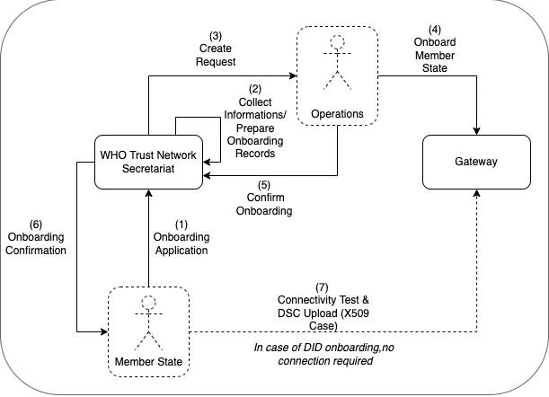
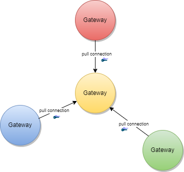

Traduction automatique — non relue par une personne
Cette page a été traduite automatiquement. Aucune personne n’a relu ni validé cette traduction, qui peut contenir des erreurs. Seule la page dans la langue source fait foi. Lire l’original (anglais)
Machine translation — not reviewed by a person. Read the original (English)
Accueil
Résumé
Ce guide décrit les spécifications et les procédures d’intégration du Réseau mondial de certification de la santé numérique (GDHCN) de l’OMS. Le GDHCN est un mécanisme destiné à soutenir la vérification des documents et certifications de santé échangés entre les participants du GDHCN. Ces certifications de santé peuvent comprendre des certificats COVID-19, des carnets de vaccination systématique et des dossiers tenus à domicile conformes aux normes de l’International Patient Summary. Ce mécanisme fournit des moyens d’harmoniser les normes des protocoles de santé mondiaux et d’établir un système de reconnaissance des certificats numériques pour la continuité des soins et aux points d’entrée. Le GDHCN est conçu pour tirer parti des investissements existants réalisés par les juridictions dans le cadre de la riposte à la COVID-19 et fournir l’infrastructure de santé numérique nécessaire à la résilience lors des futures ripostes aux épidémies et aux pandémies.
Le GDHCN est le reflet numérique de la confiance que l’OMS entretient déjà avec les États Membres. Le GDHCN est un réseau de confiance numérique fondé sur des concepts éprouvés, qui servent à décrire les spécifications et les mécanismes d’établissement de la confiance, et qui permettent aux participants admissibles d’établir de nouveaux Domaines de confiance pour l’échange de dossiers de santé numériques vérifiables. Les participants admissibles au réseau de confiance peuvent demander à le rejoindre en suivant un processus d’intégration. Le GDHCN est exploité conformément au Cadre administratif et opérationnel du GDHCN.

La vue dans le modèle ArchiMate de ce guide.
Pour essayer l’adhésion de façon concrète, jouez à Join the Network, une simulation dans laquelle un pays fictif adhère au GDHCN, un choix après l’autre, en suivant les processus d’adhésion.
Contexte et objectif
En réponse à la COVID-19, les gouvernements et les organisations du monde entier ont élaboré et adopté des normes et des technologies pour créer, présenter et vérifier des justificatifs numériques de vaccination et de dépistage. Toutefois, un cadre technique mondial permettant une utilisation pratique et l’interopérabilité de ces justificatifs entre les systèmes – tout en préservant l’autonomie nationale quant à leur utilisation – n’existe pas encore et fait cruellement défaut.
Le Réseau mondial de certification de la santé numérique (GDHCN) de l’OMS est un ensemble de composants utilisés pour vérifier des documents ou certificats de santé numériques interopérables. Ce système comprend trois éléments principaux :
Un ensemble de documents de santé numériques bien définis, émis et vérifiés par les membres du GDHCN Une infrastructure à clés publiques (ICP, en anglais PKI) utilisée pour la publication et la distribution des clés publiques servant à la vérification des signatures numériques des documents de santé numériques.
Une bibliothèque de connaissances utilisée pour maintenir les métadonnées, notamment les codages terminologiques, les codes de produits et les règles métier, qui servent à assurer l’interopérabilité sémantique de ces documents de santé numériques
Outre la vérification et la validation des certificats COVID-19, un réseau mondial de confiance pour la santé numérique tel que le GDHCN peut :
Établir la confiance dans les algorithmes cliniques signés numériquement publiés par l’OMS dans le cadre des travaux sur les lignes directrices SMART. Permettre un catalogue mondial de produits médicaux et de dispositifs de confiance. Garantir que les informations concernant un patient soient accessibles et dignes de confiance, où que l’on se trouve dans le monde. Soutenir la résilience des systèmes de santé face aux futures flambées épidémiques dans le monde. Donner aux personnes les moyens de gérer leur propre santé et leur bien-être.
L’échange interopérable d’informations de santé dans un environnement de confiance est une tâche complexe faisant intervenir un nombre croissant de parties prenantes (p. ex. organismes de santé publique, laboratoires accrédités, organismes de contrôle aux frontières, institutions habilitées à effectuer des vérifications) qui doivent s’assurer que les données sont transférées de manière sûre et sécurisée, que le contenu de santé est interopérable et que les informations sont compréhensibles et exploitables. Ce guide explique comment utiliser un cadre technique mondial pour permettre l’interopérabilité des justificatifs de santé entre les systèmes, tout en préservant l’autonomie nationale quant à leur utilisation.
Parvenir à l’interopérabilité mondiale des certificats de santé n’exige pas que toutes les juridictions utilisent la même norme. L’interopérabilité peut également être obtenue lorsque des mécanismes préétablis sont en place, de sorte que les certificats émis par une juridiction soient acceptés dans une autre. Un certain nombre de services et d’artefacts techniques ont été élaborés pour répondre à des critères particuliers permettant d’établir l’interopérabilité et un système de confiance, notamment :
Des modèles de données, des transformations et des définitions de vocabulaire permettant l’échange de données de santé entre différents formats normalisés, préservant l’autonomie d’une juridiction quant à ses processus nationaux tout en permettant la réémission et la reconnaissance mutuelle des justificatifs entre juridictions Des spécifications normalisées pour l’échange de clés publiques entre différents réseaux afin de vérifier les signatures numériques apposées sur les justificatifs de santé Un registre mondial de confiance et une solution d’infrastructure à clés publiques fédérée assurant l’interopérabilité technique et la gouvernance technique entre les réseaux de confiance régionaux Des flux de travail pour créer, partager et exécuter des règles métier qui évaluent les politiques de santé publique au regard des données de santé pour les exigences transfrontalières ou aux points d’entrée Des outils open source et des orientations techniques visant à réduire la charge de la mise en place de l’infrastructure technique nécessaire pour participer au réseau de confiance fédéré, y compris une infrastructure de réseau de confiance open source permettant aux juridictions de mettre en place leurs propres réseaux de confiance régionaux
Lettre circulaire aux États Membres
Le vendredi 29 septembre 2023, le Directeur général de l’OMS a adressé une lettre circulaire à tous les États Membres pour les encourager à participer au GDHCN.
- C.L.38.2023 (Réseau mondial de certification de la santé numérique) - arabe
- C.L.38.2023 (Réseau mondial de certification de la santé numérique) - chinois
- C.L.38.2023 (Réseau mondial de certification de la santé numérique) - anglais
- C.L.38.2023 (Réseau mondial de certification de la santé numérique) - français
- C.L.38.2023 (Réseau mondial de certification de la santé numérique) - russe
- C.L.38.2023 (Réseau mondial de certification de la santé numérique) - espagnol
Public cible
Ce guide décrit les flux de travail attendus pour les acteurs potentiels d’un écosystème de confiance, à savoir :
Les émetteurs, qui fournissent des justificatifs de santé vérifiables aux personnes, les vérificateurs, qui utilisent les justificatifs de santé vérifiables fournis par les personnes, et les réseaux de confiance, qui établissent des relations de confiance et des politiques entre émetteurs et vérificateurs.
Le public cible de ce guide comprend les décideurs, les analystes et les ressources techniques des émetteurs individuels potentiels, des réseaux de confiance existants ou des vérificateurs potentiels susceptibles de participer au réseau de confiance fédéré. Les parties prenantes comprennent les États Membres, les réseaux régionaux et les organismes d’élaboration de normes.
Participants
Domaines de confiance disponibles
Les codes des Domaines de confiance du GDHCN figurent dans le jeu de valeurs GDHCN Trust Domain et sont décrits plus en détail ici.
</p>
Considérations éthiques et principes de protection des données
Comme pour toute solution numérique, il existe des considérations éthiques, telles que les incidences potentielles sur l’équité et sur l’accès équitable, ainsi que des principes de protection des données, qui doivent guider la conception des spécifications techniques et fournir des orientations sur la manière dont les solutions qui en résultent peuvent être mises en œuvre de façon éthique. La page suivante examine certaines considérations éthiques et certains principes de protection des données essentiels que les États Membres sont encouragés à inclure – et, lorsqu’ils y sont juridiquement tenus, doivent inclure – dans leurs déploiements respectifs de solutions numériques. Ces considérations éthiques et ces principes de protection des données ont également guidé les critères de conception des lignes directrices SMART de l’OMS et de l’utilisation du Réseau mondial de certification de la santé numérique de l’OMS.
Commentaires
Les commentaires concernant le présent guide d’implémentation peuvent être transmis :
en consultant les questions fréquentes ici ; en cliquant sur l’un des liens Feedbacks à droite de tout titre de section ; en envoyant un courriel à gdhcn-support@who.int ; en créant un ticket (issue) sur le dépôt GitHub smart-trust
Communauté
Inscrivez-vous sur la communauté chat.fhir.org et suivez le fil who-smart-guidelines pour les questions, demandes et discussions relatives aux lignes directrices SMART de l’OMS chat.fhir.org L’OMS organise également des appels hebdomadaires sur la rédaction et la mise en œuvre des lignes directrices SMART de l’OMS, auxquels vous êtes invités à participer. Veuillez envoyer un courriel à gdhcn-support@who.int pour recevoir une invitation. gdhcn-support@who.int
Avertissement
La spécification documentée ici est la spécification de travail de démonstration mondiale de l’OMS (WHO Global), et ne peut être utilisée à aucune fin d’implémentation. Ce projet est fourni sans garantie d’exhaustivité ni de cohérence, et la publication officielle prévaut sur ce projet. Aucune responsabilité ne saurait découler de l’utilisation ou de la mauvaise utilisation de cette spécification, ni de ses conséquences.
Principales considérations éthiques
L’éthique devrait faire partie intégrante de la conception et du déploiement d’une solution numérique. Toutefois, les décisions politiques sont souvent complexes et difficiles. De nombreuses considérations différentes devront être prises en compte et mises en balance. Souvent, les données probantes sont incertaines et il existe de nombreux points de vue et positions éthiques concurrents. Les données probantes ne suffiront pas à fournir la bonne réponse, pas plus qu’un simple ensemble de règles éthiques. L’action de santé publique exige un jugement attentif et l’acceptation de la responsabilité des résultats. Un certain nombre de considérations éthiques différentes devraient être prises en compte, portant à la fois sur les objectifs et sur les processus.
Objectifs
Un bon point de départ consiste à déterminer comment l’utilisation d’une solution numérique peut contribuer à des devoirs généraux importants de tout gouvernement par le biais de la santé publique. Trois objectifs clés de l’action de santé publique sont :
protéger et promouvoir le bien-être des personnes, des communautés et de la population dans son ensemble ; garantir l’égalité de traitement de toutes les personnes et prévenir ou atténuer, dans toute la mesure possible, les inégalités de santé évitables et injustes (c’est-à-dire les inégalités en santé) à l’intérieur des frontières de l’État ; et instaurer et maintenir la confiance dans les activités de santé publique en tant que composante du système de soins de santé.
La création et l’utilisation d’une solution numérique peuvent contribuer à chacun de ces objectifs. Par exemple, s’agissant de l’objectif 1, une solution numérique peut promouvoir le bien-être grâce à la fourniture de dossiers de santé numériques permettant la continuité des soins, en garantissant que les personnes ont accès à leurs données de santé d’un établissement à l’autre. La promotion de cet objectif contribue également à la confiance dans l’infrastructure sanitaire de l’État, au bénéfice de l’ensemble de la population. Un tel résultat constitue un bien commun important, c’est-à-dire un bien pour tous qui ne peut être créé par chaque personne seule. De tels biens nécessitent l’action coordonnée et le soutien des gouvernements. En outre, d’autres avantages découleront de l’utilisation d’une solution numérique, grâce à l’amélioration de la santé et à l’accroissement consécutif des possibilités offertes aux personnes et aux communautés de faire leurs propres choix et de poursuivre leurs propres objectifs économiques et sociaux.
S’agissant de l’objectif 2, l’égalité de traitement exige de respecter et de protéger toutes les personnes de manière égale et d’agir pour garantir, dans toute la mesure possible, qu’aucune personne ne fasse l’objet de discrimination. Un exemple de démarche en faveur de cet objectif consiste à veiller à la mise en œuvre de garanties appropriées de protection des données personnelles. Les données de santé individuelles sont des informations privées, et des protections doivent être en place pour garantir qu’aucune personne ne soit contrainte de divulguer ou d’afficher publiquement son dossier de santé personnel (PHR) pour accéder à un espace ou à une activité publics [swiss-taskforce-vaccination-proof-2021]. Une telle pratique et/ou l’absence même d’un PHR peuvent entraîner la stigmatisation des personnes qui n’en disposent pas et aggraver le risque de préjudices.
Un autre exemple de démarche en faveur de l’objectif 2 consiste à réfléchir aux moyens de parvenir à l’équité par la répartition des ressources de santé. Si une solution numérique peut offrir un mécanisme plus fiable, plus exact et plus digne de confiance pour enregistrer des antécédents de santé personnels, elle risque d’aggraver les inégalités en santé, pour les raisons suivantes.
→ Un PHR peut accroître l’exclusion numérique si son application et son utilisation exigent que les personnes aient accès à une infrastructure numérique, ou si cette infrastructure numérique est trop lourde à déployer pour l’ensemble des États Membres.
→ Les personnes confrontées à des obstacles géographiques, financiers ou liés au handicap peuvent également être exclues de l’obtention et de l’utilisation d’un PHR, en fonction de la procédure administrative, du coût et de la conception. Garantir une approche équitable et inclusive de la mise en œuvre d’une solution numérique signifiera que les personnes qui rencontrent les plus grands obstacles à l’obtention et à l’utilisation d’un PHR bénéficient d’un soutien plus important que les autres.
S’agissant de l’objectif 3, la confiance est essentielle pour garantir les avantages d’une solution numérique pour les personnes, les communautés et l’ensemble de la population. Par exemple, la mise en place de mesures solides de protection des données et la prise en compte de considérations procédurales, décrites à la section 1.3.4, peuvent contribuer au maintien de la confiance dans les systèmes de santé publique. Cela contribue à son tour à la réalisation de l’objectif 1. Un autre exemple pourrait être qu’une solution numérique ne soit utilisée qu’aux fins prévues, car des utilisations inappropriées peuvent compromettre les utilisations légitimes.
Processus
La poursuite des objectifs ci-dessus peut créer des problèmes éthiques. Un moyen d’atténuer ce risque consiste à veiller à ce que divers processus respectent des valeurs procédurales importantes. Ces valeurs contribuent à leur tour à la poursuite des objectifs ci-dessus. Ces valeurs sont notamment :
→ TRANSPARENCE : fournir dès le départ des informations claires, exactes et accessibles au public sur le fondement de la politique et sur le processus par lequel elle est élaborée, c’est-à-dire informer le public qu’un tel processus est en cours. Un tel processus discipline la prise de décision et garantit la responsabilité en fournissant une base solide pour une décision finale à laquelle des membres raisonnables du public peuvent adhérer.
→ INCLUSIVITÉ DE LA PRISE DE DÉCISION : offrir à toutes les parties prenantes concernées la possibilité de participer à la formulation et à la conception des politiques, en particulier aux personnes touchées et à celles qui défendent ces personnes et ces groupes.
→ RESPONSABILITÉ : fournir un cadre clair indiquant qui est responsable de quoi, et comment les responsabilités seront réglementées et appliquées.
→ RÉACTIVITÉ : prévoir des mécanismes et des possibilités de réexaminer et de réviser les décisions et les politiques en fonction de l’évolution des données scientifiques et d’autres données pertinentes. Cela peut inclure une consultation publique ou une concertation avec un large éventail d’experts, de secteurs d’activité et d’autres parties prenantes, afin que les politiques répondent aux problèmes et préoccupations éthiques réels et perçus. Les parties prenantes particulièrement importantes sont celles qui risquent d’être désavantagées ou d’être exposées à des risques particuliers ou accrus du fait de la création d’un PHR, comme les personnes qui ne peuvent pas ou ne veulent pas créer de PHR, c’est-à-dire les personnes dont la citoyenneté ou le statut de résident est précaire ou non valide, et les personnes susceptibles de rencontrer d’autres obstacles à l’obtention ou à l’utilisation d’un PHR [ada-lovelace-vaccine-passports-2021].
Considérations éthiques relatives à d’autres utilisations potentielles des dossiers de santé personnels numériques pour des mesures de sécurité sanitaire publique
Un certain nombre d’autres utilisations possibles des PHR numériques soulèvent des questions éthiques. Dans le contexte d’une urgence de santé publique, un PHR numérique pourrait jouer un rôle dans la réalisation de divers objectifs de santé publique, comme la détermination de la couverture vaccinale dans une population donnée, ce qui peut aider à déterminer quand lever ou assouplir les mesures de santé publique et sociales (PHSM) à l’échelle d’une population. Un PHR numérique pourrait également être utilisé pour faciliter une exemption individualisée des PHSM ou leur réduction (par exemple une durée de quarantaine réduite après une exposition), ou l’accès individuel à une activité sur la base d’une preuve de vaccination (si de telles utilisations sont jugées éthiques), ce que l’on peut appeler une fonction de « passe sanitaire ». Le déploiement ou l’utilisation potentiels d’un PHR numérique à ces fins, en particulier en tant que passe sanitaire, engendrent un certain nombre de problèmes éthiques potentiels pour les personnes et les communautés, ainsi que des enjeux en matière de droits humains ([coe-bioethics-vaccine-pass-2021],[who-vaccination-certificates-ethics]).
Premièrement, l’utilisation d’un PHR numérique comme passe sanitaire soulève un ensemble particulier de risques en raison des incertitudes scientifiques actuelles concernant les maladies émergentes. Par exemple, pendant l’urgence de santé publique de portée internationale (PHEIC) liée à la COVID-19, les vaccins contre la COVID-19 ont démontré leur efficacité potentielle et réelle dans la prévention des formes graves de la maladie et des décès, mais la mesure dans laquelle chaque vaccin empêche la transmission du SARS-CoV-2 aux personnes réceptives n’a pas été pleinement évaluée. La durée de la protection conférée par chaque vaccin contre les formes graves de la maladie et contre l’infection, et le degré de protection de chacun contre les variants actuels et futurs du SARS-CoV-2, n’étaient pas pleinement connus. Dans ce contexte d’incertitude scientifique, l’utilisation d’un PHR numérique comme passe sanitaire fondé uniquement sur le statut vaccinal individuel peut accroître le risque de propagation de la maladie. C’est particulièrement le cas si les personnes titulaires d’un PHR numérique sont totalement exemptées des PHSM ou s’il est difficile de faire respecter par les personnes les
PHSM requises pendant une activité (par exemple le port du masque et la distanciation physique pendant un concert) à laquelle elles ont accès sur la base de leur PHR numérique.
Deuxièmement, certaines réactions comportementales potentielles à un PHR numérique dans son rôle de passe sanitaire pourraient nuire à la santé individuelle et publique. Elles sont notamment les suivantes.
→ Lorsque les avantages d’un passe sanitaire sont importants, cela peut entraîner des fraudes aux PHR numériques. Par exemple, des dossiers de vaccination frauduleux peuvent accroître les risques pour la santé publique si une personne non vaccinée est susceptible d’être en contact avec des personnes vulnérables.
→ Les personnes peuvent être moins disposées à divulguer leurs antécédents médicaux et leurs contre-indications (potentielles) à une intervention de santé publique (par exemple un vaccin) afin d’obtenir le PHR numérique correspondant, ce qui accroît le risque d’événements indésirables.
→ La création d’un PHR numérique à la suite de la vaccination de chaque personne peut inciter davantage de personnes à participer à une mesure de santé publique (par exemple se faire vacciner) afin d’accéder aux avantages d’un PHR numérique. Toutefois, elle peut aussi accroître la réticence à participer à la mesure de santé publique, en raison de préoccupations relatives à la vie privée et d’autres préoccupations quant au fait que le dossier de vaccination puisse être relié à des données personnelles et utilisé à des fins autres que celles initialement prévues (par exemple la surveillance de l’état de santé individuel), ou être utilisé par des tiers non prévus (par exemple les services d’immigration, des entités commerciales, des chercheurs) [royal-society-setc-vaccine-passports-2021].
Troisièmement, un PHR numérique utilisé comme passe sanitaire risque d’introduire des désavantages injustes et des injustices. Par exemple, pendant la PHEIC liée à la COVID-19, l’approvisionnement initialement limité en vaccins contre la COVID-19 dans certains pays avait été réparti en donnant la priorité aux personnes les plus exposées au risque d’infection (comme les agents de santé) ou de formes graves (comme les personnes âgées). Il existe un risque que les personnes disposées à se faire vacciner mais à qui un vaccin n’a pas encore été proposé, ou les personnes qui ne peuvent pas être vaccinées pour des raisons médicales, soient injustement désavantagées si un PHR numérique intégrait des fonctions de passe sanitaire. Il convient d’examiner si les personnes pourraient utiliser d’autres preuves de leur état de santé leur permettant un accès similaire aux mêmes services tout en atténuant le risque de propagation de la maladie. Par exemple, pendant la PHEIC liée à la COVID-19, ces autres preuves ont pu inclure un test COVID-19 négatif ou une preuve d’immunité acquise après une infection, fondée sur des tests fiables et exacts (appelée certificat d’immunité), bien que cela soulève également d’importantes préoccupations scientifiques et éthiques [voo2021].
Recommandations
La conception, le développement et la mise en œuvre d’une solution numérique soulèvent de nombreuses questions éthiques. La série de recommandations suivante peut être examinée lors de l’étude d’une telle mise en œuvre.
LE CHAMP D’UTILISATION D’UNE SOLUTION NUMÉRIQUE DEVRAIT ÊTRE CLAIREMENT DÉFINI.
Chaque État Membre qui introduit une solution numérique devrait indiquer clairement les utilisations proposées et préciser qu’elle ne devrait pas être utilisée à d’autres fins.
Pour prévenir toute utilisation abusive potentielle, toute mise en œuvre d’une solution numérique devrait établir des politiques claires et précises, et des lois si nécessaire, sur les limites des utilisations légitimes de la solution. L’utilisation d’une solution numérique pour restreindre le droit à la liberté de circulation et d’autres droits humains n’est justifiée que lorsqu’elle sert la poursuite d’un objectif légitime pendant une urgence de santé publique et qu’elle est prévue par la loi, proportionnée, d’une durée limitée, fondée sur des données scientifiques, et non imposée de manière arbitraire, déraisonnable ou discriminatoire.
LES AVANTAGES, RISQUES ET COÛTS POTENTIELS DEVRAIENT ÊTRE ÉVALUÉS AVANT L’INTRODUCTION D’UNE SOLUTION NUMÉRIQUE.
La création ou le développement d’une solution numérique devrait reposer sur une évaluation des avantages et des coûts de ses utilisations, ainsi que des avantages et inconvénients de l’infrastructure proposée, par comparaison avec d’autres moyens potentiels ou existants d’enregistrer, de valider et de vérifier les dossiers de vaccination. L’évaluation des avantages et des coûts – en tant que fonction de gestion responsable de ressources de santé publique limitées – devrait adopter des perspectives à court, moyen et long terme. Une perspective à court terme examinerait l’utilité et le coût d’opportunité d’un investissement dans une infrastructure numérique plutôt que dans d’autres mesures visant à faire face aux urgences et à répondre à d’autres besoins de santé publique pendant une crise de santé publique. Il convient d’examiner si l’infrastructure numérique pourrait entraver la riposte de santé publique en raison des inefficacités potentielles qu’elle pourrait introduire dans le traitement des enregistrements et/ou des formations, etc. Une perspective à long terme examinerait les avantages potentiels d’une solution numérique pour le renforcement du système de santé, comme l’amélioration du système d’information sanitaire et de son interopérabilité entre juridictions. En outre, les questions éthiques et les risques soulevés par une solution numérique, ainsi que l’incidence des arbitrages entre les avantages et les charges qui en découlent pour les personnes, les familles, les entreprises et les autres parties prenantes concernées, devraient être évalués avant la mise en œuvre. Une concertation avec les communautés, en particulier avec les représentants des groupes susceptibles d’être exposés à des désavantages ou à des risques accrus, devrait également être menée.
L’OBTENTION ET L’UTILISATION D’UNE SOLUTION NUMÉRIQUE DEVRAIENT ÊTRE AUSSI INCLUSIVES ET ÉQUITABLES QUE POSSIBLE. Les solutions numériques devraient être aussi inclusives que possible et ne devraient pas créer de désavantage. Pour y parvenir, il peut être nécessaire de proposer des solutions de remplacement économiques, y compris des solutions sur papier, aux personnes et aux groupes déjà désavantagés, comme les personnes confrontées à des obstacles liés aux compétences numériques ou au handicap, les personnes vivant dans des zones où la connectivité numérique est moins bonne, et les migrants sans papiers ou en situation irrégulière. Nul ne devrait être exclu du fait d’une obligation de paiement individuel pour obtenir et utiliser une solution numérique.
TOUTES LES MESURES NÉCESSAIRES DEVRAIENT ÊTRE MISES EN PLACE POUR PROTÉGER LES PARTICIPANTS AUX FINS DE LA CONTINUITÉ DES SOINS. Une solution numérique comportera des données potentiellement sensibles relatives à la santé des personnes ; ces données devraient donc être protégées par des garanties appropriées de secret médical et de protection de la vie privée. L’accès aux données ou leur utilisation aux fins de la continuité des soins devraient reposer sur la norme de consentement appropriée (par exemple implicite ou explicite) dans un système de soins de santé donné et devraient être suffisants pour permettre au prestataire ou à l’équipe de soins destinataire de continuer à fournir de bons soins médicaux. Ces normes éthiques s’appliqueront également au transfert international de données aux fins de la continuité des soins (par exemple lorsqu’un patient accède à des services médicaux à l’étranger).
Pour les adultes dépourvus de capacité décisionnelle, l’utilisation de leurs dossiers de santé personnels pour les décisions relatives à leurs soins de santé peut reposer sur leurs directives anticipées ou, en l’absence de directives anticipées, être décidée dans l’intérêt supérieur de l’adulte par un mandataire de santé ou un représentant autorisé. Les mineurs dotés d’une intelligence et d’une maturité suffisantes devraient pouvoir autoriser l’utilisation des données de leur dossier de santé aux fins de la continuité des soins, lorsque le consentement est requis.
TOUTE COMMUNICATION DEVRAIT ÊTRE CLAIRE ET TRANSPARENTE.
Les détails de mise en œuvre d’une solution numérique qui concernent les utilisateurs devraient être communiqués de manière transparente, ce qui peut contribuer à promouvoir la confiance du public et l’acceptation de la solution. Cette communication porte notamment sur la manière dont la solution fonctionnerait au bénéfice des personnes et de la santé publique, sur les politiques et mécanismes en place pour limiter l’accès à la solution et son utilisation par des tiers, sur le fait que les données de santé personnelles soient ou non reliées à d’autres types de données et sur les finalités de toute mise en relation de données.
Si, à l’avenir, les utilisations de la solution sont étendues à d’autres fins scientifiques ou de santé publique (par exemple le suivi des programmes ou la recherche), les personnes concernées et les autres membres du public devraient être informés à l’avance de la nature et de la survenue de ces activités, de la structure de surveillance éthique ou de gouvernance en place (y compris pour les activités de surveillance [who-surveillance-ethics-2017]) et des options permettant de contrôler ou de limiter l’utilisation des données de santé personnelles à ces fins. Les données de santé personnelles sont sensibles et devraient, en général, être anonymisées (ou pseudonymisées, ou désidentifiées) à des fins scientifiques ou de santé publique, afin de réduire au minimum les risques pour les personnes concernées. Lorsque des données de santé personnelles doivent être conservées sous une forme identifiable à ces fins, il convient d’examiner si le consentement est requis ou s’il devrait y être dérogé lorsque des critères éthiques appropriés sont remplis (par exemple risque minimal, impossibilité pratique d’obtenir le consentement, absence d’effets négatifs sur les droits et le bien-être des personnes concernées, et service d’un bien de santé publique).
LA SOLUTION NUMÉRIQUE DEVRAIT FAIRE L’OBJET D’UN SUIVI CONSTANT DE SON IMPACT ET ÊTRE AJUSTÉE SELON LES BESOINS. Après la mise en œuvre, il importe de suivre les effets de la solution numérique en termes de résultats positifs et négatifs (par exemple l’impact sur l’équité) et d’envisager des interventions potentielles pour atténuer les résultats négatifs. Ce suivi devrait également examiner les utilisations qui ne relèvent pas clairement des catégories d’utilisation légitime et illégitime définies par les politiques, afin de déterminer si ces utilisations devraient être poursuivies, modifiées ou arrêtées.
Principes de protection des données pour une solution numérique
Cette section présente les principes fondamentaux de protection des données qui constituent des conditions préalables pour la solution numérique. Ces principes visent à guider les autorités nationales chargées de créer la solution numérique ou d’en superviser le développement. Les objectifs sont d’encourager les États Membres à adopter ou à adapter leurs lois et réglementations nationales, selon les besoins, à respecter les principes de protection des données personnelles et à garantir le respect des droits humains et des libertés fondamentales des personnes, en particulier le droit à la vie privée, afin de renforcer la confiance dans la mise en œuvre de la solution numérique.
Les principes de protection des données sont les suivants. FONDEMENT JURIDIQUE, UTILISATION LÉGITIME ET TRAITEMENT LOYAL Les données personnelles collectées dans l’intérêt de l’application de la solution numérique devraient être traitées de manière loyale et non discriminatoire, sur la base du consentement de la personne concernée, de la nécessité de protéger les intérêts vitaux de la personne concernée ou d’une autre personne concernée, ou être expressément justifiées par des objectifs légitimes de santé publique.
Le traitement des données personnelles dans l’intérêt de l’application de la solution numérique devrait avoir un fondement juridique ; il devrait respecter les lois applicables, y compris les normes plus larges en matière de droits humains et les lois sur la protection de la vie privée et des données, ainsi que les normes les plus strictes de confidentialité et de conduite morale et éthique.
Les données personnelles collectées pour l’application de la solution numérique ne devraient être consultées, analysées ou utilisées d’une autre manière que dans le respect des intérêts légitimes des personnes concernées. En particulier, pour garantir une utilisation loyale des données, celles-ci ne devraient pas être utilisées d’une manière qui viole les droits humains ou de toute autre manière susceptible de causer des effets injustifiés ou négatifs à toute personne ou à tout groupe de personnes.
Toute conservation de données personnelles traitées dans l’intérêt de l’application de la solution numérique devrait reposer sur un fondement légitime et loyal. Avant toute conservation de données, les risques, préjudices et avantages potentiels devraient être examinés. Les données personnelles devraient être définitivement supprimées une fois écoulé le temps nécessaire à la réalisation de leur finalité, sauf si leur conservation prolongée est justifiée à des fins déterminées.
TRANSPARENCE
Le traitement des données personnelles dans l’intérêt de l’application de la solution numérique devrait être effectué de manière transparente pour les personnes concernées. Les personnes concernées devraient recevoir des informations facilement accessibles, concises, compréhensibles et faciles à lire, dans un langage clair et sans ambiguïté, concernant : la finalité du traitement des données ; le type de données traitées ; la manière dont les données seront conservées, stockées et partagées, ou rendues accessibles d’une autre manière ; les destinataires des données et la durée de conservation des données. Des informations devraient également être fournies aux personnes concernées sur les calendriers de conservation des données applicables et sur la manière d’exercer leurs droits de personnes concernées. Une liste des entités autorisées à traiter des données personnelles dans l’intérêt de l’application de la solution numérique devrait être rendue publique.
LIMITATION ET SPÉCIFICATION DES FINALITÉS Les données personnelles collectées dans l’intérêt de la solution numérique ne pouvant être utilisées que dans le cadre et aux fins définis, elles ne devraient pas être traitées de manière incompatible avec les finalités définies. L’utilisation des données à toute autre fin, y compris la vente et l’utilisation de données personnelles à des fins commerciales, devrait être interdite, sauf consentement préalable explicite, non équivoque et librement donné de la personne concernée.
Les finalités pour lesquelles les données personnelles sont traitées dans l’intérêt de l’application de la solution numérique devraient être déterminées au plus tard au moment de la collecte des données. L’utilisation ultérieure des données personnelles devrait être limitée à la réalisation de ces finalités déterminées.
Lorsqu’un agent de santé ou un vérificateur de la solution numérique exerce les activités qui lui sont confiées, le transfert à un tiers de données personnelles traitées dans l’intérêt de l’application de la solution numérique, ou l’octroi d’un accès à un tiers, ne devrait être autorisé que si les principes qui sous-tendent le fondement juridique mentionné ci-dessus sont respectés, et si le tiers accorde aux données personnelles une protection appropriée, égale ou supérieure à celle assurée par le responsable du traitement.
Les données personnelles traitées dans l’intérêt de l’application de la solution numérique devraient être pertinentes au regard des finalités pour lesquelles elles sont destinées à être utilisées et, dans la mesure nécessaire à ces finalités, être exactes, complètes et tenues à jour.
PROPORTIONNALITÉ, NÉCESSITÉ ET MINIMISATION DES DONNÉES Le traitement des données personnelles devrait être pertinent (avoir un lien rationnel avec des finalités déterminées), adéquat (suffisant pour réaliser correctement les finalités déterminées) et limité à ce qui est nécessaire à la réalisation des finalités déterminées. Le traitement des données personnelles ne devrait pas être excessif au regard des
finalités pour lesquelles ces données personnelles sont collectées. Les données collectées et conservées sur la solution numérique devraient être aussi limitées que possible, dans le respect de la proportionnalité et de la nécessité. L’accès aux données, leur analyse ou toute autre utilisation devraient être limités au minimum nécessaire à la réalisation de leur finalité. La quantité de données, y compris leur granularité, devrait être limitée au minimum nécessaire. Des mécanismes de divulgation sélective devraient être utilisés pour favoriser un accès proportionné aux données.
L’utilisation des données devrait être surveillée afin de garantir qu’elle n’excède pas l’utilisation légitime. Les données personnelles conservées dans l’intérêt de l’application de la solution numérique ne devraient être conservées et stockées que pendant la durée nécessaire à des fins déterminées. Les données personnelles consultées au moment de la vérification de la solution numérique ne devraient pas être conservées ni stockées dans un référentiel, une base de données ou de toute autre manière.
CONFIDENTIALITÉ ET SÉCURITÉ Les données personnelles traitées dans l’intérêt de l’application de la solution numérique devraient rester confidentielles et ne pas être divulguées à des parties non autorisées ; les données personnelles ne devraient être accessibles qu’à la personne concernée ou à d’autres parties expressément autorisées.
Compte tenu de la nature et de la sensibilité des données personnelles traitées dans l’intérêt de l’application de la solution numérique, des mesures de sécurité organisationnelles, physiques et techniques appropriées devraient être mises en œuvre, tant pour les données électroniques que pour les données sur papier, afin de protéger la sécurité et l’intégrité des données personnelles. Cette protection comprend des mesures de protection contre les violations de données personnelles et des mesures visant à garantir la disponibilité continue de ces données personnelles aux fins pour lesquelles elles sont traitées ; cela s’applique que les données soient stockées sur des appareils, des applications, des serveurs ou des réseaux, ou qu’elles transitent par des services intervenant dans la collecte, la transmission, le traitement, la conservation ou le stockage.
Compte tenu de la technologie disponible et du coût de mise en œuvre, des garanties et procédures techniques et organisationnelles solides (par exemple une surveillance efficace de l’accès aux données, des procédures de notification des violations de données) devraient être mises en œuvre pour garantir une bonne gestion des données tout au long de leur cycle de vie. Ces mesures visent à prévenir toute perte, destruction ou détérioration accidentelle, toute utilisation non autorisée, toute falsification, altération, fraude ou contrefaçon, toute divulgation non autorisée ou toute violation de données personnelles.
En cas de violation de la sécurité entraînant la destruction, la perte ou l’altération accidentelles ou illicites de données personnelles transmises, stockées ou traitées d’une autre manière, ou leur divulgation non autorisée ou l’accès non autorisé à ces données, les utilisateurs de la solution numérique qui détiennent des dossiers de santé (détenteurs de données) devraient en être informés de manière appropriée et en temps utile. Les détenteurs de données devraient être informés : de toute violation de données ; de la nature de la violation de données, susceptible d’affecter leurs droits en tant que personnes concernées ; et des recommandations visant à atténuer les effets négatifs potentiels.
DROITS DES PERSONNES CONCERNÉES, PLAINTES ET RECOURS JURIDIQUES Les détenteurs de données, s’ils ont fourni des preuves suffisantes de leur qualité de détenteur des données, devraient pouvoir exercer les droits des personnes concernées. Ces droits comprennent le droit d’accès, de rectification, d’effacement, d’opposition et de limitation du traitement des données personnelles, sous réserve des conditions fixées par la législation nationale, un décret, un règlement ou tout autre acte ou arrêté officiel. Les personnes concernées ont le droit de demander réparation au moyen d’une procédure de plainte si elles subissent un préjudice ou une perte du fait de données utilisées abusivement ou de données inexactes ou incomplètes. Les personnes concernées devraient recevoir des informations facilement accessibles, concises, compréhensibles et faciles à lire sur la manière dont elles peuvent exercer leurs droits de personnes concernées et demander réparation en justice, y compris sur la manière dont elles peuvent exercer leurs droits en cas de fraude présumée.
SURVEILLANCE INDÉPENDANTE ET RESPONSABILITÉ Une autorité publique indépendante devrait être chargée de vérifier si tout responsable du traitement et tout sous-traitant intervenant dans le traitement de données personnelles dans l’intérêt de la solution numérique respectent les principes, et peut recommander la révocation de l’autorisation de collecter ou de traiter d’une autre manière des données. Cette autorité publique devrait avoir accès à toutes les informations nécessaires à l’accomplissement de sa mission. Des politiques et mécanismes adéquats devraient être en place pour garantir le respect de ces principes.
Critères de conception des dossiers de santé personnels numériques
Compte tenu des considérations éthiques et des principes de protection des données exposés ci-dessus, les critères de conception suivants ont été pris en compte lors de la formulation des exigences relatives à la mise en œuvre d’une solution numérique.
La mise en œuvre de la solution numérique ne devrait pas accroître les inégalités en santé ni creuser la fracture numérique. Chaque personne relevant de la juridiction devrait avoir le droit d’obtenir et de détenir des dossiers sur une solution numérique. Les dossiers détenus par la solution numérique doivent être dans un format accessible à tous, par exemple sous forme papier et numérique. Toute solution devrait également fonctionner en ligne et hors ligne, sur plusieurs plateformes – papier et numérique. Les personnes ne devraient pas être traitées différemment ni bénéficier de niveaux de confiance différents en raison du format de représentation des données qu’elles utilisent (par exemple, il ne devrait y avoir aucune discrimination selon qu’une personne présente un dossier de santé sur un smartphone ou sur une carte papier). Aucune solution ne devrait entraîner de coût supplémentaire pour la personne. Les spécifications d’interopérabilité utilisées dans les solutions numériques devraient reposer sur des normes ouvertes afin de garantir un accès équitable à une gamme d’outils numériques non propriétaires. L’infrastructure sur laquelle repose la solution numérique devrait garantir que les personnes et les États Membres ne sont pas enfermés dans un engagement avec un seul fournisseur. Toute solution devrait être aussi respectueuse de l’environnement que possible. Les options les plus durables sur le plan environnemental devraient être privilégiées afin de réduire tout préjudice supplémentaire injustifié à l’environnement. Toute solution devrait être conçue pour compléter les systèmes d’information sanitaire existants et fonctionner dans leur contexte, selon qu’il convient. Aucune solution ne devrait partager ni stocker plus de données que nécessaire pour mener à bien ses tâches. La minimisation du contenu sanitaire à des fins non liées aux soins de santé et des fonctionnalités de protection de la vie privée devraient être intégrées au système et respectées en conséquence. Des mécanismes de lutte contre la fraude devraient être intégrés à toute approche.
La technologie numérique ne devrait pas être le seul mécanisme disponible pour la vérification. Il devrait toujours exister des moyens de revenir à une vérification manuelle des dossiers sur papier uniquement. Il importe de noter que, malgré les critères de conception technologique décrits ici, il sera essentiel que les États Membres veillent à ce que les cadres juridiques et politiques nécessaires soient en place pour soutenir une utilisation responsable de la solution numérique telle que définie par l’État Membre.
FAQ
Participation et rôles
Qui peut être le représentant désigné dans le formulaire de candidature pour la participation au GDHCN ?
Le représentant devrait être une autorité de santé publique désignée d’un État Membre de l’OMS, investie du pouvoir de décision concernant la participation au GDHCN.
Quel est le rôle du contact du responsable métier ?
Un haut responsable doté d’un pouvoir de décision, associé aux décisions stratégiques mais pas aux opérations quotidiennes.
Qui devrait être le contact technique ?
Une personne chargée de répondre aux questions et de traiter les problèmes techniques tout au long du cycle de vie du projet.
Quel est le rôle du contact juridique ?
Gère les aspects juridiques, y compris la conformité réglementaire et les questions contractuelles liées à la participation au GDHCN.
Informations financières
La participation au GDHCN entraîne-t-elle des frais ?
La participation au GDHCN est actuellement gratuite, grâce aux financements existants de l’OMS.
Exigences techniques et infrastructure
Quel sera l’effet de la transition vers l’outil de gestion du catalogue de produits de l’OMS sur les codes de vaccins ?
L’outil vise à gérer efficacement les codes de vaccins, en tenant compte de la complexité du codage de la terminologie médicale.
Pouvons-nous continuer à participer dans l’environnement UAT sans passer en production ?
Oui, il est possible de continuer dans l’environnement UAT, ce qui n’empêche pas une transition ultérieure vers l’environnement de production.
Comment le GDHCN soutient-il la collaboration open source ?
Au moyen de plateformes telles que GitHub, qui permettent à la communauté de contribuer à l’amélioration des spécifications techniques et de la documentation.
Comment le GDHCN intègre-t-il les spécifications techniques existantes de l’EU DCC ?
En intégrant des spécifications du certificat COVID numérique de l’UE (EU DCC), telles que les API d’accès aux clés, les règles métier et les jeux de valeurs, afin d’assurer la compatibilité.
Quels sont les projets d’évolution et de maintenance futures de l’infrastructure du GDHCN ?
Les évolutions futures seront orientées par l’OMS, en mettant l’accent sur la compatibilité avec les systèmes existants et en assurant la sécurité et la rétrocompatibilité.
Transition et intégration
Comment la transition des actifs techniques de l’EU DCC vers le GDHCN est-elle gérée ?
Cela comprend le transfert des API et des jeux dans les spécifications du GDHCN, l’OMS veillant à une intégration harmonieuse.
Quel est le processus d’intégration pour les nouvelles applications qui n’étaient pas déjà connectées à l’EU DCC ?
Il s’agit de vérifier les connexions techniques et la compatibilité avec les systèmes existants, notamment en ce qui concerne les certificats TLS.
Sécurité et conformité
Comment le matériel cryptographique et le processus d’échange des clés sont-ils gérés au sein du GDHCN ?
Grâce à des définitions détaillées du matériel cryptographique, qui garantissent la clarté et la visibilité du processus d’échange des clés et qui s’inspirent étroitement des définitions de l’EU DCC.
Comment les incidents de sécurité sont-ils gérés pendant la transition vers la gouvernance de l’OMS ?
L’accent est mis sur le traitement des incidents de sécurité, sans modification du dépôt sauf si des raisons de sécurité l’imposent.
Gestion des certificats
Quelle est la politique actuelle de renouvellement des certificats TLS pour les systèmes dorsaux nationaux ?
La politique est en cours de réexamen ; des discussions portent sur des solutions de rechange à la politique de renouvellement tous les trois mois, notamment des durées de validité plus longues ou des certificats autosignés.
Les réseaux hébergés par l’OMS peuvent-ils utiliser des certificats TLS autosignés ?
La possibilité que l’OMS utilise des certificats autosignés avec des durées de validité plus longues est en discussion.
Quel est le processus pour proposer des solutions de rechange à la politique actuelle relative aux certificats TLS ?
Des propositions de solutions de rechange, telles que des durées de validité plus longues, sont à l’étude afin de répondre aux préoccupations liées aux politiques de renouvellement à court terme.
###!## Comment l’OMS garantit-elle la confiance sans s’appuyer uniquement sur le certificat TLS ? Faire confiance à l’autorité de certification plutôt qu’au certificat lui-même pourrait résoudre le problème des renouvellements fréquents.
Exigences métier
Ce réseau de confiance en santé numérique est un réseau de parties prenantes qui échangent et utilisent des informations de santé de manière sécurisée sur la base de principes de confiance, de sécurité et de confidentialité, et il est conçu pour garantir que les informations de santé sont traitées de manière sécurisée, confidentielle et conforme. Au travers du GDHCN, l’OMS assure la fonction de dépositaire d’un réseau de confiance en santé numérique.
Il est divisé en sections comme suit :
Concepts clés Exigences fonctionnelles Cas d’usage Personas Dictionnaire de données
Outre les concepts clés utilisés tout au long du présent document, qui sont définis ci-dessous, une documentation complémentaire est disponible sur :
- Cadre administratif et opérationnel du GDHCN
- Glossaire
- Gouvernance des certificats
- Processus d’intégration
En cas de divergence, le Cadre administratif et opérationnel du GDHCN devrait être considéré comme la source faisant autorité pour les définitions et les concepts.
Concepts Glossaire
Réseau de confiance du GDHCN
Le Réseau de confiance du GDHCN est un Réseau de confiance composé du Secrétariat du GDHCN et des Participants au GDHCN. Le Réseau de confiance du GDHCN rend opérationnels les Domaines de confiance au moyen d’une Passerelle du réseau de confiance, en permettant la vérification bilatérale et l’utilisation des Certificats numériques de santé vérifiables ainsi que l’utilisation des Services de confiance par les Participants au GDHCN.
Secrétariat du GDHCN
Le Secrétariat de l’OMS assure la direction opérationnelle et la gestion du GDHCN et constitue, dans ce rôle, le Secrétariat du GDHCN.
Participant au GDHCN
Un Participant au GDHCN est un participant au Réseau de confiance qui respecte les Conditions de participation et gère l’infrastructure technique et les processus de gouvernance nécessaires. Les Participants au GDHCN sont chargés de prendre des décisions bilatérales concernant l’utilisation des Services de confiance.
Participant admissible au GDHCN
Un Participant admissible au GDHCN est l’une des entités suivantes :
- un État Membre ou Membre associé de l’OMS, ou une de ses entités infranationales ;
- un État Partie reconnu par le Règlement sanitaire international, ou une de ses entités infranationales ;
- l’Organisation des Nations Unies (ONU) et d’autres organisations intergouvernementales entretenant des relations effectives avec l’OMS ;
- un fonds, un programme, une institution spécialisée ou une organisation apparentée du système des Nations Unies ; ou
- une organisation officiellement mandatée par l’une des organisations susmentionnées, capable de respecter les Conditions de participation au GDHCN et remplissant une ou plusieurs des fonctions de service de santé suivantes :
- Agence de santé publique ;
- Agence d’accréditation de la formation aux professions de santé ;
- Agence d’autorisation des services de santé ; ou
- Agence de sécurité sanitaire publique. Une fois admis au GDHCN, à l’issue concluante du Processus d’intégration, il est désigné comme Participant au GDHCN. Un Participant admissible au GDHCN ayant engagé le Processus d’intégration est désigné comme Candidat admissible au GDHCN.
Conditions de participation (TOP)
La participation au GDHCN est soumise au Processus d’intégration établi par le Secrétariat du GDHCN à sa seule et entière discrétion, et conformément aux règles, règlements, politiques et pratiques de l’OMS, tels qu’ils peuvent être modifiés de temps à autre. Les exigences des Conditions de participation au GDHCN comprennent les éléments suivants :
- TOP0 Partage des justificatifs nécessaires à l’établissement d’une connexion mTLS (sécurité mutuelle de la couche de transport) entre le ou les systèmes dorsaux d’un Participant au GDHCN et la Passerelle du réseau de confiance ;
- TOP1 Conformité, lors du Processus d’intégration initial et pendant les périodes de validation régulières, aux spécifications techniques requises pour une ICP (en anglais PKI) ;
- TOP2 Conformité, lors du Processus d’intégration initial et pendant les périodes de validation régulières, aux spécifications techniques des Certificats numériques de santé vérifiables et aux API des Services de confiance pour chaque Domaine de confiance applicable ;
- TOP3 Conformité aux normes politiques et réglementaires des Participants au GDHCN relatives aux Services de confiance qu’un Participant au réseau de confiance du GDHCN exploite ou utilise pour chaque Domaine de confiance applicable ; et
- TOP4 Fourniture de pièces justificatives (p. ex. mandat, cadre juridique) démontrant qu’il s’agit d’un Participant admissible au GDHCN, selon ce que l’OMS peut demander, à sa seule discrétion, de temps à autre.
Représentant du responsable métier
Personne identifiée par un Participant au GDHCN comme ayant la responsabilité principale, sur les plans opérationnel et programmatique, de la mise en œuvre par ce Participant au GDHCN des cas d’usage couverts par un Domaine de confiance.
Représentant responsable des clés
Personne identifiée par un Participant au GDHCN comme ayant la responsabilité principale de la gestion de l’Infrastructure à clés publiques, y compris la génération de toute paire de clés publique-privée nécessaire, ainsi que la configuration et la gestion des connexions entre l’Infrastructure à clés publiques du Participant au GDHCN et la Passerelle du réseau de confiance du GDHCN.
Représentant juridique
Personne désignée par un Participant au GDHCN comme ayant la responsabilité principale d’examiner, au nom de ce Participant au GDHCN, les exigences relatives à un Domaine de confiance. Il devrait s’agir d’une personne que le Secrétariat du GDHCN peut consulter au sujet de toute question juridique ou politique susceptible de se poser, telle que des modifications du présent document ou de l’une de ses Annexes qui définit un Domaine de confiance.
Représentant technique
Personne désignée par un Participant au GDHCN comme ayant la responsabilité générale principale de la sécurité, des questions techniques et de l’infrastructure des systèmes de ce Participant au GDHCN pour le Domaine de confiance concerné, y compris de veiller au respect des spécifications techniques.
Lettre de candidature
Demande officielle adressée, par un canal vérifiable et sécurisé, par un Participant admissible au GDHCN au Secrétariat du GDHCN en vue de rejoindre le Réseau de confiance du GDHCN et de participer à un Domaine de confiance donné.
Processus d’intégration
Processus requis pour qu’un Participant admissible au GDHCN rejoigne le Réseau de confiance du GDHCN. À l’issue concluante du Processus d’intégration, le Participant admissible au GDHCN est considéré comme un Participant au GDHCN. Parfois appelé simplement « Intégration ».
Agence d’accréditation de la formation aux professions de santé
Organisation ou unité organisationnelle chargée d’établir et/ou de mettre en œuvre les procédures d’accréditation des établissements de formation aux professions de santé. Voir https://apps.who.int/iris/rest/bitstreams/1473223/retrieve et https://applications.emro.who.int/docs/em_rc50_r9_en.pdf?ua=1
Agence d’autorisation des services de santé
Organisation ou unité organisationnelle chargée d’établir et/ou de mettre en œuvre les procédures d’autorisation d’exercer, et d’autoriser des organisations ou des personnes à fournir des services cliniques, des services du système de santé ou des services de santé publique dans sa juridiction. L’autorisation recouvre les processus par lesquels des autorités gouvernementales dûment habilitées, telles que des organisations professionnelles reconnues, autorisent une personne ou un établissement de soins à exercer une activité ou une profession médicale. Voir : https://apps.who.int/iris/rest/bitstreams/1473223/retrieve et https://cdn.who.int/media/docs/default-source/documents/health-systems-strengthening-glossary.pdf.
Agence de santé publique
Organisation, ou unité organisationnelle, chargée d’établir les procédures relatives aux activités de protection, de promotion et d’amélioration de la santé publique dans une juridiction ou un domaine donné, et/ou de mettre en œuvre ces activités. Peut également être appelée ministère de la Santé, département de la Santé ou autorité de santé publique.
Agence de sécurité sanitaire publique
Organisation, ou unité organisationnelle, chargée d’établir les procédures relatives aux activités requises, tant proactives que réactives, visant à réduire au minimum le danger et l’impact des événements aigus de santé publique qui menacent la santé des populations au-delà des régions géographiques et des frontières internationales, et/ou de mettre en œuvre ces activités. Voir : https://www.who.int/health-topics/health-security.
Infrastructure à clés publiques (ICP)
L’Infrastructure à clés publiques (ICP) est le modèle de confiance fondé sur les certificats de clé publique et les autorités de certification. C’est le moyen de publier et de distribuer les Listes de confiance comprenant les clés publiques qui peuvent être utilisées pour vérifier numériquement l’émetteur d’un Certificat numérique de santé vérifiable.
Autorité de certification des signataires (SCA)
Chaque Participant au GDHCN gère une ou plusieurs autorités de certification des signataires (SCA), dont les certificats ont une durée de vie relativement longue. La SCA émet les certificats de clé publique des Signataires de documents nationaux, à durée de vie courte. La SCA joue le rôle d’ancre de confiance, de sorte que les Participants au GDHCN qui s’y fient peuvent utiliser le certificat de la SCA pour valider l’authenticité et l’intégrité des certificats DSC, qui changent régulièrement.
Titulaire
Un Titulaire est une personne qui a en sa possession un Certificat numérique de santé vérifiable, reçu d’un Émetteur. Le Titulaire peut choisir de partager le Certificat numérique de santé vérifiable avec un Destinataire.
Destinataire
Un Destinataire est un système autorisé par un Participant au réseau de confiance à recevoir d’un Titulaire un Certificat numérique de santé vérifiable, à le vérifier et à en utiliser le contenu.
Émetteur
Un Émetteur est un système autorisé par un Participant au réseau de confiance à générer des Certificats numériques de santé vérifiables qui sont remis à un Titulaire. Un Émetteur est chargé de générer le contenu qui est signé numériquement dans le Certificat numérique de santé vérifiable. Pour signer ce contenu, un Émetteur devrait soit être lui-même un Signataire de documents, soit recourir à un service de Signataire de documents, selon ce qu’autorise la politique de sa juridiction.
Signataire de documents
Un Signataire de documents utilise la clé privée d’une paire de clés privée-publique pour signer numériquement des Certificats numériques de santé vérifiables. Une même clé privée est censée signer un grand nombre de Certificats numériques de santé vérifiables. La clé publique correspondante est appelée certificat de signataire de documents (DSC).
Certificats de signataire de documents (DSC)
Les certificats de signataire de documents sont les certificats de clé publique associés aux Signataires de documents qui sont émis ou reconnus par le Participant au GDHCN.
Gouvernance des certificats de clés de chiffrement
Processus et spécifications techniques relatifs à la gestion et à l’utilisation des clés de chiffrement pour les Certificats numériques de santé vérifiables, l’Infrastructure à clés publiques et la sécurisation des connexions avec les Services de confiance et la Passerelle du réseau de confiance.
Domaine de confiance
Un Domaine de confiance comprend :
- des cas d’usage et des processus métier définis concernant l’utilisation des Certificats numériques de santé vérifiables ;
- les spécifications techniques ouvertes et interopérables qui identifient ou définissent les Services de confiance et les Certificats numériques de santé vérifiables applicables ; et
- un ensemble de normes politiques et réglementaires décrivant le comportement attendu des Participants au GDHCN en ce qui concerne l’exploitation des Services de confiance et l’utilisation des Certificats numériques de santé vérifiables (p. ex. minimisation des données, confidentialité, champ d’utilisation).
Listes de confiance
Les applications de vérification universelles qui prennent en charge différentes normes de justificatifs sont compliquées par la grande variabilité du format des charges utiles des justificatifs, des signatures, des formats de clés et des méthodes de distribution des clés. Les formats de clés publiques comprennent les certificats x509, les ensembles de clés web JSON (JWKS) et les documents DID. Les méthodes de distribution des clés de signature comprennent les passerelles API, l’hébergement par l’émetteur à une URL prédéfinie, l’intégration dans des certificats et la résolution fondée sur la chaîne de blocs. L’établissement de la racine de confiance par une ancre de confiance ou par la distribution d’une liste de confiance a été réalisé au moyen de passerelles API, d’URL hébergées, de diffusion privée et d’autres accords de partage bilatéraux.
Si une certaine variabilité est à prévoir dans une approche qui préserve la souveraineté, il existe des possibilités d’harmonisation du format et de la distribution des clés afin de favoriser l’interopérabilité. Dans cet objectif, nous proposons un format unifié de liste de confiance permettant de rassembler et de partager l’infrastructure à clés publiques pour toutes les spécifications de justificatifs utilisées par les réseaux de confiance existants. Il importe de noter que ce format n’impose pas de cadre politique particulier aux participants au réseau de confiance.
Le GDHCN prend actuellement en charge deux moyens de distribution des clés au moyen de listes de confiance
- API EU DCC obligatoire
- Identifiant décentralisé (DID) facultatif
Réseau de confiance
Un Réseau de confiance est un moyen d’authentifier les clés publiques de chiffrement utilisées par les participants d’un réseau pour effectuer des services de chiffrement, vérifier des signatures numériques, établir des connexions sécurisées entre systèmes et, plus généralement, utiliser des clés publiques de chiffrement.
La vue dans le modèle ArchiMate de ce guide.
Réseau de confiance
Passerelle du réseau de confiance (TNG)
La Passerelle du réseau de confiance (TNG) est le logiciel libre et son infrastructure informatique d’exploitation, fondés sur des normes ouvertes, assurant une Infrastructure à clés publiques et des services de gestion des métadonnées, et utilisés pour rendre opérationnels un ou plusieurs Domaines de confiance. Il est possible d’interagir avec la Passerelle du réseau de confiance au moyen de l’API une fois qu’une connexion mTLS a été établie.
Passerelle du réseau de confiance - Ancre de confiance (TNGTA)
Le certificat de clé publique d’ancre de confiance de la TNG. La clé privée correspondante sert à signer hors ligne la liste de tous les certificats SCA.
Passerelle du réseau de confiance - Sécurité de la couche de transport (TNGTLS)
Le certificat de clé publique de serveur TLS de la TNG.
Participant au réseau de confiance (TNP)
Participant au réseau de confiance (TNP) est un acronyme utilisé pour désigner les certificats, l’infrastructure ou les artefacts techniques mis à disposition par les Participants au GDHCN dans le cadre du Réseau de confiance du GDHCN.
Système dorsal du Participant au GDHCN
Système dorsal d’un Participant au GDHCN servant à gérer la partie locale des informations. La mise en œuvre du Système dorsal du Participant au GDHCN n’entre pas dans le champ du présent document. Un système dorsal national peut également être compris comme une partie de confiance intégrée à la Passerelle du réseau de confiance (il peut aussi s’agir d’un script, d’un proxy ou d’un serveur web).
Participant au réseau de confiance - Autorité de certification d’échange de données (TNPDECA)
Le certificat de clé publique DSCA d’un Participant au GDHCN (il peut y en avoir plusieurs).
Le certificat de clé publique DECA d’un Participant au GDHCN (il peut y en avoir plusieurs). Le DECA est un certificat qui joue le rôle d’ancre de confiance dans la vérification de la chaîne de certificats des DESC émis par un Participant au réseau de confiance”
Participant au réseau de confiance - Autorité de certification de signature de documents (TNPDSCA)
Le certificat de clé publique DSCA d’un Participant au GDHCN (il peut y en avoir plusieurs). Le DSCA est un certificat qui joue le rôle d’ancre de confiance dans la vérification de la chaîne de certificats des DSC émis par un Participant au réseau de confiance”
Participant au réseau de confiance - Sécurité de la couche de transport (TNPTLS)
Le certificat de clé publique d’authentification client TLS du Système dorsal d’un Participant au GDHCN.
Participant au réseau de confiance - Sécurité de la couche de transport (TNPUP)
Le certificat de clé publique qu’un Participant au GDHCN utilise pour signer les paquets de données téléversés vers la TNG.
Vérificateur du Participant au réseau de confiance
Système utilisé par un Participant au GDHCN pour vérifier la signature numérique d’un Certificat numérique de santé vérifiable.
Service de confiance
Service (numérique ou autre) lié à l’émission, à la gestion, à la vérification, à l’échange ou à d’autres processus pertinents concernant les Certificats numériques de santé vérifiables, et défini à l’aide de normes de santé numérique ouvertes et interopérables.
Certificat numérique de santé vérifiable
Certificat numérique de santé vérifiable : représentation numérique d’un ensemble de données constituant un certificat ou un document, conçue pour un ensemble de cas d’usage cliniques ou de santé publique précis et définie à l’aide de normes de santé numérique ouvertes et interopérables ; qui contient, ou à laquelle est associée, une signature numérique pouvant être vérifiée au moyen de la clé publique d’une paire de clés de chiffrement publique-privée, et qui est émise par un Participant au GDHCN.
Les Certificats numériques de santé vérifiables spécifiques sont définis dans les Profils de contenu
Gouvernance des certificats
Le présent document décrit la gouvernance des certificats de clé publique utilisée par le GDHCN de l’OMS. Voir le document concepts pour plus d’informations.
Remarque : dans l’image intégrée, les changements de libellés suivants s’appliquent :
- DCCG -> TNG
- CSCA -> SCA
- DCC -> GDHCN
- NB -> TNP
Contexte
La fonctionnalité principale est l’échange sécurisé et fiable de clés de signature pour la Passerelle du réseau de confiance du GDHCN (TNG), qui fait office de référentiel central des clés publiques. Les Participants au GDHCN sont habilités à publier les clés publiques qu’ils utilisent pour signer les Certificats numériques de santé vérifiables. Les Participants au GDHCN qui se fient à ces clés peuvent utiliser la TNG pour récupérer en temps utile du matériel de clé publique à jour.
Le modèle de confiance du cadre du GDHCN est une infrastructure à clés publiques (ICP, en anglais PKI). Chaque Participant au GDHCN gère une ou plusieurs autorités de certification des signataires (SCA), dont les certificats ont une durée de vie relativement longue. La SCA émet des certificats de clé publique pour les signataires de documents à courte durée de vie (c’est-à-dire les signataires des certificats numériques de santé), appelés certificats de signataire de documents (DSC). La SCA fait office d’ancre de confiance, de sorte que les Participants au GDHCN qui s’y fient peuvent utiliser le certificat de la SCA pour valider l’authenticité et l’intégrité des certificats DSC, qui changent régulièrement. Une fois ces certificats validés, le Participant au GDHCN peut les fournir (ou seulement les clés publiques qu’ils contiennent) à ses applications de validation.
Outre les SCA et les DSC, la TNG s’appuie également sur l’ICP pour authentifier les transactions et signer les données, comme fondement de l’authentification et comme moyen de garantir l’intégrité des canaux de communication entre le Participant au GDHCN et la TNG.<
L’image suivante présente une vue d’ensemble du système.
Overview

Champ d’application du document
Les signatures numériques peuvent servir à garantir l’intégrité et l’authenticité des données. Les infrastructures à clés publiques établissent la confiance en liant des clés publiques à des identités (ou émetteurs) vérifiées. Cela est nécessaire pour permettre aux autres participants de vérifier l’origine des données et l’identité de l’interlocuteur, et de décider de leur confiance. Dans la TNG, plusieurs certificats de clé publique sont utilisés pour l’authenticité. Le présent document définit quels certificats de clé publique sont utilisés et comment ils devraient être conçus afin de permettre une large interopérabilité entre les différents Participants au GDHCN. Le présent document s’appuie sur [ehn-trust-framework-2021] et [ehn-dcc-techspec-vol1-2021]. Il fournit davantage de détails sur les certificats de clé publique nécessaires et donne des orientations sur les modèles de certificats et les périodes de validité pour les pays qui souhaitent exploiter leur propre SCA. Étant donné que les DSC doivent pouvoir être vérifiés pendant une période définie (à compter de leur émission, ils expirent après une durée donnée), il est nécessaire de définir un modèle de vérification pour toutes les signatures apposées sur les certificats de clé publique et sur le certificat numérique de santé. Les procédures juridiques et administratives ne relèvent pas du champ du présent document ; elles doivent être définies séparément.
Terminologie
Les mots clés « DOIT » (MUST, SHALL), « NE DOIT PAS » (MUST NOT, SHALL NOT), « OBLIGATOIRE » (REQUIRED), « DEVRAIT » (SHOULD), « NE DEVRAIT PAS » (SHOULD NOT), « RECOMMANDÉ » (RECOMMENDED), « NON RECOMMANDÉ » (NOT RECOMMENDED), « PEUT » (MAY) et « FACULTATIF » (OPTIONAL) figurant dans le présent document doivent être interprétés comme décrit dans le BCP 14 (RFC2119, RFC8174) lorsque, et seulement lorsque, ils apparaissent en majuscules, comme ici.
Ces concepts et le tableau suivant présentent les abréviations et la terminologie utilisées dans l’ensemble du présent document.
| Terme | Définition | ||||||
|---|---|---|---|---|---|---|---|
| Certificat | Ou certificat de clé publique. Certificat X.509 v3 contenant la clé publique d’une entité | EC-DSA | Elliptic Curve Digital Signature Algorithm (algorithme de signature numérique à courbe elliptique). Algorithme de signature cryptographique fondé sur les courbes elliptiques | mTLS | TLS mutuel. Protocole TLS (Transport Layer Security) avec authentification mutuelle | RSA | Algorithme cryptographique asymétrique fondé sur la factorisation des entiers, utilisé pour les signatures numériques ou le chiffrement asymétrique |
Flux de communication et services de sécurité de la TNG
La présente section donne une vue d’ensemble des flux de communication et des services de sécurité du système de la TNG. Elle définit également les clés et les certificats utilisés pour protéger les communications, les informations téléversées, les certificats numériques de santé et une liste de confiance signée contenant tous les certificats de SCA intégrés. La figure suivante donne une vue d’ensemble des flux de communication et des services de sécurité de la TNG. Les sous-sections suivantes expliquent la conception plus en détail.
Trust Model

Généralités
La TNG fonctionne comme une plateforme de données qui permet l’échange de paquets de données signés entre Participants au GDHCN. Dans la phase actuelle, les paquets de données signés contiennent les DSC utilisés par les Participants au GDHCN. Cela permet aux systèmes dorsaux des autres Participants au GDHCN de les récupérer et de distribuer les informations à leurs applications de validation. Même si les DSC sont déjà signés par la SCA, cette approche permet d’étendre ultérieurement le système afin que les systèmes dorsaux puissent téléverser d’autres contenus, éventuellement non signés (comme des règles de validation).
Les paquets de données téléversés sont fournis par la TNG « tels quels », ce qui signifie que la TNG n’ajoute ni ne supprime de DSC dans les paquets qu’elle reçoit. Les systèmes dorsaux des Participants au GDHCN doivent être en mesure de vérifier l’intégrité et l’authenticité de bout en bout des données téléversées (voir la section « Intégrité et authenticité des données téléversées »).
En outre, les systèmes dorsaux des Participants au GDHCN et la TNG utiliseront l’authentification TLS mutuelle pour établir une connexion sécurisée (voir la section « Authentification et établissement de la connexion »). Celle-ci s’ajoute donc aux signatures des données échangées.
Authentification et établissement de la connexion
La TNG utilise le protocole TLS (Transport Layer Security) avec authentification mutuelle pour établir un canal chiffré et authentifié entre le système dorsal du Participant au GDHCN et l’environnement de la Passerelle du réseau de confiance, et pour utiliser son API. À cette fin, la TNG détient un certificat de serveur TLS, abrégé TNGTLS, et les systèmes dorsaux des Participants au GDHCN détiennent un certificat client TLS, abrégé TNPTLS. Les modèles de certificats sont fournis à la section « Modèles de certificats ».
Le système dorsal de chaque Participant au GDHCN peut fournir son propre certificat TLS. Ce certificat sera explicitement inscrit sur la liste d’autorisation et peut donc être émis par une autorité de certification publiquement reconnue (p. ex. une autorité de certification qui respecte les exigences de base du CA/Browser Forum), par une autorité de certification juridictionnelle, ou être auto-signé. Chaque Participant au GDHCN est responsable des données de sa juridiction et de la protection de la clé privée utilisée pour établir la connexion à la TNG. Il est clair que l’approche « apportez votre propre certificat » exige un processus d’enregistrement et d’identification bien défini, ainsi que des procédures de révocation et de renouvellement, qui sont décrits à la section « Enregistrement des systèmes dorsaux des Participants au GDHCN ».
La TNG utilise une liste d’autorisation à laquelle les certificats TLS des systèmes dorsaux des Participants au GDHCN sont ajoutés après leur enregistrement réussi. Seuls les systèmes dorsaux des Participants au GDHCN qui s’authentifient avec une clé privée correspondant à un certificat de la liste d’autorisation peuvent établir une connexion sécurisée avec la TNG.
La TNG utilisera également un certificat TLS qui permet aux systèmes dorsaux des Participants au GDHCN de vérifier qu’ils établissent bien une connexion avec la « vraie » TNG et non avec une entité malveillante se faisant passer pour la TNG. Le certificat TNGTLS sera émis par une autorité de certification publiquement reconnue (incluse dans tous les principaux navigateurs). Il incombe aux Participants au GDHCN de vérifier que leur connexion à la TNG est sécurisée (par exemple en comparant l’empreinte du certificat TNGTLS du serveur auquel ils sont connectés à celle fournie après l’enregistrement).
Autorités de certification des signataires et modèle de validation
Tous les Participants au GDHCN qui prennent part au cadre du GDHCN DOIVENT utiliser une SCA pour émettre les DSC. Les Participants au GDHCN PEUVENT disposer de plusieurs SCA, par exemple en cas d’autorités de délégation. Chaque Participant au GDHCN peut soit utiliser des autorités de certification existantes, soit mettre en place une autorité de certification dédiée (éventuellement auto-signée) pour le système de SCA. Les Participants au GDHCN DOIVENT présenter leur(s) certificat(s) de SCA au Secrétariat du GDHCN lors de la procédure d’intégration officielle. Après l’enregistrement réussi du Participant au GDHCN (voir la section « Enregistrement des systèmes dorsaux des Participants au GDHCN » pour plus de détails), le Secrétariat du GDHCN mettra à jour une liste de confiance signée contenant tous les certificats de SCA actifs. Le Secrétariat du GDHCN utilisera une paire de clés asymétriques dédiée pour signer la liste de confiance et les certificats dans un environnement hors ligne. La clé privée ne sera pas stockée sur le système en ligne de la TNG, de sorte qu’une compromission du système en ligne ne permette pas à un attaquant de compromettre la liste de confiance. Le certificat d’ancre de confiance correspondant, TNGTA, sera fourni aux Participants au GDHCN au cours du processus d’intégration. Les Participants au GDHCN peuvent récupérer la liste de confiance auprès de la TNG pour leurs procédures de vérification.
La SCA est définie comme l’autorité de certification qui émet les DSC ; par conséquent, les Participants au GDHCN qui utilisent une hiérarchie d’autorités de certification à plusieurs niveaux (p. ex. autorité racine -> SCA -> DSC) DOIVENT fournir l’autorité de certification subordonnée qui émet les DSC. Dans ce cas, si un Participant au GDHCN utilise une autorité de certification existante, le système du GDHCN ignorera tout ce qui se situe au-dessus de la SCA et n’inscrira sur la liste d’autorisation que la SCA en tant qu’ancre de confiance (bien qu’il s’agisse d’une autorité de certification subordonnée). En effet, le modèle de l’OACI [ehn-dcc-techspec-vol1-2021] ne permet qu’exactement deux niveaux : une SCA « racine » et un DSC « feuille » unique signé uniquement par cette SCA. Si un Participant au GDHCN exploite sa propre SCA, il est responsable de l’exploitation sécurisée et de la gestion des clés de cette autorité de certification. Il convient de noter que la SCA fait office d’ancre de confiance pour les DSC ; la protection de la clé privée de la SCA est donc essentielle à l’intégrité de l’environnement du Réseau de confiance.
Le modèle de vérification de l’ICP du Réseau de confiance est le modèle en coquille (défini par exemple dans [etsi-en-319-102-1-2016]), selon lequel tous les certificats du chemin de validation doivent être valides à un instant donné (c’est-à-dire au moment de la validation de la signature). Par conséquent, les restrictions suivantes s’appliquent :
- La SCA NE DOIT PAS émettre de certificats dont la validité dépasse celle du certificat de l’autorité de certification lui-même (voir [2, section 5]).
- Le signataire de documents NE DOIT PAS signer de documents dont la validité dépasse celle du DSC lui-même. Les Participants au GDHCN qui exploitent leur propre SCA DOIVENT définir des périodes de validité pour leur SCA et pour tous les certificats émis, et ils DOIVENT assurer le renouvellement des certificats. La section « Autorités de certification, périodes de validité et renouvellement » contient des recommandations relatives aux périodes de validité.
Intégrité et authenticité des données téléversées
Les Participants au GDHCN peuvent utiliser la TNG pour téléverser et télécharger des paquets de données signés numériquement après une authentification mutuelle réussie. Dans un premier temps, ces paquets de données contiennent les DSC des Participants au GDHCN.
La paire de clés utilisée par le système dorsal du Participant au GDHCN pour la signature numérique des paquets de données téléversés dans le système de la TNG est appelée paire de clés de signature de téléversement du participant au réseau de confiance, et le certificat de clé publique correspondant est abrégé en certificat TNPUP. Chaque certificat du Réseau de confiance apporte son propre certificat TNPUP, qui peut être auto-signé ou émis par une autorité de certification existante, telle qu’une autorité de certification publique (c’est-à-dire une autorité de certification qui émet des certificats conformément aux exigences de base du CAB Forum). Le certificat TNPUP doit être différent de tout autre certificat utilisé par le Participant au GDHCN (c’est-à-dire SCA, client TLS ou DSC).
Les Participants au GDHCN DOIVENT fournir le certificat de téléversement au Secrétariat du GDHCN lors de la procédure d’enregistrement initiale (voir la section « Enregistrement des systèmes dorsaux des Participants au GDHCN » pour plus de détails). Chaque Participant au GDHCN est responsable des données de sa juridiction et doit protéger la clé privée utilisée pour signer les téléversements. Les autres Participants au GDHCN peuvent vérifier les paquets de données signés au moyen des certificats de téléversement fournis par la TNG.
La TNG vérifie l’authenticité et l’intégrité des données téléversées au moyen du certificat TNPUP avant de les mettre à la disposition des autres Participants au GDHCN.
Exigences relatives à l’architecture technique de la TNG
Les exigences relatives à l’architecture technique de la TNG peuvent se résumer comme suit :
- La TNG utilise l’authentification TLS mutuelle pour établir une connexion chiffrée et authentifiée avec les systèmes dorsaux des Participants au GDHCN. À cette fin, la TNG tient une liste d’autorisation des certificats clients TNPTLS enregistrés.
- La TNG utilise deux certificats numériques (TNGTLS et TNGTA) avec deux paires de clés distinctes. La clé privée de la paire de clés TNGTA est conservée hors ligne (et non sur les composants en ligne de la TNG).
- La TNG tient une liste de confiance des certificats TNPSCA, signée avec la clé privée TNGTA.
- Les algorithmes de chiffrement utilisés DOIVENT satisfaire aux exigences de la section « Exigences cryptographiques ».
Gestion du cycle de vie des certificats
Enregistrement des systèmes dorsaux des Participants au GDHCN
Les Participants au GDHCN DOIVENT s’enregistrer auprès du Secrétariat du GDHCN pour prendre part au système de la TNG. La présente section décrit la procédure technique et opérationnelle qui DOIT être suivie pour enregistrer le système dorsal d’un Participant au GDHCN. Les procédures juridiques et administratives ne relèvent pas du champ du présent document ; elles doivent être définies séparément.
Le Secrétariat du GDHCN et le Participant au GDHCN DOIVENT échanger des informations sur les personnes de contact techniques pour le processus d’intégration. Il est supposé que les personnes de contact techniques sont habilitées par leur Participant au GDHCN et que l’identification et l’authentification sont effectuées par d’autres canaux.
Le Participant au GDHCN DOIT fournir trois certificats numériques au cours du processus d’enregistrement et d’identification :
- Le certificat TLS du participant au réseau de confiance, TNPTLS
- Le certificat de téléversement du participant au réseau de confiance, TNPUP
- Le ou les certificats de SCA du participant au réseau de confiance, TNPSCA
Tout certificat fourni DOIT respecter les exigences définies à la section « Modèles de certificats ». Le Secrétariat du GDHCN vérifiera que le certificat fourni respecte les exigences de la section « Modèles de certificats ». Après l’identification et l’enregistrement, le Secrétariat du GDHCN
- ajoute le ou les certificats TNPSCA à la liste de confiance signée avec la clé privée correspondant à la clé publique TNGTA
- ajoute le certificat TNPTLS à la liste d’autorisation du point de terminaison TLS de la TNG
- ajoute le certificat TNPUP au système de la TNG
- fournit les certificats de clé publique TNGTA et TNGTLS au Participant au GDHCN
Autorités de certification, périodes de validité et renouvellement
Si un Participant au GDHCN souhaite exploiter sa propre SCA, les certificats de SCA seront très probablement des certificats auto-signés. Ils font office d’ancre de confiance de l’État participant au réseau ; le Participant au GDHCN doit donc protéger rigoureusement la clé privée correspondant à la clé publique du certificat de SCA. Il est recommandé que les Participants au GDHCN utilisent un système hors ligne pour leurs SCA, c’est-à-dire un système informatique qui n’est connecté à aucun réseau. Un contrôle par plusieurs personnes devrait être appliqué pour accéder au système (p. ex. selon le principe des quatre yeux). Après la signature des DSC, des contrôles opérationnels devraient être appliqués et le système qui détient la clé privée de la SCA devrait être conservé en lieu sûr, avec des contrôles d’accès stricts. Des modules matériels de sécurité (HSM) ou des cartes à puce peuvent être utilisés pour renforcer la protection de la clé privée de la SCA.
Périodes de validité
Les certificats numériques comportent une période de validité qui impose leur renouvellement. Le renouvellement est nécessaire pour utiliser des clés cryptographiques nouvelles et pour adapter la taille des clés lorsque des progrès en matière de calcul ou de nouvelles attaques menacent la sécurité de l’algorithme cryptographique utilisé. Le modèle en coquille s’applique (voir la section « Autorités de certification des signataires et modèle de validation »). Les périodes de validité suivantes sont recommandées, en partant de l’hypothèse d’une validité maximale d’un an pour les Certificats numériques de santé vérifiables :
- SCA : 4 ans
- DSC : 2 ans
- Téléversement : 1 à 2 ans
- Authentification client TLS : 1 à 2 ans
Pour un renouvellement en temps utile, les périodes d’utilisation suivantes sont recommandées pour les clés privées :
- SCA : 1 an
- DSC : 6 mois
Les Participants au GDHCN DOIVENT créer de nouveaux certificats de téléversement et certificats TLS en temps utile, p. ex. un mois avant leur expiration, afin de permettre un fonctionnement sans interruption. Les SCA et les DSC DEVRAIENT être renouvelés au moins un mois avant la fin de l’utilisation de la clé privée (compte tenu des procédures opérationnelles nécessaires). Les Participants au GDHCN DOIVENT fournir les certificats de SCA, de téléversement et TLS mis à jour au Secrétariat du GDHCN.
Les certificats expirés DOIVENT être retirés de la liste d’autorisation et de la liste de confiance.
Les Participants au GDHCN et le Secrétariat du GDHCN DOIVENT suivre la validité de leurs propres certificats. Aucune entité centrale ne tient un registre de la validité des certificats ni n’en informe les participants.
L’image suivante montre les périodes d’utilisation des clés privées et les durées de vie des certificats pour les durées recommandées, dans le cas où des Participants au GDHCN souhaitent exploiter leur propre SCA (en supposant une durée de vie maximale d’un an pour les documents signés).
Validity Times

Les Participants au GDHCN peuvent définir des périodes de validité différentes pour leurs certificats de clé publique.
Révocation des certificats
En règle générale, les certificats de clé publique peuvent être révoqués par l’autorité de certification qui les a émis au moyen de listes de révocation de certificats ou d’un répondeur OCSP (Online Certificate Status Responder). Les SCA du système du Réseau de confiance DEVRAIENT fournir des listes de révocation de certificats (CRL). Même si ces CRL ne sont actuellement pas utilisées par les autres Participants au GDHCN (voir [2, section 5.1]), elles DEVRAIENT être intégrées en vue d’applications futures. Si une SCA décide de ne pas fournir de CRL, les certificats DSC de cette SCA devront être renouvelés lorsque les CRL deviendront obligatoires.
Une SCA NE DEVRAIT PAS utiliser le protocole OCSP (Online Certificate Status Protocol) pour ses DSC, pour des raisons de confidentialité. Les vérificateurs des Participants au GDHCN NE DEVRAIENT PAS utiliser l’OCSP pour la vérification des DSC et DEVRAIENT utiliser les CRL. Il est RECOMMANDÉ que le système dorsal des Participants au GDHCN effectue la validation nécessaire des certificats DSC téléchargés depuis la Passerelle du réseau de confiance et ne transmette aux vérificateurs des Participants au GDHCN qu’un ensemble de DSC fiables et validés. Les vérificateurs des Participants au GDHCN NE DEVRAIENT PAS effectuer de contrôle de révocation des DSC dans leur processus de vérification. L’une des raisons en est de protéger la vie privée des titulaires de Certificats numériques de santé vérifiables en évitant toute possibilité que l’utilisation d’un DSC donné puisse être surveillée par le répondeur OCSP qui lui est associé.
Les Participants au GDHCN peuvent retirer eux-mêmes leurs DSC de la TNG au moyen de certificats de téléversement et TLS valides. Il convient de noter que le retrait d’un certificat DSC signifie que tous les certificats de santé émis avec ce DSC deviendront invalides lorsque les Participants au GDHCN récupéreront les listes de DSC mises à jour. Il est donc évident que la protection du matériel de clé privée correspondant aux DSC est essentielle.
Les Participants au GDHCN DOIVENT informer le Secrétariat du GDHCN lorsqu’ils doivent révoquer des certificats de téléversement ou TLS, par exemple en raison d’une compromission du système dorsal du Participant au GDHCN. Le Secrétariat du GDHCN peut alors retirer la confiance accordée au certificat concerné, p. ex. en le retirant de la liste d’autorisation TLS. Le Secrétariat du GDHCN peut retirer les certificats de téléversement de la base de données de la TNG. Les paquets signés avec la clé privée correspondant à ce certificat de téléversement deviendront invalides lorsque les Participants au GDHCN retireront leur confiance au certificat de téléversement révoqué.
Si une SCA doit être révoquée, les Participants au GDHCN DOIVENT en informer le Secrétariat du GDHCN ainsi que les autres Participants au GDHCN avec lesquels ils entretiennent des relations de confiance. Le Secrétariat du GDHCN publiera une nouvelle liste de confiance dans laquelle le certificat concerné ne figure plus. Tous les DSC émis par cette SCA deviendront invalides lorsque les Participants au GDHCN mettront à jour le magasin de confiance de leur système dorsal de Participant au GDHCN.
Si le certificat TNGTLS ou le certificat TNGTA doit être révoqué, le Secrétariat du GDHCN et les Participants au GDHCN doivent collaborer pour établir une nouvelle connexion TLS de confiance et une nouvelle liste de confiance.
Certificats pour les environnements de préproduction
Les Participants au GDHCN et le Secrétariat du GDHCN utiliseront des environnements hors production (développement, recette, tests, etc.) pour tester le système avant de passer en production ou lors de la publication de nouvelles fonctionnalités. Il est obligatoire que les certificats de clé publique et le matériel de clé associé ne soient pas réutilisés entre les environnements de production et hors production. Par conséquent, les Participants au GDHCN DOIVENT utiliser des certificats de clé publique et des clés privées différents pour l’environnement de production et pour tous les environnements hors production. Cela s’applique aux certificats TNPTLS et TNPUP des Participants au GDHCN ainsi qu’à tous les DSC. Les certificats TNGTA seront différents pour les environnements de production et hors production.
Il existe plusieurs raisons pour lesquelles les certificats ne devraient pas être réutilisés d’un environnement à l’autre. L’une d’elles est que les clés privées correspondantes doivent être copiées d’un système à l’autre et que les environnements hors production ne bénéficient généralement pas du même niveau de protection que les environnements de production. Cela met en péril la sécurité des clés privées. Dans le cadre du système du Réseau de confiance, il existe un risque supplémentaire que des DSC émis à des fins de test soient publiés sur la TNG de production et que ces DSC puissent être utilisés pour émettre des certificats de santé valides.
Modèles de certificats
Les sections suivantes contiennent des exigences et des orientations cryptographiques ainsi que des exigences relatives aux modèles de certificats. Pour les certificats de la TNG, la présente section définit les modèles de certificats. Veuillez également vous reporter aux exemples de génération de certificats du guide de préparation des certificats.
Exigences cryptographiques
Les algorithmes cryptographiques et les suites de chiffrement TLS doivent être choisis sur la base des recommandations en vigueur de l’Office fédéral allemand de la sécurité de l’information (BSI) ou du SOG-IS. Ces recommandations et celles d’autres institutions et organismes de normalisation sont assez similaires. Les recommandations figurent dans les lignes directrices techniques TR 02102-1 et TR 02102-2 (source) ou dans les SOG-IS Agreed Cryptographic Mechanisms (source).
Exigences relatives au DSC
Les exigences de [2, section 3.3.2] s’appliquent. Par conséquent, il est vivement RECOMMANDÉ que les signataires de documents utilisent l’algorithme de signature numérique à courbe elliptique (ECDSA) avec NIST-p-256 (tel que défini à l’annexe D de FIPS PUB 186-4). Les autres courbes elliptiques ne sont pas prises en charge. En raison des contraintes d’espace du certificat numérique de santé, les Participants au GDHCN NE DEVRAIENT PAS utiliser RSA-PSS, même s’il est autorisé comme algorithme de repli. Si des Participants au GDHCN utilisent RSA-PSS, ils DEVRAIENT utiliser une taille de module de 2048 bits ou de 3072 bits au maximum. SHA-256 DOIT être utilisé comme fonction de hachage cryptographique (voir ISO/IEC 10118-3:2004).
Exigences relatives aux certificats TLS, de téléversement et de SCA
Pour les certificats numériques et les signatures cryptographiques dans le contexte de la TNG, les principales exigences relatives aux algorithmes cryptographiques et à la longueur des clés sont résumées dans le tableau suivant (état en 2021) :
| Algorithme de signature | Taille de clé | Fonction de hachage | |||
|---|---|---|---|---|---|
| EC-DSA | Min. 250 bits | SHA-2 avec une longueur de sortie ≥ 256 bits | RSA-PSS (remplissage recommandé) RSA-PKCS#1 v1.5 (remplissage hérité) | Min. 3000 bits pour le module RSA (N) avec un exposant public e > 2^16 | SHA-2 avec une longueur de sortie ≥ 256 bits |
| DSA | Min. 3000 bits pour le nombre premier p, 250 bits pour la clé q | SHA-2 avec une longueur de sortie ≥ 256 bits |
La courbe elliptique recommandée pour EC-DSA est là encore NIST-p-256, en raison de sa large mise en œuvre.
Exigences relatives aux clés GPG
Chaque personne autorisée à fournir du matériel cryptographique pour un Participant au GDHCN dispose d’une clé GPG, désignée dans la Lettre de candidature. La clé DOIT être conforme à la RFC 4880 (OpenPGP), comme l’exige la Lettre de candidature, et DOIT satisfaire aux conditions suivantes :
| Algorithme de clé | Taille de clé | Identité |
|---|---|---|
| RSA | Min. 3072 bits | L’adresse électronique figurant dans la clé DOIT correspondre à l’adresse électronique indiquée pour cette personne dans la Lettre de candidature |
| EC (p. ex. ECDSA) | Min. 256 bits | L’adresse électronique figurant dans la clé DOIT correspondre à l’adresse électronique indiquée pour cette personne dans la Lettre de candidature |
Le Secrétariat du GDHCN contrôle ces exigences lorsqu’il vérifie la Lettre de candidature (voir le processus d’intégration, étape [22]).
Certificat de SCA (TNPSCA)
Le tableau suivant donne des orientations sur le modèle de certificat TNPSCA dans le cas où un Participant au GDHCN décide d’exploiter sa propre SCA pour le système DCC. Les entrées en gras sont obligatoires (DOIVENT figurer dans le certificat), les entrées en italique sont recommandées (DEVRAIENT y figurer). Aucune recommandation n’est définie pour les champs absents.
| Champ | Valeur |
|---|---|
| Sujet | cn= <non-empty and unique common name>, o=<Provider> ,c=<GDHCN Participant> |
| Usage des clés | signature de certificats, signature de CRL (au minimum) |
| Contraintes de base | CA = true, contraintes de longueur de chemin = 0 |
Conformément à [2, section 5], le nom du sujet DOIT être non vide et unique au sein de la juridiction du Participant au GDHCN. Le code de pays (c) DOIT correspondre à la juridiction qui utilisera cette SCA. Le certificat DOIT contenir un identifiant de clé du sujet (SKI) unique conformément à la RFC 5280.
Signataire de documents (DSC)
Le tableau suivant donne des orientations sur le modèle de certificat DSC conformément à [2, section 5]. Les entrées en gras sont obligatoires (DOIVENT figurer dans le certificat), les entrées en italique sont recommandées (DEVRAIENT y figurer). Aucune recommandation n’est définie pour les champs absents.
| Champ | Valeur |
|---|---|
| Numéro de série | numéro de série unique |
| Sujet | cn=<non-empty and unique common name> , o=<Provider> ,c=<GDHCN Participant that uses this DCS> |
| Usage des clés | signature numérique (au minimum) |
Le DSC DOIT être signé avec la clé privée correspondant à un certificat de SCA utilisé par le Participant au GDHCN.
Les extensions suivantes doivent être utilisées conformément à [2, section 5] :
- Le certificat DOIT contenir un identifiant de clé de l’autorité (AKI) correspondant à l’identifiant de clé du sujet (SKI) du certificat de la SCA émettrice
- Le certificat DEVRAIT contenir un identifiant de clé du sujet unique (conformément à la RFC 5280)
En outre, le certificat DEVRAIT contenir l’extension de point de distribution de CRL pointant vers la liste de révocation de certificats (CRL) fournie par la SCA qui a émis le DSC.
Les extensions suivantes doivent être utilisées comme défini dans [2, annexe A4]. Les pays PEUVENT également inclure une entrée extendedKeyUsage comportant zéro ou plusieurs entrées (c’est-à-dire jusqu’à 3) parmi les suivantes :
| Champ | Valeur | ||||
|---|---|---|---|---|---|
| extendedKeyUsage | 1.3.6.1.4.1.1847.2021.1.1 pour les émetteurs de tests | extendedKeyUsage | 1.3.6.1.4.1.1847.2021.1.2 pour les émetteurs de vaccinations | extendedKeyUsage | 1.3.6.1.4.1.1847.2021.1.3 pour les émetteurs de rétablissements |
Ces valeurs sont définies comme non critiques ; toutes les applications devraient donc traiter de manière appropriée les OID nouveaux et/ou inconnus.
Certificats de téléversement (TNPUP)
Le tableau suivant donne des orientations pour le certificat de téléversement du système dorsal du Participant au GDHCN. Les entrées en gras sont obligatoires (DOIVENT figurer dans le certificat), les entrées en italique sont recommandées (DEVRAIENT y figurer). Aucune recommandation n’est définie pour les champs absents.
| Champ | Valeur | ||
|---|---|---|---|
| Sujet | cn= \, o=\ ,c=\ | Usage des clés | signature numérique (au minimum) |
Authentification client TLS du Participant au GDHCN (TNPTLS)
Le tableau suivant donne des orientations pour le certificat d’authentification client TLS du système dorsal du Participant au GDHCN. Les entrées en gras sont obligatoires (DOIVENT figurer dans le certificat), les entrées en italique sont recommandées (DEVRAIENT y figurer). Aucune recommandation n’est définie pour les champs absents.
| Champ | Valeur | ||||
|---|---|---|---|---|---|
| Sujet | cn=\, o=\, c= \ | Usage des clés | signature numérique (au minimum) | Usage étendu des clés | authentification du client (1.3.6.1.5.5.7.3.2) |
- Le certificat PEUT également contenir l’usage étendu des clés « authentification du serveur » (1.3.6.1.5.5.7.3.1), mais celui-ci n’est pas obligatoire.
Notez que les certificats auto-signés devraient également contenir l’usage des clés « signature de certificat » (keyCertSign), afin qu’OpenSSL puisse vérifier l’(auto-)signature du certificat.
Certificat de signature de la liste de confiance (TNGTA)
Le tableau suivant définit le certificat d’ancre de confiance de la TNG.
| Champ | Valeur | ||
|---|---|---|---|
| Sujet | cn= Digital COVID Certificate Gateway, o=\ , c=\ | Usage des clés | signature numérique (au minimum) |
Certificats de serveur TLS de la TNG (TNGTLS)
Le tableau suivant définit le certificat TLS de la TNG.
| Champ | Valeur | ||||||
|---|---|---|---|---|---|---|---|
| Sujet | cn=\, o=\ ,c= \ | SubjectAltName | dnsName: \ ou iPAddress: \ | Usage des clés | signature numérique (au minimum) | Usage étendu des clés | authentification du serveur (1.3.6.1.5.5.7.3.1) |
- Le certificat PEUT également contenir l’usage étendu des clés « authentification du client » (1.3.6.1.5.5.7.3.2), mais celui-ci n’est pas obligatoire.
Le certificat TLS de la TNG sera émis par une autorité de certification publiquement reconnue (incluse dans tous les principaux navigateurs et systèmes d’exploitation, et respectant les exigences de base du CAB Forum).
Processus d’intégration
Ce qui suit décrit les processus d’intégration du Réseau mondial de certification de la santé numérique (GDHCN).
Le Secrétariat du GDHCN gère le processus d’intégration et les lettres de candidature des participants admissibles au GDHCN souhaitant se connecter au réseau de confiance en tant que partie de confiance. Les dossiers d’intégration préparés seront remis au Secrétariat du GDHCN avec la demande de procéder à l’intégration technique de la partie de confiance. Une candidature réussie sur les plans organisationnel et technique donne lieu à une confirmation, et le participant au GDHCN peut alors se connecter au réseau de confiance en tant que partie de confiance.

Veuillez consulter :
- Concepts, qui présente les concepts sous-tendant la description de ces processus d’intégration, y compris la description générale des Conditions de participation ;
- Aperçu de l’intégration, qui présente une vue d’ensemble du processus d’intégration ;
- Gouvernance des certificats, qui décrit la gouvernance des certificats de clé publique ;
Un participant admissible au GDHCN devrait remplir la liste de contrôle d’intégration, qui contient des vidéos d’accompagnement tout au long du processus d’intégration.
Après une évaluation favorable de la lettre de candidature et l’évaluation du formulaire d’évaluation technique, l’OMS :
- fournira les spécifications techniques et les informations de configuration nécessaires pour connecter leurs systèmes dorsaux à la passerelle du réseau de confiance (TNG) du GDHCN de l’OMS
- invitera le participant au GDHCN à enregistrer ses certificats de production et à les promouvoir dans l’environnement de production.
En cas de divergence, le Cadre administratif et opérationnel du GDHCN devrait être considéré comme la source faisant autorité pour les définitions et les concepts.
Aperçu du processus d’intégration
Le processus d’intégration complet au GDHCN est divisé en trois étapes principales, comme le montre la figure suivante :
Figure 1 : Étapes de l’intégration
Préparer la soumission du matériel cryptographique
Pour établir une connexion avec la passerelle du réseau de confiance (TNG) et devenir participant au GDHCN, le participant doit préparer son propre matériel cryptographique afin que nous l’intégrions dans la passerelle. Ce processus requiert une expertise technique pour la préparation des certificats X.509, qui doivent être stockés, aux fins de soumission, dans un dépôt GitHub appartenant au participant.
Pour commencer l’intégration, les participants doivent préparer la soumission du matériel cryptographique.
Veuillez suivre les étapes décrites dans : tng-participant-template et README.md.
Pour plus d’informations, vous pouvez consulter les ressources suivantes :
Un diagramme qui donne une vue d’ensemble des étapes à suivre pour commencer l’intégration complète.

Le document contient une description détaillée des tâches à effectuer par le participant. Remarque : veuillez noter que le travail du participant commence à l’étape 8 et se termine à l’étape 14.
Une fois que nous aurons reçu votre soumission et intégré le matériel avec succès, nous vous contacterons pour commencer la phase de test suivante.
Réaliser les tests d’acceptation
Une fois que nous avons informé le participant de la réussite de son intégration, un test de connectivité devrait constituer la première action du processus. Lorsque la connectivité est établie avec succès, le participant devrait exécuter ses tests d’acceptation. Ces tests d’acceptation doivent être réalisés dans un environnement de test dédié appelé test d’acceptation par les utilisateurs (UAT), qui connecte déjà d’autres participants au réseau de confiance ayant demandé leur intégration.
L’API de la passerelle du réseau de confiance peut être utilisée pour les interactions tout en conservant l’intégralité des fonctionnalités de la passerelle EU DCC. En outre, divers services HL7 FHIR sont en cours d’ajout.
Le participant doit nous [communiquer les résultats] de ses tests ; un contrôle de qualité des résultats communiqués sera effectué afin que nous puissions détecter d’éventuels problèmes ou approuver sa préparation au déploiement en production.
Mise en service dans l’environnement de production
Une fois l’étape d’acceptation menée à bien et approuvée, le processus de mise en service dans l’environnement de production peut commencer. Il consiste à soumettre le matériel cryptographique destiné à l’environnement de production (comme indiqué à l’étape 1), puis à procéder à l’intégration dans l’environnement de production. Le participant sera informé une fois la mise en service dans l’environnement de production réussie.
Exigences relatives à la candidature d’intégration
Les participants admissibles au GDHCN sont invités à soumettre un document signé comportant :
- les informations nécessaires pour se connecter à l’environnement de production
- l’attestation de respect des Conditions de participation.
La candidature du participant au GDHCN doit contenir au minimum :
- Un ou plusieurs TNPSCA, un TNPTLS et un TNPUP ;
- Une déclaration relative à l’acceptation des clés et des processus des autres juridictions figurant dans les listes de la passerelle ; et
- Personnes de contact : technique, juridique, responsable métier.
Lettres de candidature
Lettres de candidature – DDCC
DDCC : le Domaine de confiance pour la documentation numérique des certificats COVID-19
- Lettre de candidature pour le DDCC au moyen de la confiance transitive
- Lettre de candidature pour le DDCC selon le processus d’intégration complet
- Lettre de candidature pour le DDCC selon le processus d’intégration complet – version arabe
- Lettre de candidature pour le DDCC selon le processus d’intégration complet – version chinoise
- Lettre de candidature pour le DDCC selon le processus d’intégration complet – version française
- Lettre de candidature pour le DDCC selon le processus d’intégration complet – version russe
- Lettre de candidature pour le DDCC selon le processus d’intégration complet – version espagnole
Lettres de candidature – PH4H
- Lettre de candidature pour PH4H – version anglaise
- Lettre de candidature pour PH4H – version espagnole
Lettres de candidature – IPS Pilgrimage
Lettre de candidature – Passerelle du réseau de confiance
- Lettre de candidature pour la passerelle du réseau de confiance – version anglaise
- Lettre de candidature pour la passerelle du réseau de confiance – version arabe
- Lettre de candidature pour la passerelle du réseau de confiance – version française
- Lettre de candidature pour la passerelle du réseau de confiance – version mandarin
- Lettre de candidature pour la passerelle du réseau de confiance – version russe
- Lettre de candidature pour la passerelle du réseau de confiance – version espagnole
Tâches du Secrétariat
Le Secrétariat doit accomplir les tâches suivantes pour mettre en place le processus d’intégration :
- L’identité organisationnelle et le contact seront établis par l’OMS au moyen d’un processus hors ligne, par l’intermédiaire de ses bureaux de pays dans les États Membres, avec les interlocuteurs appropriés au sein des ministères de la santé ou de l’agence de santé publique compétente.
- la mise à disposition d’un canal sécurisé permettant au participant au GDHCN de transmettre de manière sécurisée et fiable les candidatures et les informations SCA et/ou DID ;
- la création et la sécurisation d’une paire de clés (ancre de confiance) permettant de signer et de confirmer les demandes d’intégration destinées à la passerelle ;
- la remise de la clé publique de l’ancre de confiance aux opérations de la passerelle ; et
- la transmission des demandes d’intégration aux opérations de la passerelle.
Détails du processus d’intégration
Cette page décrit le processus d’intégration du GDHCN (appelé processus d’intégration futur, FOP), représenté en BPMN 2.0. Sous chaque diagramme figure le texte des étapes qu’il représente. Ce texte est conservé dans un fichier Markdown placé à côté de chaque fichier BPMN, avec une section par tâche, et chaque tâche du diagramme renvoie à sa section ; la page et les diagrammes proviennent ainsi d’une source unique. Les numéros [n] sont les numéros d’étape du diagramme d’origine.
Lorsqu’un diagramme et un texte divergent, le texte fait foi : d’abord le Cadre administratif et opérationnel du GDHCN, puis le texte de l’étape. Les diagrammes ne font que renvoyer à la documentation ; les exigences telles que la taille des clés sont énoncées dans la documentation qu’ils citent, par exemple les exigences relatives aux clés GPG.
Aperçu des processus d’intégration
L’intégration se déroule en trois phases. Au cours de la phase 1, le participant présente sa candidature et fait vérifier sa lettre de candidature. Au cours de la phase 2, l’opérateur de la passerelle enregistre les clés du participant, une fois pour chaque environnement. Au cours de la phase 3, le participant se connecte à la passerelle et réussit les tests, d’abord en UAT puis en PROD. Après l’intégration, un participant peut rejoindre un autre Domaine de confiance, changer ses clés ou ses représentants, ou mettre fin à sa participation, et un participant admissible au GDHCN peut proposer un nouveau Domaine de confiance.
Chaque diagramme comporte un bassin (pool) pour chaque partie (le participant au GDHCN, le Secrétariat du GDHCN à l’OMS et l’opérateur de la passerelle) et un couloir pour chaque acteur. Une tâche portant le marqueur + appelle un autre processus : sélectionnez-la dans un diagramme pour accéder à ce processus. L’environnement (UAT, PROD et DEV s’il est utilisé) est une entrée des processus exécutés une fois pour chaque environnement.
Il est vivement recommandé :
-
d’utiliser des certificats émis par une autorité de certification publique qui respecte les règles du CAB Forum
-
de ne réutiliser aucun certificat entre les différents environnements de préproduction
Les processus sont classés par phase : Niveau supérieur, Phase 1 : présenter sa candidature et la faire vérifier, Phase 2 : enregistrer les clés, Phase 3 : passer en production, Après l’intégration. Un processus réutilisé ultérieurement figure sous la phase au cours de laquelle il est exécuté pour la première fois.
Pour essayer l’adhésion de façon concrète, jouez à Join the Network, une simulation dans laquelle un pays fictif adhère au GDHCN, un choix après l’autre. Ses étapes sont les processus de cette page.
Acteurs
Chaque couloir correspond à un acteur, défini comme ActorDefinition du présent guide.
| Acteur | Rôle dans l’intégration |
|---|---|
| Représentant du responsable métier | Envoie la déclaration d’intérêt et la lettre de candidature ; peut rencontrer l’OMS en personne (Cadre IX). |
| Représentant juridique | Peut rencontrer l’OMS en personne pour remettre la lettre (Cadre IX) ; reçoit notification des modifications (XI.2). |
| Délégué officiel | Délégué à l’Assemblée mondiale de la Santé ou à une autre réunion d’un organe directeur de l’OMS (Cadre IX). |
| Représentant responsable des clés | Gère l’infrastructure à clés publiques du participant et détient la clé GPG indiquée dans la lettre (Cadre IX). |
| Représentant technique | Connecte les systèmes du participant à la passerelle du réseau de confiance et exécute les tests (Cadre IX). |
| Secrétariat du GDHCN | Personnel autorisé de l’OMS au sein du Secrétariat du GDHCN (Cadre V, VI). |
| Représentant de l’OMS dans le pays | Rencontre le représentant dans le pays et envoie la lettre par valise diplomatique (Cadre IX). |
| Ancre du réseau de confiance | L’OMS en tant qu’ancre de confiance de l’infrastructure à clés publiques (Cadre VI.6). |
| Équipe des opérations | L’équipe des opérations du prestataire de services de la passerelle (étapes [30]-[50]). |
| Équipe d’intégration | L’équipe d’intégration du prestataire de services de la passerelle (étapes [64]-[77]). |
| Bot GitHub | L’utilisateur bot GitHub de la passerelle pour l’environnement (étapes [11]-[13], [34]-[38]). |
| Passerelle du réseau de confiance | La passerelle du réseau de confiance (Cadre V.1). |
Niveau supérieur
| Processus | Fonction | Appelle | Appelé par |
|---|---|---|---|
| Intégrer un participant (niveau supérieur) | Intégrer un participant au GDHCN dans un Domaine de confiance, en trois phases : candidature et vérification, mise en place et passage en production. | Présenter sa candidature et la faire vérifier, Passer en production, Enregistrer les clés | - |
Intégrer un participant (niveau supérieur)
Intégrer un participant au GDHCN dans un Domaine de confiance, en trois phases : candidature et vérification, mise en place et passage en production.
Cadre V.4, VI.5 et IX. Appelle : Présenter sa candidature et la faire vérifier, Passer en production, Enregistrer les clés. Appelé par : aucun autre processus. Fichier BPMN : GDHCN.ONB.bpmn.
Phase 1 : présenter sa candidature et la faire vérifier
| Processus | Fonction | Appelle | Appelé par |
|---|---|---|---|
| Présenter sa candidature et la faire vérifier | Présenter une demande d’adhésion et faire vérifier la lettre de candidature. | Préparer les clés et le dépôt, Vérifier la lettre de candidature | Intégrer un participant (niveau supérieur) |
| Préparer les clés et le dépôt | Préparer les clés et le dépôt pour un environnement. | - | Présenter sa candidature et la faire vérifier, Changer les clés ou les représentants |
| Vérifier la lettre de candidature | Vérifier une lettre de candidature et la faire corriger si nécessaire. | Transmettre la lettre par un canal sécurisé | Présenter sa candidature et la faire vérifier, Rejoindre un autre Domaine de confiance, Changer les clés ou les représentants |
| Transmettre la lettre par un canal sécurisé | Transmettre une lettre de candidature par un canal sécurisé. | - | Vérifier la lettre de candidature, Changer les clés ou les représentants |
Présenter sa candidature et la faire vérifier
Présenter une demande d’adhésion et faire vérifier la lettre de candidature.
[1] Le participant au réseau de confiance (TNP) admissible doit soumettre sa déclaration d’intérêt [lien vers le formulaire. [Document 5] ] à gdhcn-support@who.int .
[2 – 3] L’OMS valide toutes les données fournies et vérifie qu’elles sont conformes aux Conditions de participation au réseau de confiance de l’OMS (TOP 0 – 3) https://smart.who.int/trust/concepts.html ainsi qu’aux éléments suivants : critères d’admissibilité du participant, entité gouvernementale/agence de santé, coordonnées des approbateurs et des personnes. [Voir les critères d’admissibilité]. [Document 16]
< see chapter 9.5 in TOP details > [Document 6]
[4 - 5] En l’absence de conformité aux règles de gouvernance de l’OMS, la candidature est rejetée. Le rejet est communiqué au TNP par courriel.
[6] Le TNP doit modifier les données communiquées à l’OMS et présenter à nouveau sa candidature.
[7] Si l’équipe technique de l’OMS émet un avis favorable, le participant au réseau de confiance admissible est invité à commencer le processus d’intégration. Les informations suivantes sont incluses :
- Les spécifications techniques et les informations de configuration nécessaires pour connecter les systèmes dorsaux locaux à la TNG de l’OMS
- La demande de fournir les informations nécessaires à l’intégration dans les différents environnements (UAT, PROD, DEV (facultatif))
- La demande de respecter les Conditions de participation au réseau de confiance
[8] Le TNP reçoit la confirmation et les informations techniques nécessaires pour se connecter à la TNG et enregistrer les certificats.
Pour établir une connexion réussie avec la passerelle du réseau de confiance, les étapes de préparation [9] – [11] suivantes sont nécessaires :
Cadre V.4 et IX. Appelle : Préparer les clés et le dépôt, Vérifier la lettre de candidature. Appelé par : Intégrer un participant (niveau supérieur). Fichier BPMN : GDHCN.ONB.Apply.bpmn.
Préparer les clés et le dépôt
Préparer les clés et le dépôt pour un environnement.
[9] Créer les certificats par environnement. Les détails sont disponibles ici : https://smart.who.int/trust/concepts_CertificatePreperation.html
1) Des certificats doivent être préparés pour tous les environnements (les certificats autosignés sont autorisés) conformément aux exigences de la gouvernance des certificats - Authentification : TNPTLS - Téléversement : TNPUP - SCA : TNPSCA
Remarque : le participant doit fournir le certificat d’autorité de certification ainsi que le certificat TLS.
Si le participant utilise un certificat TLS autosigné, celui-ci peut simplement être copié et renommé en CA.crt.
Dans tous les autres cas, le participant fournit le certificat d’autorité de certification approprié.
2) Préparer les clés publiques au format PEM dans votre dépôt GitHub privé (voir [11]) dédié aux clés de l’environnement utilisé.
3) Les clés publiques préparées doivent être étiquetées au moyen des clés GPG générées :
- Étiquetez la version de vos informations les plus récentes au moyen des commandes git tag et de signature, depuis le terminal ou depuis l’environnement de développement (IDE). Veuillez noter qu’une mise à jour effectuée directement dans l’interface web de GitHub ne fonctionne pas, car la plateforme utilise une clé intermédiaire.
- L’utilisateur bot clone la dernière étiquette de votre dépôt privé et vérifie la signature de l’étiquette par rapport aux clés GPG intégrées
- Après vérification du matériel fourni, le contenu sera repris pour le participant
[10] Créer les clés GPG par environnement et pour chaque utilisateur nécessaire.
Suivez les instructions pour créer une clé : https://docs.github.com/en/authentication/managing-commit-signature-verification/generating-a-new-gpg-key
La clé doit satisfaire aux exigences relatives aux clés GPG de la gouvernance des certificats.
[11] Le TNP crée les dépôts GitHub privés par environnement
- Créer un dépôt git privé sur GitHub.
- Préparez les informations suivantes à fournir dans la demande d’intégration :
- URL des dépôts des environnements (tous privés afin de masquer l’identité de la personne qui téléverse) (DEV (facultatif), UAT, PROD)
- Inviter l’utilisateur bot de l’OMS dans le dépôt privé (avec des droits de lecture). L’utilisateur bot est tng-bot pour l’environnement PROD et tng-bot-dev pour les environnements DEV (facultatif) et UAT.
[12] Une fois le dépôt GitHub créé et l’invitation envoyée à l’utilisateur bot GitHub de l’OMS, cette invitation peut être acceptée pendant 7 jours par défaut. Si aucune suite n’y est donnée, elle perd sa validité.
[13] L’invitation destinée à l’utilisateur bot GitHub doit être acceptée par l’OMS dans un délai de 7 jours à compter de son émission.
Cadre V.4.c, VII.4-5 et IX. Appelle : aucun autre processus. Appelé par : Présenter sa candidature et la faire vérifier, Changer les clés ou les représentants. Fichier BPMN : GDHCN.ONB.PrepareKeys.bpmn.
Vérifier la lettre de candidature
Vérifier une lettre de candidature et la faire corriger si nécessaire.
[14] Le TNP est prêt pour l’intégration conformément aux exigences et à la gouvernance de l’OMS et a rassemblé les informations suivantes dans la lettre de candidature [Document 16] :
-
l’URL des dépôts GitHub privés pour chaque environnement (UAT, PROD, DEV (facultatif))
-
les clés GPG par environnement utilisé et par personne autorisée/responsable
-
Code de participant ISO à 3 chiffres
-
Les coordonnées (y compris l’adresse électronique) des personnes autorisées à fournir les certificats du TNPLe TNP transmet la lettre de candidature à l’OMS.
[15] La lettre de candidature est reçue et traitée par l’OMS.
[16 - 17] La vérification et la confirmation des personnes nommément désignées qui sont autorisées à fournir le matériel cryptographique du TNP s’effectuent par l’un des différents canaux suivants :
- Au moyen d’une réunion en personne
-
Au moyen d’une confirmation signée transmise par la voie diplomatique
.
À la réception de la lettre de candidature, les personnes sont identifiées au moyen d’un passeport, d’empreintes digitales ou d’un moyen similaire.
[18] L’OMS accuse réception de la lettre de candidature et procède à la validation des données fournies. À ce stade, la conformité aux règles est vérifiée. La vérification est détaillée en fonction du processus et des personnes concernées par la demande.
[19] Si la vérification de la conformité aux règles échoue, l’OMS doit en informer le TNP par courriel.
[20] Le TNP reçoit un courriel indiquant que les validations ont échoué. Des mesures correctives doivent être prises.
[21] Pour chaque clé GPG fournie, l’OMS vérifie si l’adresse électronique indiquée figure dans la clé GPG.
[22] Valider que la clé GPG satisfait aux critères cryptographiques et de gouvernance
-
les exigences relatives aux clés GPG de la gouvernance des certificats, y compris la longueur de clé
-
l’adresse électronique figurant dans la clé GPG doit correspondre à l’adresse électronique fournie dans la lettre de candidature
[23] L’OMS rassemble les informations requises à fournir à l’équipe des opérations (OPS) :
-
Clés GPG de toutes les personnes confirmées et pour tous les environnements demandés (UAT, PROD et, en option, DEV)
-
les URL des dépôts GitHub privés du candidat
-
Code de participant ISO à 3 chiffres du TNP
-
la confirmation que l’invitation destinée aux utilisateurs bots GitHub a été acceptée
Cadre V.4.a-b et IX. Appelle : Transmettre la lettre par un canal sécurisé. Appelé par : Présenter sa candidature et la faire vérifier, Rejoindre un autre Domaine de confiance, Changer les clés ou les représentants. Fichier BPMN : GDHCN.ONB.VerifyLetter.bpmn.
Transmettre la lettre par un canal sécurisé
Transmettre une lettre de candidature par un canal sécurisé.
Cadre IX. Appelle : aucun autre processus. Appelé par : Vérifier la lettre de candidature, Changer les clés ou les représentants. Fichier BPMN : GDHCN.ONB.ConveyLetter.bpmn.
Phase 2 : enregistrer les clés
| Processus | Fonction | Appelle | Appelé par |
|---|---|---|---|
| Enregistrer les clés | Enregistrer les clés d’un participant pour un environnement. | - | Intégrer un participant (niveau supérieur), Rejoindre un autre Domaine de confiance, Changer les clés ou les représentants |
Enregistrer les clés
Enregistrer les clés d’un participant pour un environnement.
[30] Les informations d’intégration rassemblées sont envoyées à l’équipe des opérations (OPS). L’équipe d’intégration (OB) en est également informée.
[31 - 35] L’équipe OPS reporte les données d’intégration dans les fichiers de configuration afin d’automatiser les processus GitHub. Une demande de tirage (Pull Request, PR) est ainsi créée. Les étapes suivantes diffèrent selon l’environnement.
[36 -37] Pour l’environnement PROD, la PR est vérifiée par l’OMS. Après une vérification réussie, le processus de signature hors ligne (air-gapped) est exécuté pour signer les clés. Passer à [47]
[38] Pour l’UAT (et, en option, le DEV), un processus de signature automatique signe les clés.
[39] Le prestataire de services vérifie également la PR.
[47] Vérification par TSI de la demande de tirage dans l’environnement PROD.
[40 - 41] Si la vérification échoue, l’OMS est informée du résultat.
[48 - 50] Si la demande de tirage échoue, TSIS doit en informer le participant afin qu’il apporte les corrections
[42] Correction.
Appelle : aucun autre processus. Appelé par : Intégrer un participant (niveau supérieur), Rejoindre un autre Domaine de confiance, Changer les clés ou les représentants. Fichier BPMN : GDHCN.ONB.RegisterKeys.bpmn.
Phase 3 : passer en production
| Processus | Fonction | Appelle | Appelé par |
|---|---|---|---|
| Passer en production | Se connecter à la passerelle et réussir les tests, en UAT puis en PROD. | Se connecter et tester | Intégrer un participant (niveau supérieur), Rejoindre un autre Domaine de confiance |
| Se connecter et tester | Se connecter à la passerelle et réussir le test, pour un environnement. | - | Passer en production |
Passer en production
Se connecter à la passerelle et réussir les tests, en UAT puis en PROD.
[77 - 80] Une fois le test de préparation à la production réussi, le participant est autorisé à utiliser l’environnement PROD de la TNG. Un courriel de confirmation est envoyé au participant et à l’OMS, confirmant la réussite du test et l’achèvement du processus d’intégration.
Appelle : Se connecter et tester. Appelé par : Intégrer un participant (niveau supérieur), Rejoindre un autre Domaine de confiance. Fichier BPMN : GDHCN.ONB.GoLive.bpmn.
Se connecter et tester
Se connecter à la passerelle et réussir le test, pour un environnement.
[43] Si la vérification a réussi, l’inscription des certificats sur liste blanche est engagée.
[67] Si le test à blanc a été réussi, l’inscription des certificats sur liste blanche dans la passerelle (environnement PROD) se poursuit.
[44 - 46] et le participant sera informé que la préparation s’est achevée avec succès.
[68 - 69] L’équipe d’intégration informe le TNP qu’il doit être prêt à se connecter à l’environnement PROD de la TNG.
[60] Le participant se connecte à l’environnement UAT et les étapes suivantes doivent être exécutées pour vérifier la connexion :
2) Tester de la même manière les autres routes de la liste de confiance (p. ex. avec DSC/SCA/téléversement/authentification…)
[70] Le participant est autorisé et habilité à se connecter à l’environnement PROD de la TNG (pour plus de détails, voir [60]).
[61] Si la connexion échoue, des mesures correctives doivent être prises pour analyser et résoudre le ou les problèmes. L’équipe des opérations apporte son soutien au TNP.
[71] Si la connexion échoue, des mesures correctives doivent être prises pour analyser et résoudre le ou les problèmes. L’équipe des opérations apporte son soutien au TNP.
[62] Une fois la connexion à la TNG établie, le participant peut commencer le test à blanc dans l’UAT.
Ce test comprend les étapes suivantes :
a) Téléverser un ou plusieurs DSC vers la TNG
b) Supprimer à nouveau au moins un DSC (révocation d’un DSC)
c) Facultatif : le téléverser à nouveau (si cela est nécessaire pour la suite des tests)
d) Télécharger la liste de confiance depuis la passerelle TNG (API)
e) Fournir des exemples de VDHC à faire vérifier par le prestataire de services
f) Valider quelques exemples de VDHC afin de s’assurer que l’implémentation de la validation fonctionne correctement
[72] Une fois la connexion à la TNG PROD établie, le test de préparation à la production peut commencer.
Ce test comprend les étapes suivantes :
a) Créer un certificat de signataire de documents (DSC) et le faire signer par la SCA
b) Créer un paquet CMS avec la commande suivante :
Entrée :
openssl x509 -outform der -in cert.pem -out cert.der
openssl cms -sign -nodetach -in cert.der -signer signing.crt -inkey signing.key -out signed.der -outform DER -binary
openssl base64 -in signed.der -out cms.b64 -e -A
Remarque : cert.der est votre DSC, signing.crt est le TNPUP
c) Téléverser le paquet CMS vers la passerelle
Entrée :
curl -v -X POST -H “Content-Type: application/cms” –cert TLS.pem –key TLS_key.pem –data @cms.b64 https://tng-uat.who.int/signerCertificate
d) Télécharger à nouveau la liste de confiance et vérifier si votre DSC y figure. <
Remarque : certaines versions de curl n’associent pas automatiquement les certificats clients. Cela peut être vérifié avec curl –version. Assurez-vous que la version utilisée est liée à OpenSSL, en particulier sous Windows (https://curl.se/windows/) :
Exemple de test OpenSSL (fonctionnel)
e) Supprimer à nouveau au moins un DSC (révocation)
f) Le téléverser à nouveau si le DSC est nécessaire
</details>
[63] Après avoir exécuté toutes les étapes requises, le participant doit fournir les résultats des tests à l’équipe d’intégration.
[73 - 74] Après avoir exécuté toutes les étapes requises, le participant doit fournir les résultats des tests au prestataire de services par courriel.
[64 - 65] L’équipe d’intégration vérifie les résultats et fait part de ses observations au participant.
[75] Le prestataire de services vérifie les résultats.
[66] En cas de problème, des mesures correctives supplémentaires sont convenues et mises en œuvre avec le participant.
[76] et, en cas de problème, des mesures correctives supplémentaires sont convenues et mises en œuvre avec le participant.
Appelle : aucun autre processus. Appelé par : Passer en production. Fichier BPMN : GDHCN.ONB.ConnectTest.bpmn.
Après l’intégration
| Processus | Fonction | Appelle | Appelé par |
|---|---|---|---|
| Rejoindre un autre Domaine de confiance | Rejoindre un autre Domaine de confiance une fois intégré. | Vérifier la lettre de candidature, Passer en production, Enregistrer les clés | - |
| Changer les clés ou les représentants | Changer les clés ou les représentants après l’intégration. | Préparer les clés et le dépôt, Transmettre la lettre par un canal sécurisé, Vérifier la lettre de candidature, Enregistrer les clés | - |
| Proposer un nouveau Domaine de confiance | Proposer un nouveau Domaine de confiance et le faire approuver. | - | - |
| Mettre fin à la participation | Mettre fin à la participation à un ou plusieurs Domaines de confiance. | - | - |
Rejoindre un autre Domaine de confiance
Rejoindre un autre Domaine de confiance une fois intégré.
Cadre V.4 et IX. Appelle : Vérifier la lettre de candidature, Passer en production, Enregistrer les clés. Appelé par : aucun autre processus. Fichier BPMN : GDHCN.TrustDomain.Join.bpmn.
Changer les clés ou les représentants
Changer les clés ou les représentants après l’intégration.
Cadre IX. Appelle : Préparer les clés et le dépôt, Transmettre la lettre par un canal sécurisé, Vérifier la lettre de candidature, Enregistrer les clés. Appelé par : aucun autre processus. Fichier BPMN : GDHCN.ONB.ChangeKeys.bpmn.
Proposer un nouveau Domaine de confiance
Proposer un nouveau Domaine de confiance et le faire approuver.
Cadre V.3, VI.2-3 et XI. Appelle : aucun autre processus. Appelé par : aucun autre processus. Fichier BPMN : GDHCN.TrustDomain.Propose.bpmn.
Mettre fin à la participation
Mettre fin à la participation à un ou plusieurs Domaines de confiance.
Cadre XV.1-3. Appelle : aucun autre processus. Appelé par : aucun autre processus. Fichier BPMN : GDHCN.ONB.Terminate.bpmn.
Le diagramme d’origine
Remarque : dans l’image intégrée, les changements de libellé suivants s’appliquent :
-
DCCG -> TNG
-
CSCA -> SCA
-
DCC -> VDHC (certificat numérique de santé vérifiable)
-
NB -> TNP

Cas d’utilisation
Agrégation du PKD fédéré
Les clés des PKD locaux sont agrégées dans un PKD fédéré pour être utilisées par les applications de vérification.
ACTEURS :
- PKD local – fait office de nœud au sein d’un réseau de confiance
- PKD agrégé/fédéré – agrégation de confiance des clés publiques et des services de confiance provenant des nœuds
TRANSACTION : Mettre en miroir le PKD local
Vérification fédérée
Les vérifications peuvent vérifier cryptographiquement des justificatifs de santé à l’aide de clés récupérées dans le PKD fédéré.
ACTEURS :
- Application de vérification universelle – vérifie les documents de santé à l’aide de l’infrastructure à clés publiques (ICP, en anglais PKI)
- PKD local – fait office de nœud au sein d’un réseau de confiance
- PKD agrégé/fédéré – agrégation de confiance des clés publiques et des services de confiance provenant des nœuds
TRANSACTION : Demander le PKD
Validation dynamique des règles métier
Valider un ou plusieurs justificatifs COVID vérifiés au regard d’une règle métier dynamique.
ACTEURS :
- Application de vérification universelle – exécute des règles métier sur des documents de santé vérifiés
- Bibliothèque de règles métier – service de confiance, fourni par un nœud au sein d’un réseau de confiance, permettant de partager des règles métier à l’aide de la spécification Clinical Quality Language (CQL)
PRÉCONDITION : l’application de vérification a satisfait au flux de travail de vérification
TRANSACTIONS : Demander les mises à jour des règles métier, Exécuter une règle métier
HORS PÉRIMÈTRE : consolidation des règles métier entre les membres du réseau de confiance
Contexte
Les règles métier applicables aux justificatifs de santé sont les instructions, lignes directrices et réglementations qui expriment des politiques de santé telles que « ce schéma vaccinal satisfait aux exigences d’entrée de la juridiction » ou « ce patient devrait compléter son calendrier de vaccination ». Ces politiques peuvent s’appliquer à toute une série de scénarios, comme l’évaluation d’une preuve de vaccination ou la continuité des soins.
L’application de règles métier dans le contexte des réseaux de confiance pour les justificatifs de santé exige une approche calculable et fondée sur des normes pour définir les règles, puis les évaluer au regard des justificatifs. Par exemple, les personnes qui souhaitent confronter leurs justificatifs de vaccination aux exigences d’entrée aux frontières avant de voyager doivent pouvoir évaluer les règles métier de diverses juridictions de destination au regard de divers formats de justificatifs.
L’initiative DDCC de l’OMS utilise le Clinical Quality Language (CQL), une norme pour les règles métier du domaine de la santé, comme représentation calculable des règles métier à appliquer aux justificatifs de santé dans son réseau mondial de confiance. Le CQL définit une représentation lisible par l’humain d’une logique pouvant être évaluée au regard de connaissances cliniques, y compris des justificatifs de santé. Le CQL est un langage spécifique à un domaine, conçu pour que les experts du domaine clinique puissent à la fois rédiger et lire des expressions cliniques, et il n’exige aucune compétence en développement logiciel. Une fois le CQL rédigé, son exécution sur des connaissances cliniques nécessite d’abord de le traduire dans sa représentation canonique, l’Expression Logical Model (ELM). L’expression ELM du CQL ainsi obtenue peut être exécutée sur un justificatif de santé DDCC à l’aide d’un moteur d’exécution CQL. Le résultat peut être empaqueté et partagé, ce qui signifie que l’exécution du CQL ne nécessite pas de serveur central et est indépendante de la plateforme. Cela garantit que le CQL peut être exécuté sur des données de santé sans qu’il soit nécessaire de partager des données de santé personnelles.
Les justificatifs de santé peuvent être spécifiés selon plusieurs normes. Les justificatifs de santé DDCC, qui peuvent être évalués au regard de règles métier CQL, sont spécifiés à l’aide de la norme Fast Healthcare Interoperability Resources (FHIR). FHIR est une norme qui prend en charge l’échange électronique d’informations de santé. La norme FHIR repose sur des normes Internet courantes, largement utilisées dans l’industrie, telles que le protocole de transfert hypertexte (HTTP), la notation objet JavaScript (JSON), le transfert d’état représentationnel (REST) et la norme d’autorisation ouverte (OAuth).
Les règles métier en pratique
L’utilisation du CQL pour appliquer des règles métier aux justificatifs de santé est, en pratique, un processus qui se déroule en quelques étapes. Par exemple, dans un scénario où un ministère de la santé entend mettre en œuvre des exigences de dépistage de la COVID-19 pour l’entrée dans un pays, les étapes suivantes seraient suivies tout au long du cycle de vie des règles :
-
Conceptualisation des règles : tout d’abord, les règles elles-mêmes doivent être décidées au niveau de la gouvernance. Dans cet exemple, le ministère de la santé peut décider d’exiger un test de COVID-19 négatif datant de moins de 72 heures pour autoriser l’entrée dans un pays
-
Rédaction des règles : les règles peuvent être rédigées en CQL par des experts du domaine clinique. Dans cet exemple, le CQL exprimerait le délai de 72 heures et indiquerait quels tests de COVID-19 sont acceptables.
-
Publication des règles : les règles CQL peuvent être empaquetées sous forme de ressource FHIR Library et publiées auprès d’un service de santé de confiance en ligne. Dans cet exemple, la publication des règles permettrait à un voyageur de récupérer les règles publiées pour les exécuter dans une application de vérification universelle sur sa SMART Health Card avant de voyager, afin de s’assurer qu’il satisfait aux exigences d’entrée.
-
Vérifier les justificatifs de santé : avant que le CQL puisse être exécuté sur les justificatifs de santé, les justificatifs doivent être validés afin de garantir leur authenticité. Cette validation peut s’appuyer sur une infrastructure cryptographique fédérée pour partager l’infrastructure d’authentification entre juridictions.
-
Convertir les justificatifs de santé au format pris en charge pour la vérification : l’initiative DDCC de l’OMS définit une norme commune fondée sur FHIR pour les justificatifs de santé, sur laquelle le CQL peut être exécuté. Les justificatifs conformes à d’autres normes peuvent être convertis vers la norme FHIR DDCC à l’aide des StructureMaps et ConceptMaps FHIR définies dans le guide d’implémentation DDCC.
-
Exécuter le CQL sur les justificatifs de santé : une fois les justificatifs convertis, le CQL peut être exécuté sur ceux-ci et un résultat déterminé. Dans cet exemple, les résultats indiqueraient si le voyageur satisfait ou non aux exigences de voyage.
Rédaction du CQL
Le CQL exprime la logique des règles métier d’une manière à la fois lisible par l’humain et calculable. La logique doit être écrite par rapport à un format normalisé commun de représentation des justificatifs pour pouvoir être calculée sur des justificatifs de santé de manière évolutive et normalisée.
Outils de rédaction
Le CQL peut être rédigé avec n’importe quel éditeur de texte ; toutefois, l’utilisation d’un environnement de développement intégré (IDE) prenant spécifiquement en charge le CQL peut faciliter le travail. L’IDE Visual Studio (VS) Code dispose d’une extension CQL qui prend en charge la coloration syntaxique lors de l’écriture du CQL.
Structure du CQL
Les artefacts CQL sont organisés autour de la notion de bibliothèque. Une bibliothèque CQL peut être considérée comme un conteneur pour une instance précise de logique métier. Un fichier CQL commence par une déclaration du nom et de la version de la bibliothèque :
library DDCCPass version '1.0.0'
Chaque bibliothèque CQL opère sur un ou plusieurs modèles de données spécifiques. Dans le cas d’un CQL destiné à être exécuté sur des justificatifs de santé DDCC, le modèle de données est FHIR, qui peut être spécifié à l’aide de la déclaration using :
using FHIR version '4.0.1'
Les bibliothèques CQL peuvent également contenir des déclarations terminologiques, notamment des systèmes de codes et des jeux de valeurs. Ces déclarations permettent au CQL de définir un nom local pour représenter un système de codes ou un jeu de valeurs utilisé dans la logique CQL :
valueset "WHO Specimen Sample Origin": 'https://smart.who.int/ddcc/ValueSet-who-ddcc-sample-origin-covid-19.html'
Le nom local peut ensuite être utilisé pour faire référence au système de codes ou au jeu de valeurs dans le CQL :
define "ValidSampleOrigin": [Observation] O where O.method in "WHO Specimen Sample Origin"
Les systèmes de codes et jeux de valeurs référencés dans les justificatifs de santé DDCC figurent dans l’IG DDCC :
Des informations complètes sur la rédaction du CQL, y compris des exemples, figurent dans le guide de rédaction du CQL. Des lignes directrices et bonnes pratiques supplémentaires figurent dans les lignes directrices CQL de l’IG CRMI.
Le CQL pour les justificatifs de santé
L’IG DDCC de l’OMS spécifie les justificatifs de santé à l’aide de la norme FHIR, et le CQL qui exprime les règles métier applicables aux justificatifs opère sur les ressources FHIR qui composent un justificatif. Le Bundle de document de justificatif de santé DDCC contient une ressource Patient minimale ainsi que les ressources Immunization liées appropriées, qui représentent les informations sur les vaccins administrés, et les ressources Observation, qui représentent les résultats des tests.

Empaqueter le CQL pour sa distribution
Le CQL peut être empaqueté pour sa distribution dans une ressource FHIR Library, destinée à décrire et à partager des artefacts de connaissance tels que le CQL. Les lignes directrices d’empaquetage de l’IG CRMI indiquent comment les bibliothèques CQL devraient être empaquetées. Des exemples de CQL empaqueté dans des FHIR Libraries figurent dans les bibliothèques d’artefacts de connaissance de l’IG DDCC.
Exemple de CQL
L’exemple de CQL suivant présente un exemple simple de règles métier appliquées aux vaccinations :
// Declare the name and version of the Library of functions
library DDCCPass version '1.0.0'
// The version of FHIR we are using
using FHIR version '4.0.1'
// Execute all business rules relative to a specific Patient content
context Patient
// Define boolean valued business rule to check if there is an immunization that was completed
define "Completed Immunization": exists ("Completed Immunizations")
// Define a list of completed immunizations for which the dose number is the same as the series dose
// Immunization resources are queried from those that reference the Patient we are executing against
define "Completed Immunizations":
[Immunization] I
where ( I.protocolApplied.doseNumber.value = I.protocolApplied.seriesDoses.value )
Ressources pour la rédaction du CQL
Voir Introduction au CQL, guide de rédaction du CQL, lignes directrices CQL de l’IG CRMI et lignes directrices d’empaquetage de l’IG CRMI.
Exécution du CQL
Une fois le CQL rédigé et empaqueté dans une FHIR Library pour sa distribution, il peut être exécuté dans un environnement d’exécution CQL. Avant d’être exécuté, le CQL doit d’abord être converti dans sa représentation ELM à l’aide du traducteur CQL-to-ELM. Cette conversion peut être effectuée à l’aide du service de traduction CQL vers ELM, également disponible sous forme d’image Docker. L’ELM obtenu peut ensuite être exécuté dans un moteur d’exécution CQL. Les moteurs d’exécution CQL disponibles sont notamment :
Il existe également un évaluateur CQL, qui combine le traducteur CQL-to-ELM et le moteur d’évaluation CQL Java.
Terminologie
L’exécution du CQL exige également la présence des références terminologiques appropriées. L’exécution du CQL dans le moteur d’évaluation CQL Java nécessite l’accès à un serveur de terminologie FHIR. Le cadre d’exécution CQL JavaScript, outre la prise en charge des serveurs de terminologie, permet également de transmettre des ressources terminologiques à la bibliothèque au moment de l’exécution.
StructureMaps et ConceptMaps
Le guide d’implémentation DDCC définit à la fois la représentation normalisée commune par rapport à laquelle le CQL peut être écrit et les mappages permettant de traduire divers formats sources vers cette représentation commune. Les formats sources sont
- SMART Health Cards : vaccination et dépistage (SMART Health Cards)
- Certificats COVID numériques de l’Union européenne (EUDCC)
- Sceaux numériques visibles de l’Organisation de l’aviation civile internationale (ICAO VDS-NC)
- Digital Infrastructure for Verifiable Open Credentialing (DIVOC)
La représentation commune vers laquelle ces formats sources de justificatifs de santé doivent être transformés avant l’évaluation des règles métier CQL est la documentation numérique des certificats COVID-19 de l’Organisation mondiale de la Santé (WHO DDCC)
La traduction d’un format à l’autre exige de mapper correctement à la fois la structure du justificatif et les concepts cliniques exprimés dans cette structure.
Le mappage de la structure exige d’extraire les données du format source et de les exprimer dans le format de destination. Par exemple, le nom du titulaire du justificatif est représenté différemment dans chacun des formats et doit être correctement mappé vers le format de destination. Le mappage de la structure du justificatif s’effectue à l’aide de StructureMaps FHIR. Les StructureMaps définissent des règles qui décrivent la relation entre deux structures différentes et fournissent la logique qui définit comment des instances peuvent être converties automatiquement d’une structure à l’autre.
Outre le mappage de la structure globale, les concepts cliniques doivent être correctement mappés. Par exemple, un format peut utiliser LOINC pour représenter le type d’un test médical, tandis qu’un autre peut utiliser SNOMED CT. Le mappage des concepts cliniques d’un format à un autre s’effectue à l’aide de ConceptMaps FHIR. Une ConceptMap définit un mappage entre un ensemble de concepts d’un système de codes et des concepts d’un autre système de codes.
L’utilisation des StructureMaps pour traduire les formats nécessite un moteur de mappage. Notez que l’utilisation du moteur de mappage Java nécessite également un serveur de terminologie ; il utilise tx.fhir.org par défaut.
Références :
Initiation au CQL
Le présent document décrit comment exécuter des règles métier rédigées en Clinical Quality Language (CQL) sur des justificatifs afin de valider que les données fournies satisfont aux exigences métier de la juridiction.
Vue d’ensemble
Les étapes générales suivantes, décrites en détail ci-dessous, permettent d’exécuter des règles métier CQL sur un dossier de vaccination :
- Partir d’un justificatif de vaccination dans un format pris en charge et d’un ensemble de règles métier rédigées en CQL
- Configurer le serveur FHIR Matchbox pour transformer les justificatifs
- Identifier la StructureMap appropriée pour convertir le justificatif de vaccination vers le modèle logique DDCC CoreDataSet
- Utiliser Matchbox pour transformer le justificatif en instance du modèle logique DDCC CoreDataSet, puis en instance de ressource DDCC correspondante
- Configurer le service de traduction CQL pour convertir le CQL dans la représentation Expression Logical Model (ELM)
- Configurer un projet Node.js avec les dépendances CQL appropriées afin de fournir un environnement d’exécution pour la représentation ELM
- Exécuter les règles métier sur l’instance FHIR
Convertir les justificatifs de vaccination en instance de ressource DDCC
Le processus commence par la conversion du justificatif de vaccination à évaluer vers le modèle FHIR DDCC. Pour les exemples utilisés dans le présent document, nous partirons d’un exemple de charge utile de justificatif au format SHC, que vous pouvez télécharger :
curl https://raw.githubusercontent.com/WorldHealthOrganization/ddcc/main/structuremap-tests/fixtures/shc/example-00-b-jws-payload-expanded.json --output example-00-b-jws-payload-expanded.json
Les justificatifs peuvent être convertis avec les StructureMaps appropriées à l’aide du serveur FHIR Matchbox.
Exécuter l’image Docker de Matchbox
Le serveur Matchbox peut être exécuté au moyen de son image Docker. La commande suivante démarre l’image Docker sur une machine locale à l’écoute sur le port 8080 :
docker run -d -p 8080:8080 --restart unless-stopped eu.gcr.io/fhir-ch/matchbox:v314
REMARQUE : au moment de la rédaction, la dernière version de Matchbox ne gère pas correctement les transformations StructureMap requises ; assurez-vous que la version de Matchbox que vous testez a été mise à jour. L’image Docker de Matchbox ne semble pas disposer d’une étiquette latest correcte ; veillez donc à indiquer le numéro de version réel de la dernière image Docker.
Exécuté de cette façon, Matchbox utilise un stockage de données en mémoire plutôt qu’une base de données sous-jacente ; l’état ne sera donc pas conservé d’une instanciation de conteneur à l’autre.
Charger les IG dans Matchbox
Matchbox doit avoir chargé les IG appropriés pour effectuer les traductions souhaitées. L’IG DDCC et l’IG SHC peuvent être chargés au moyen des commandes curl suivantes adressées au serveur Matchbox :
curl -X 'POST' \
'http://localhost:8080/matchbox/fhir/ImplementationGuide' \
-H 'accept: application/fhir+json' \
-H 'Content-Type: application/fhir+json' \
-d '{ "resourceType": "ImplementationGuide", "version": "1.0.0", "name": "fhir.who.ddcc", "url": "http://smart.who.int/ddcc/package.tgz" }'
curl -X 'POST' \
'http://localhost:8080/matchbox/fhir/ImplementationGuide' \
-H 'accept: application/fhir+json' \
-H 'Content-Type: application/fhir+json' \
-d '{ "resourceType": "ImplementationGuide", "version": "0.6.2", "name": "hl7.fhir.uv.shc-vaccination", "packageId": "hl7.fhir.uv.shc-vaccination" }'
Convertir le justificatif de vaccination en ressource FHIR DDCC
Il s’agit d’un processus en deux étapes. La première consiste à convertir la charge utile du justificatif de vaccination vers le modèle logique DDCC CoreDataSet à l’aide de la StructureMap appropriée de l’IG DDCC :
curl -X 'POST' \
'http://localhost:8080/matchbox/fhir/StructureMap/$transform?source=http://smart.who.int/ddcc/StructureMap/CertSHCtoCoreDataSet' \
-H 'accept: application/fhir+json' \
-H 'Content-Type: application/fhir+json' \
-d @example-00-b-jws-payload-expanded.json \
-o example-00-a-DDCCCoreDataSet.json
Cela devrait produire un nouveau fichier contenant les informations sur le vaccin au format intermédiaire CoreDataSet. Les données au format intermédiaire peuvent ensuite être converties en instance de ressource FHIR DDCC :
curl -X 'POST' \
'http://localhost:8080/matchbox/fhir/StructureMap/$transform?source=http://smart.who.int/ddcc/StructureMap/CoreDataSetVSToAddBundle' \
-H 'accept: application/fhir+json' \
-H 'Content-Type: application/fhir+json' \
-d @example-00-a-DDCCCoreDataSet.json \
-o example-00-a-DDCC.json
REMARQUE : au moment de la rédaction, ces étapes de conversion ne fonctionnaient pas correctement, en particulier la seconde, et le CQL n’a pas été testé sur la version finale
Le dossier est maintenant prêt à être évalué au regard des règles métier.
Exécuter le CQL sur des justificatifs de vaccination convertis
L’exécution de règles métier CQL sur un dossier exige de traduire le CQL dans la représentation Expression Logical Model (ELM) et d’exécuter l’ELM dans un moteur d’exécution CQL. Pour le présent document, nous partirons de l’un des exemples de l’IG DDCC :
// Declare the name and version of the Library of functions
library DDCCPass version '1.0.0'
// The version of FHIR we are using
using FHIR version '4.0.1'
// Execute all business rules relative to a specific Patient content
context Patient
// Define boolean valued business rule to check if there is an immunization that was completed
define "Completed Immunization": exists ("Completed Immunizations")
// Define a list of completed immunizations for which the dose number is the same as the series dose
// Immunization resources are queried from those that reference the Patient we are executing against
define "Completed Immunizations":
[Immunization] I
where ( I.protocolApplied.doseNumber.value = I.protocolApplied.seriesDoses.value )
Vous pouvez placer cet exemple dans un fichier nommé DDCCPass.cql et le modifier à votre convenance avant de poursuivre.
Traduire le CQL en ELM
Le CQL peut être traduit en ELM à l’aide de l’image Docker du service de traduction CQL. La commande suivante démarre l’image Docker sur une machine locale à l’écoute sur le port 8081 :
docker run -d -p 8081:8080 --restart unless-stopped cqframework/cql-translation-service:latest
Une fois le service de traduction en cours d’exécution, le CQL peut être traduit en ELM à l’aide de la commande curl suivante :
curl -X "POST" \
--url "http://localhost:8081/cql/translator/" \
--header "Content-Type: application/cql" \
--header "Accept: application/elm+json" \
--data-binary @DDCCPass.cql \
--output DDCCPassELM.json
Extraire l’ELM d’une FHIR Library
Au lieu de traduire le CQL, si le CQL souhaité existe déjà et que sa traduction en ELM est empaquetée avec le CQL dans une FHIR Library, l’ELM peut être extrait de la Library. Le présent document décrit comment extraire l’ELM à l’aide d’un projet Node.js simple. Node.js doit d’abord être installé s’il n’est pas déjà disponible. Un nouveau projet Node.js peut être créé à l’aide de npm :
mkdir ExtractELM
cd ExtractELM
npm init --yes
L’exemple de code JavaScript suivant peut servir de point de départ :
// This example loads a FHIR Library, extracts the ELM, and writes it to a file
const { argv, exit } = require('process');
const fs = require('fs');
if (argv.length < 4) {
console.log(`Usage: ${argv[0]} ${argv[1]} <FHIR-Library> <ELM-File>`);
exit();
}
const libraryFile = argv[2];
const elmFile = argv[3];
// Load the Library contents and parse the JSON
const library = JSON.parse(fs.readFileSync(libraryFile), 'utf8');
// Find the ELM data
const elmContent = library.content?.find(c => c.contentType === 'application/elm+json')
if (!elmContent?.data) {
console.log('No ELM content found in Library');
exit();
}
// Base64 decode the ELM
const elm = atob(elmContent.data);
// Write the ELM to the desired output file
fs.writeFileSync(elmFile, elm);
Un exemple de FHIR Library contenant de l’ELM peut être téléchargé :
curl https://raw.githubusercontent.com/WorldHealthOrganization/ddcc/main/input/resources/Library-DDCCPass-1.0.0.json --output Library-DDCCPass-1.0.0.json
Une fois la FHIR Library téléchargée, le code peut être exécuté pour extraire l’ELM de la Library :
node main.js Library-DDCCPass-1.0.0.json DDCCPassELM.json
L’exécution du script devrait produire un fichier contenant la traduction ELM souhaitée.
Exécuter l’ELM sur des justificatifs de vaccination convertis
La traduction ELM du CQL peut être exécutée sur le dossier de vaccination à l’aide de la bibliothèque JavaScript CQL Execution Framework et de la source de données FHIR JavaScript CQL Execution. Le présent document décrit comment la configurer dans un projet Node.js simple. Node.js doit d’abord être installé s’il n’est pas déjà disponible. Un nouveau projet Node.js comprenant les bibliothèques CQL nécessaires peut être créé à l’aide de npm :
mkdir CQLDemo
cd CQLDemo
npm init --yes
npm install cql-execution cql-exec-fhir
Une fois le projet configuré, l’ELM issu des règles métier CQL peut être évalué sur le justificatif de vaccination converti en instance de ressource DDCC. L’exemple de code JavaScript suivant peut servir de point de départ :
// This example loads an ELM file and vaccination records and evaluates
// the ELM against each record
const { argv, exit } = require('process');
const fs = require('fs');
const cql = require('cql-execution');
const cqlfhir = require('cql-exec-fhir');
if (argv.length < 4) {
console.log(`Usage: ${argv[0]} ${argv[1]} <ELM-file> <vaccination-record>...`);
exit();
}
const elmFile = argv[2];
const recordFiles = argv.slice(3);
// Load the ELM and set up the execution environment
const elm = JSON.parse(fs.readFileSync(elmFile), 'utf8');
const library = new cql.Library(elm);
const executor = new cql.Executor(library);
// Load all the vaccination records
const patientSource = cqlfhir.PatientSource.FHIRv401();
const records = recordFiles.map(filename => JSON.parse(fs.readFileSync(filename, 'utf8')));
patientSource.loadBundles(records);
// Execute the business rules against the records and show the results
const results = executor.exec(patientSource);
console.log(results);
Ce code peut être exécuté pour appliquer les règles métier à la ressource à l’aide de la commande suivante :
node main.js DDCCPassELM.json example-00-a-DDCC.json
L’exécution du script devrait produire des résultats semblables à ceux-ci :
Results {
patientResults: {
"ac1efa5f-9a92-48be-95a1-0550f18a349c": {
Patient: [FHIRObject],
'Completed Immunizations': [Array],
'Completed Immunization': true
}
},
unfilteredResults: {},
localIdPatientResultsMap: { 'ac1efa5f-9a92-48be-95a1-0550f18a349c': { DDCCPass: {} } },
patientEvaluatedRecords: {
'ac1efa5f-9a92-48be-95a1-0550f18a349c': [ [FHIRObject], [FHIRObject] ]
}
}
Exigences
Un certain nombre d’exigences doivent être satisfaites lors de l’échange de documents de santé de confiance.
Interopérabilité du contenu de santé
Le contenu correct figure-t-il dans le certificat/justificatif ou le document de santé ?
Des modèles de données consensuels, des vocabulaires contrôlés et des transformations de données permettent aux utilisateurs de documents de santé de comprendre le contenu d’un document de santé de manière calculable. Des formats partagés pour exprimer les politiques de santé sous forme de bibliothèques de règles métier exécutables permettent en outre à ces utilisateurs de valider le contenu au regard de leurs propres politiques de santé publique. Ici, ces artefacts sont définis à l’aide de spécifications de données de santé alignées sur Health Level Seven International (HL7). HL7 est un organisme d’élaboration de normes à but non lucratif, accrédité par l’ANSI, qui se consacre à fournir un cadre complet et des normes connexes pour l’échange, l’intégration, le partage et la récupération des informations de santé électroniques.
Interopérabilité de la confiance et réseaux de confiance
Le justificatif de vaccination, le certificat COVID ou tout autre document de santé de confiance provient-il de manière vérifiable de l’émetteur présumé ? Le certificat est-il resté inchangé depuis son émission ?
Les normes existantes relatives aux certificats de données de santé utilisent diverses méthodes bien définies pour apposer des signatures numériques dans les documents de santé, fondées sur des méthodes de cryptographie à clé publique. La distribution des clés publiques au sein du registre fédéré est normalisée afin de permettre aux acteurs de différents réseaux de récupérer et de traiter les clés publiques, les métadonnées, les règles métier et les données de révocation de tout autre acteur. Les applications de vérification universelles peuvent utiliser le contenu partagé au sein du registre fédéré pour extraire les signatures numériques des documents de santé et vérifier l’émetteur et l’intégrité du contenu du document conformément aux spécifications établies par la norme du justificatif.
Le vérificateur fait-il confiance à l’émetteur du certificat ?
Le registre fédéré facilite l’établissement de la confiance au moyen de services permettant aux vérificateurs de découvrir des émetteurs appartenant à d’autres réseaux et d’accéder aux politiques de gouvernance de ces réseaux. Il fournit une infrastructure pour la gouvernance technique des réseaux participants.
Authentification de l’identité et liaison d’identité
La personne est-elle bien celle qu’elle prétend être ? Le certificat concerne-t-il cette personne ?
L’authentification de l’identité et la liaison d’identité sont hors du périmètre de ce cadre et sont déterminées par les politiques établies au niveau de chaque vérificateur.
Modèles de données et échange
Acteurs
Les acteurs produisent ou gèrent des informations de santé, ou agissent sur celles-ci. Les acteurs pertinents pour le réseau de confiance SMART sont les suivants.
Bibliothèque de règles métier
Service de confiance, fourni par un nœud au sein d’un réseau de confiance, permettant de partager des règles métier à l’aide de la spécification Clinical Quality Language (CQL).
Catalogue de produits
Utilisé pour gérer et publier les données de référence des produits de santé, dispositifs et fournitures susceptibles d’être référencés dans un Certificat numérique de santé vérifiable.
Service de terminologie
Utilisé pour gérer et publier les correspondances entre divers systèmes de codes locaux et les vocabulaires requis qui sont utilisés dans les Certificats numériques de santé vérifiables.
Publier des clés
Événements déclencheurs
Le participant au réseau de confiance, ou l’un de ses émetteurs autorisés, génère une nouvelle paire de clés publique-privée destinée à la signature de documents.
Sémantique des messages
Voir la documentation EU DCC Open API. L’usage de clé est DSC pour Document Signing Certificate (certificat de signataire de documents)
Actions attendues
L’ancre de confiance validera les éléments de clé soumis et les distribuera aux autres participants au réseau de confiance
Mettre en miroir le PKD local
Événements déclencheurs
Sémantique des messages
Actions attendues
Les étapes comprennent :
- Intégration du PKD local (une seule fois). L’intégration peut comprendre l’évaluation du format du PKD local, l’octroi de l’accès au PKD fédéré et la signature d’accords commerciaux.
- Les clés publiques du PKD local sont mises en miroir (périodiquement)
- Les clés publiques mises en miroir sont fusionnées dans une liste maîtresse (périodiquement)
- La liste maîtresse est signée numériquement en vue de sa distribution
Les PKD locaux participant au PKD fédéré sont censés :
- disposer d’une infrastructure à clés publiques existante servant à émettre des documents de santé de confiance (p. ex. justificatifs COVID) ;
- disposer d’autorisations/politiques permettant le partage des clés publiques ;
- Peut partager des clés publiques dans l’un des formats suivants :
- X.509
- JSON Web Keys (JWK)
- Identifiants décentralisés (DID) conformément à la spécification du GDHCN.
Les PKD fédérés sont censés :
- disposer d’un moyen de récupérer les annuaires de clés publiques locaux / les membres du nœud représentés dans les services d’agrégation ;
- disposer d’autorisations/politiques permettant le partage des clés publiques des membres du nœud de confiance ;
- disposer d’une infrastructure à clés publiques existante servant à signer la liste des clés des membres de leur nœud ;
- Peut partager une liste de clés publiques dans le format suivant :
- Identifiants décentralisés (DID) conformément à la spécification du GDHCN.
Signer une revendication de certificat de santé (HCERT)
Événements déclencheurs
La charge utile de revendication d’un HCERT a été générée et est prête à être signée par un émetteur agissant au nom d’un participant au réseau de confiance.
Sémantique des messages
Le résultat devrait être un HCERT signé valide
Actions attendues
Publier des clés de vérification - API
Événements déclencheurs
Un participant au réseau de confiance publie des clés sur la passerelle du réseau de confiance à l’usage des applications de vérification. Les clés peuvent être codées pour divers usages, notamment conformément à la gouvernance des certificats, selon leur $usage et leur $domain de confiance
Sémantique des messages
Voir Swagger API
Actions attendues
Récupérer des clés de vérification - DID
Événements déclencheurs
Sémantique des messages
Les clés devraient être récupérées au moyen de la spécification GDHCN DID.
Actions attendues
Une fois qu’une application de vérification a été intégrée au réseau de confiance, elle peut récupérer les clés de vérification. La liste des clés de vérification récupérée peut être utilisée pour les processus métier suivants :
- Intégration d’un PKD fédéré par récupération de la clé de signature utilisée pour signer la liste maîtresse (une seule fois).
- Récupération de la liste maîtresse auprès du PKD fédéré et vérification de sa signature (périodiquement).
- Désérialisation d’un code QR vérifiable (p. ex. code-barres 2D d’un justificatif de vaccination) afin de déterminer l’identifiant de clé.
- Récupération de la clé publique associée à l’identifiant de clé dans la liste maîtresse, ou utilisation d’une clé mise en cache.
- Vérification :
- la signature cryptographique contenue dans le code-barres 2D ;
- le pouvoir de l’émetteur d’émettre ce type de certificat avec cette clé ;
- la date d’expiration des clés ;
- la date d’expiration du certificat ;
- l’absence du certificat dans les listes de révocation disponibles ;
- la présence persistante de la clé d’émission sur une liste de confiance de l’autorité émettrice (non révoquée) ;
- la présence persistante de la clé d’émission sur la liste de confiance de l’autorité de vérification ;
- la concordance du nom/de l’identité figurant sur le certificat avec une pièce d’identité.
- le respect, par le certificat, des règles métier de la juridiction de vérification ;
Récupérer des clés de vérification - API
Événements déclencheurs
Sémantique des messages
Voir Swagger API
Actions attendues
Une fois qu’une application de vérification a été intégrée au réseau de confiance, elle peut récupérer les clés de vérification. La liste des clés de vérification récupérée peut être utilisée pour les processus métier suivants :
- Intégration d’un PKD fédéré par récupération de la clé de signature utilisée pour signer la liste maîtresse (une seule fois).
- Récupération de la liste maîtresse auprès du PKD fédéré et vérification de sa signature (périodiquement).
- Désérialisation d’un code QR vérifiable (p. ex. code-barres 2D d’un justificatif de vaccination) afin de déterminer l’identifiant de clé.
- Récupération de la clé publique associée à l’identifiant de clé dans la liste maîtresse, ou utilisation d’une clé mise en cache.
- Vérification :
- la signature cryptographique contenue dans le code-barres 2D ;
- le pouvoir de l’émetteur d’émettre ce type de certificat avec cette clé ;
- la date d’expiration des clés ;
- la date d’expiration du certificat ;
- l’absence du certificat dans les listes de révocation disponibles ;
- la présence persistante de la clé d’émission sur une liste de confiance de l’autorité émettrice (non révoquée) ;
- la présence persistante de la clé d’émission sur la liste de confiance de l’autorité de vérification ;
- la concordance du nom/de l’identité figurant sur le certificat avec une pièce d’identité.
- le respect, par le certificat, des règles métier de la juridiction de vérification ;
Les clés devraient être récupérées au moyen de la spécification GDHCN DID.
Demander des mises à jour des règles métier - API
Événements déclencheurs
Sémantique des messages
Voir Swagger API
Actions attendues
Demander des mises à jour des règles métier - API
Événements déclencheurs
Sémantique des messages
Doit faire office de bibliothèque de règles métier :
- Exprime des politiques de santé (p. ex. « Nécessite un schéma vaccinal complet ») sous forme de règle métier exécutable au moyen du Clinical Quality Language (CQL), en tant que ressource FHIR Library
- Publie des règles métier sous forme de ressources FHIR Library auprès d’un service de santé de confiance
Facultativement :
- Fournir la signature numérique de la règle métier sous forme de ressource FHIR Provenance
- Fournit la clé publique au PKD
Actions attendues
Exécuter une règle métier
Événements déclencheurs
Sémantique des messages
Actions attendues
Application de vérification :
- Condition préalable : exécuter le flux de travail de vérification fédérée sur un ou plusieurs codes QR
- Identifier une (ou plusieurs) règle(s) métier à exécuter selon le cas d’usage
Facultativement :
- Récupère la clé publique de signature des règles métier auprès du PKD (soit le PKD local, soit par l’intermédiaire d’un PKD d’agrégation / fédéré)
- Vérifie l’authenticité de la règle métier
- Transposer le contenu du code QR dans les ressources FHIR requises au moyen de FHIR Structure Maps
- Exécuter une règle métier CQL sur le contenu d’une ressource FHIR
Demander des jeux de valeurs - API
Événements déclencheurs
Sémantique des messages
Voir Swagger API
Actions attendues
Demander des jeux de valeurs - FHIR
Événements déclencheurs
Sémantique des messages
Voir IHE Sharing Value Sets and Concept Maps pour les transactions avec un service de terminologie.
Actions attendues
Exécuter une règle métier
Événements déclencheurs
Sémantique des messages
Actions attendues
Flux de travail
Synchronisation régulière
Vérification d’un certificat numérique de santé
Agrégation du PKD fédéré
Vérification fédérée
Validation dynamique des règles métier
Domaines de confiance
Un Domaine de confiance se compose de :
- Des cas d’utilisation et processus métier définis concernant l’utilisation des certificats numériques de santé vérifiables ; ces certificats numériques de santé vérifiables peuvent être émis ou vérifiés au moyen de services de confiance mis en œuvre par les participants au réseau de confiance de la santé numérique.
- les spécifications techniques ouvertes et interopérables qui identifient ou définissent les services de confiance et les certificats numériques de santé vérifiables applicables ; et
- un ensemble de normes politiques et réglementaires décrivant le comportement attendu des participants au GDHCN en ce qui concerne l’exploitation des services de confiance et l’utilisation des certificats numériques de santé vérifiables (par exemple minimisation des données, protection de la vie privée, champ d’utilisation).
Les codes des Domaines de confiance du GDHCN figurent dans le jeu de valeurs GDHCN Trust Domain.
Modèle de Domaine de confiance
Le Cadre administratif et opérationnel du GDHCN est la source juridique des Domaines de confiance. Le modèle logique Trust Domain suit sa définition en trois parties : cas d’utilisation (modélisés par des composants du DAK), spécifications techniques, et normes politiques et réglementaires. Un Domaine de confiance désigne également ses conditions d’utilisation, sous la forme d’un ValueSet des politiques en vertu desquelles un participant peut déclarer agir.
Un participant désigne ces politiques dans un justificatif vérifiable (Verifiable Credential) comportant une entrée termsOfUse par politique. Par exemple, un récepteur VHL procède ainsi dans le cadre de l’option Verifiable Credential d’IHE ITI VHL.
Le modèle permet que chaque partie soit vide, mais une partie vide constitue une erreur d’assurance qualité. Il en va de même d’un ValueSet de conditions d’utilisation qu’aucun processus métier BPMN n’utilise.
| Domaine de confiance | Défini dans | Conditions d’utilisation |
|---|---|---|
| DDCC | Cadre, annexe I | Conditions d’utilisation DDCC |
| IPS-PILGRIMAGE | Pas encore d’annexe au Cadre ; rédigé à partir du guide d’implémentation IPS Pilgrimage | IPS.HAJJ.CONSENT |
Documentation numérique des certificats COVID-19 (DDCC)
La Documentation numérique des certificats COVID-19 (DDCC) publiée en août 2021 et des orientations similaires pour les résultats de tests (https://www.who.int/publications/i/item/WHO-2019-nCoV-Digital_certificates_diagnostic_test_results-2022.1) publiées en mars 2022 servent de référence au guide d’implémentation FHIR associé. Ce guide d’implémentation (IG) constitue la représentation calculable des éléments de données de base des orientations publiées, mis en correspondance avec des terminologies standard. Ces modèles de données, sous forme de modèles logiques FHIR, et ces terminologies, sous forme de jeux de valeurs FHIR, constituent la base de l’interopérabilité entre les différents formats de justificatifs. L’IG fournit des FHIR Structure Maps et Concept Maps pour définir les transformations entre les formats de justificatifs pris en charge et l’ensemble de données de base, ce qui permet d’exécuter des règles métier sur un ensemble commun d’éléments de données.
Codes QR et modèles logiques DDCC{:width=”850em”}
À l’heure actuelle, les profils de contenu suivants sont reconnus par l’intermédiaire de la Documentation numérique des certificats COVID (DDCC) de l’OMS :
- Certificats COVID numériques (DCC) de l’Union européenne (obligatoire)
- DIVOC (facultatif)
- Cachets numériques visibles non contraints (VDS-NC) de l’Organisation de l’aviation civile internationale (OACI) (facultatif)
- Smart Health Cards (SHC) - Vaccination (facultatif)
Spécifications sources
Il peut être difficile de trouver les spécifications faisant « référence » pour les formats de certificats mis en correspondance avec les ensembles de données de base DDCC. La documentation la plus connue pour chacun des formats de certificats énumérés ci-dessus figure dans la bibliographie :
- EU DCC : [ehn-trust-framework-2021], [ehn-dcc-techspec-vol1-2021], [etsi-en-319-102-1-2016], [ec-dcc-techspec-vol1-5], [ec-dcc-vol1-2022], [eu-implementing-decision-2021-1073]
- DIVOC :
- Les éléments sont définis en JSON-LD. Au 2023-02-12, le contexte JSON-LD pour les vaccins le plus récent et celui pour les résultats de tests se trouvent ici. Notez que les URI des contextes JSON-LD propres à DIVOC intégrés dans les certificats ne sont pas résolubles.
- La documentation de DIVOC se trouve ici, mais elle ne comprend pas de descriptions au niveau des éléments (par exemple, les liaisons terminologiques élément par élément).
- Les liaisons terminologiques au niveau des éléments doivent être déduites d’une documentation plus générale. Le contexte JSON-LD
v2introduit l’élémentevidence.icd11Codepour les vaccins, mais aucune documentation n’indique à quels codes cet élément est lié ni s’il est utilisé en production. Il n’existe aucune autre représentation calculable du type ou du produit de vaccin.
- OACI : [icao-vds-nc]
- SMART Health Cards : [smart-health-cards-spec], [hl7-shc-vaccination-ig]
PH4H
Le guide d’implémentation Pan-American Highway for Digital Health (PH4H) décrit l’utilisation du GDHCN pour la région des Amériques.
IPS Pilgrimage (IPS-Pilgrimage)
Le guide d’implémentation IPS Pilgrimage comprend une représentation lisible par machine des lignes directrices de l’OMS relatives à l’IPS vérifiable pendant le pèlerinage. Il encode explicitement une logique interopérable par ordinateur, notamment des modèles de données, des terminologies et des expressions logiques, dans un langage calculable afin de soutenir la mise en œuvre de l’IPS dans le scénario d’utilisation du pèlerinage.
Terminologie
Ces concepts et le tableau suivant contiennent les abréviations et la terminologie utilisées tout au long de ce document.
| Terme | Description |
|---|---|
| DCC | Certificat COVID numérique (Digital COVID-19 Certificate). |
| DDCC | Documentation numérique des certificats COVID-19 (Digital Documentation COVID-19 Certificate). |
| Passerelle DCC | Application web REST pour l’échange de certificats de signataire de documents, de jeux de valeurs DCC, de règles métier DCC et de listes de révocation à des fins de vérification des DCC entre les systèmes dorsaux nationaux des États connectés. |
| CMS | Cryptographic Message Syntax. Conformément à la RFC5652. Cette syntaxe est utilisée pour signer numériquement, condenser, authentifier ou chiffrer un contenu de message arbitraire. |
| JRC | Centre commun de recherche européen (European Joint Research Centre). |
| OG | Passerelle d’origine (Origin Gateway). |
| CQL | Clinical Quality Language. |
Introduction
Cette spécification architecturale fournit les moyens d’établir un réseau de confiance fédéré destiné à être utilisé avec des dossiers de santé tels que les spécifications techniques et documents d’orientation pour la mise en œuvre de l’OMS relatifs à la documentation numérique des certificats COVID-19 (DDCC). Elle repose sur l’hypothèse que les participants au réseau de confiance peuvent établir leurs propres réseaux de confiance nationaux indépendants, participer à un réseau de confiance régional ou souhaiter participer à un réseau de confiance fédéré mondial. En outre, les participants au réseau de confiance peuvent souhaiter que ces réseaux de confiance soient interopérables pour des cas d’utilisation nationaux et transjuridictionnels. Bien que les considérations spécifiques de gouvernance et de politique requises pour l’établissement de tels réseaux de confiance interopérables ne relèvent pas du périmètre de ce document, l’intention est que la conception technique décrite dans ce document prenne en charge les politiques intrajuridictionnelles et transjuridictionnelles des participants au réseau de confiance.
Les spécifications de la passerelle du réseau de confiance (TNG) contenues dans ce document sont conçues pour prendre en charge la spécification DDCC, qui fait office de spécification passerelle/cadre pour divers dossiers de santé tels que les certificats COVID numériques (p. ex. le DCC de l’UE, les SMART Health Cards, DIVOC et l’OACI). Cette spécification s’appuie sur la passerelle EU Digital Covid Certificate en l’étendant de plusieurs manières importantes :
- permettant la fédération et l’échange pair à pair d’informations entre passerelles ;
- prenant en charge l’accès au contenu de métadonnées (p. ex. jeux de valeurs/codages, règles métier) dans le respect explicite de la spécification HL7 FHIR ;
- fournissant un moyen explicite de révocation des certificats COVID numériques ; et
- permettant la prise en charge (facultative) des processus de vérification et de validation en ligne.
Dans le système DCC actuel, la passerelle centralisée joue le rôle clé d’établissement de la confiance entre tous les participants au réseau de confiance connectés. Les opérateurs de la passerelle suivent un processus bien documenté pour établir l’identité de chaque participant au réseau de confiance et intégrer son ancre de confiance. La TNG s’appuie sur ce système pour permettre la création de passerelles de confiance par d’autres organisations, ce qui permet de former un réseau fédéré de passerelles de confiance prenant en charge tous les principaux certificats de justificatifs COVID-19.
Partie de confiance et système dorsal national
La conception actuelle de la passerelle est axée sur l’établissement de la confiance entre des « systèmes dorsaux nationaux », au sens d’un système exploité/détenu par une autorité sanitaire nationale. Il peut s’agir d’un script, d’une solution entièrement automatisée ou d’un processus manuel, capable de se connecter à la passerelle de manière fiable et d’effectuer des téléversements et des téléchargements de contenu. Les solutions concrètes qui se trouvent derrière ne relèvent pas du périmètre de la passerelle elle-même. Dans le périmètre DDCC, le terme « système dorsal national » est trop restrictif, car d’autres parties peuvent être connectées avec leur système de publication à une passerelle du réseau de confiance. Par conséquent, dans ce périmètre, le terme « système dorsal national » devrait plutôt être compris comme « partie de confiance », au sens d’un participant qui a obtenu l’accès à une passerelle de confiance. La passerelle de confiance ou le fédérateur agit alors également comme « partie de confiance » vis-à-vis des autres passerelles.
Vision de conception de la passerelle
Actuellement, la passerelle EU DCC est un système centralisé unique qui établit la confiance entre les participants DCC et permet le partage des règles métier, des jeux de valeurs et des listes de révocation. Si une autre région du monde établit une telle passerelle, il n’existe actuellement aucune méthode dans l’architecture pour échanger ces données de confiance entre les deux passerelles. Dans cette nouvelle architecture, dans le contexte DDCC, plusieurs passerelles peuvent être connectées entre elles et partager des données de confiance. À long terme, cette architecture permettra la création de groupes et, en définitive, l’établissement d’une fédération. Une telle architecture peut être applicable et présenter un intérêt pour des parties non institutionnelles, p. ex. des compagnies aériennes, qui souhaitent disposer d’une copie en lecture seule du contenu de la passerelle. Cela peut être réalisé en intégrant la compagnie aérienne dans une passerelle spécialement mise en place à cet effet et connectée à la passerelle officielle. Pour atteindre cet objectif, l’architecture doit prendre en charge plusieurs modes de fonctionnement, p. ex. primaire-secondaire. L’implémentation actuelle de l’EU DCCG est, comme mentionné précédemment, un système centralisé unique qui sert de plateforme centrale pour stocker et gérer les informations nécessaires recueillies auprès des parties de confiance.

La TNG devrait réaliser cette amélioration de l’implémentation actuelle de la DCCG dans le but de créer un réseau entre plusieurs passerelles pour l’échange de matériel de clés publiques associé aux dossiers de santé, de jeux de valeurs et de règles métier entre différentes parties (institutionnelles, non institutionnelles, commerciales). Dans cette architecture, une passerelle peut se connecter à n’importe quelle autre passerelle en configurant manuellement la liste des connexions et des relations de confiance. Pour gérer les connexions et leur comportement de téléchargement, un nouveau composant, le fédérateur, est introduit. Le fédérateur est un microservice qui agit comme un client de téléchargement automatisé entre deux passerelles et assume toutes les responsabilités de l’échange de données de confiance.

L’épine dorsale de cet échange de données est la fonctionnalité de l’actuelle bibliothèque de connecteur, qui se connecte à la passerelle et fournit au consommateur les fonctionnalités les plus nécessaires. Cette bibliothèque est enrichie de la capacité de se connecter à plusieurs passerelles au lieu d’une seule.
Cas d’utilisation
Intégration bilatérale
Dans le cas d’utilisation de l’intégration bilatérale, la bibliothèque de connecteur se connecte en tant que partie de confiance à plusieurs passerelles pour télécharger/téléverser du contenu. Cela nécessite une intégration sur les deux passerelles.

Échange pair à pair
Dans le cas d’utilisation de l’échange pair à pair, deux passerelles ou plus peuvent échanger leurs données de manière bidirectionnelle. La passerelle source et la passerelle cible se permettent mutuellement de télécharger les données. Toutes les données échangées sont ajoutées aux données existantes de la passerelle. Cela peut inclure les données de passerelles tierces, si l’accord d’échange de données entre les deux passerelles le permet.

Échange primaire-secondaire
Dans le cas d’utilisation de l’échange primaire-secondaire, une ou plusieurs passerelles jouent le rôle de source primaire, et un autre ensemble de passerelles celui de source secondaire. Dans ce mode, les secondaires téléchargent les données du primaire et les ajoutent à leur propre ensemble de données ou remplacent leur ensemble de données par les données téléchargées. Le primaire ignore les données des secondaires, qui agissent simplement comme des copies en lecture de la passerelle primaire. Les systèmes dorsaux nationaux principaux peuvent se connecter à la passerelle primaire et téléverser les données vers cette passerelle primaire unique.

Échange de sources combinées
Dans le cas d’utilisation de l’échange de sources combinées, la passerelle télécharge les données de plusieurs passerelles et les ajoute à son propre ensemble de données. Il en résulte une collection combinée.

Médiateur de confiance
Le contenu de la passerelle peut être utilisé pour établir la confiance entre des participants qui ne sont que faiblement couplés, par exemple des dispositifs de vérification connus de la partie de confiance A, mais pas directement connus de la partie de confiance B.

Pour établir la confiance entre les participants, un médiateur de confiance peut être généré, qui s’appuie sur la liste de confiance de la passerelle. Le médiateur peut ensuite utiliser ces informations pour décider si la relation de confiance devrait être établie ou non. Par exemple, l’intercepteur peut vérifier si la signature d’un JWT a été créée par la clé publique d’un certificat signé par une SCA intégrée. Lorsque la SCA est intégrée et de confiance, cela prouve que la signature a été réalisée par une entité qui bénéficie de la confiance de cette SCA. La confiance envers ce participant est alors également établie.

Vue d’ensemble de l’architecture
La passerelle du réseau de confiance a pour objet de permettre l’échange sécurisé et de confiance de données au sein d’un réseau de confiance.
Données échangées par la TNG
Échange de métadonnées
La TNG fournit un moyen interopérable d’échanger des métadonnées clés à l’appui des certificats COVID-19 numériques au moyen des normes HL7 FHIR. Cela comprend notamment :
- Jeux de valeurs, qui devraient être partagés au moyen des transactions définies dans le profil IHE Sharing Value Sets and Concept Maps (SVCM) et comprendre les ressources suivantes :
- Ressources HL7 FHIR ValueSet pour partager les codages et terminologies référencés par les diverses spécifications de certificats COVID numériques (p. ex. vaccins ou tests autorisés). - Des ressources HL7 FHIR ConceptMap peuvent être utilisées pour fournir des correspondances entre les codages définis par les juridictions et les codages de la spécification DDCC.
- Règles métier, qui devraient suivre l’artefact de connaissance et l’infrastructure d’aide à la décision clinique, comprenant les ressources suivantes :
- Ressources HL7 FHIR Library pour partager des bibliothèques de règles métier exprimées en Clinical Quality Language (CQL)
- Ressources HL7 FHIR PlanDefinition pour indiquer quelle règle métier devrait être exécutée en fonction des cas d’utilisation pertinents de validation ou de continuité des soins.
Pour abstraire ces exigences, la passerelle du réseau de confiance introduira une nouvelle fonctionnalité appelée « références de confiance » (Trusted References), qui permet à la passerelle de partager tout type de point de terminaison de service sans partager le contenu lui-même. Pour des raisons de rétrocompatibilité, les fonctionnalités des règles métier et des jeux de valeurs DCC restent dans l’architecture, mais peuvent être désactivées par configuration au moyen de profils. Les points de terminaison explicites pour les règles métier et les jeux de valeurs seront remplacés par les références de confiance, car la grande diversité des contenus médicaux devrait être laissée aux implémentations de serveurs FHIR plutôt qu’à l’implémentation de chaque service dans la passerelle elle-même.
Échange de clés publiques
La TNG fournit un moyen de partager les clés publiques utilisées pour signer les certificats COVID numériques, ainsi que de fournir des listes de certificats de clés publiques révoqués.
Échange des références
La TNG offre la fonctionnalité de stockage de ressources sûres et dignes de confiance (c’est-à-dire des jeux de valeurs FHIR ou des règles métier), ce qui garantit que tous les participants du système ont une connaissance précise des sources importantes. Ces références peuvent être stockées sous forme d’URL.
Échange des émetteurs
Pour certains types de justificatifs, comme les Verifiable Credentials, la TNG est nécessaire pour garantir la confiance envers les émetteurs de ces justificatifs. La plupart des justificatifs comportent un identifiant d’émetteur, tel qu’une URL HTTP ou un DID, avec le matériel de clé publique permettant de vérifier ces justificatifs. Pour fournir une liste de confiance de ces émetteurs, la passerelle offre une fonctionnalité de téléversement des identifiants d’émetteur.
Concept de la solution
Pour concrétiser la vision architecturale, la passerelle DCC existante sera enrichie d’un microservice qui implémente le composant fédérateur de la TNG. Ce composant fédérateur est déployé à côté de la passerelle et gère la communication avec les autres fédérateurs. Chaque fédérateur est capable de télécharger les données d’autres composants. Le téléversement de données vers d’autres fédérateurs n’est pas prévu (chaque passerelle télécharge au moyen d’un fédérateur). Les consommateurs de confiance peuvent décider d’utiliser les informations de fédération et doivent activer explicitement cette fonctionnalité. En résumé, le fédérateur agit comme connecteur/synchroniseur de passerelle et comme fournisseur d’interface pour l’accès aux données fédérées.

Remarque : l’architecture centrale de la passerelle DCC reste inchangée. Seules des améliorations rétrocompatibles seront introduites pour prendre en charge la fédération.
Établissement de la connexion à la passerelle
La spécification DDCC fournit des normes interopérables pour l’échange de contenu de métadonnées, tel que les références de confiance, les certificats de confiance et les certificats de signataire, avec des systèmes au moyen d’une passerelle du réseau de confiance. Ces métadonnées sont gérées par des systèmes de confiance qui auront besoin d’un service de connexion/proxy ou de façade avec la passerelle du réseau de confiance (« médiateur TNG »). Ce médiateur doit être intégré et approuvé par l’opérateur de la TNG avant que le téléversement ou le téléchargement de contenu soit possible. Techniquement, il peut s’agir d’un script, d’un système dorsal ou d’un médiateur OpenHIM. Les principales tâches de ce type de logiciel sont d’établir une connexion mTLS avec la passerelle, de signer le contenu téléversé (p. ex. CMS Cryptographic Message Syntax) et de téléverser les DSC signés, les entrées de révocation ou de publier des règles métier. Les procédures utilisées en arrière-plan ne relèvent pas du périmètre. Il peut y avoir des processus de publication manuels, des décisions automatiques ou d’autres processus ; il est toutefois essentiel de garantir que le canal de confiance et la sécurité des certificats utilisés pour le téléversement/la connexion TLS ne sont pas compromis.
Options de raccordement à d’autres systèmes
Un outil passerelle traduisant les entrées reçues du système d’origine vers l’API REST HL7 FHIR de la passerelle est nécessaire pour relier les systèmes existants (c’est-à-dire les PKD ou tout autre système contenant des certificats ICP (en anglais PKI) (p. ex. OACI), des règles métier ou des jeux de valeurs (p. ex. serveurs FHIR)) à la TNG. Par exemple, pour traduire un annuaire de clés publiques fondé sur LDAP vers la passerelle, un script/médiateur peut être mis en place afin d’extraire les DSC et de les téléverser automatiquement vers la passerelle. Veuillez noter que, dans ce scénario, toutes les SCA doivent avoir été intégrées avant le téléversement pour que ce processus fonctionne.
Dans des circonstances particulières, lorsque des « transactions de données de masse » ou des synchronisations lourdes sont nécessaires, il peut être possible de mettre en place un adaptateur directement au-dessus de la base de données de la passerelle. La TNG elle-même prend en charge JDBC, qui permet d’accepter d’autres bases de données que mysql. Par exemple, si Cassandra, MongoDb ou CouchDB est utilisé et qu’un pilote JDBC est disponible, les données peuvent être répliquées sur plusieurs nœuds.
Remarque : les réplications de bases de données ont leur propre comportement et les fonctionnalités de la passerelle ne peuvent pas couvrir toutes les bases de données disponibles. Par conséquent, la fonctionnalité JDBC ne devrait être utilisée que si nécessaire et à vos propres risques.
Blocs de construction
La passerelle du réseau de confiance se compose de la passerelle DCC enrichie de mécanismes de rappel et de sources de listes de confiance supplémentaires, d’un nouveau composant fédérateur doté du client de téléchargement, d’une API de fédération, d’un proxy pour les appels sortants et d’une interface vers les routes des différents services.

Modèle de confiance
Vue d’ensemble
Le modèle de confiance de la passerelle repose sur la gouvernance des certificats ICP de la passerelle DCC. Tous les éléments pertinents pour la sécurité sont téléversés au format CMS signé et sécurisés par différents types de certificats ICP, tels que définis par la gouvernance des certificats ICP. Les éléments centraux du modèle de confiance sont la SCA, qui protège les certificats de signataire de documents, et les messages CMS, qui protègent le contenu téléversé.
SCA et DSC
Pour signer les certificats COVID-19 numériques, un certificat de signataire de documents (« DSC ») est créé par une autorité émettrice. Chaque autorité distribue ses DSC aux vérificateurs, afin que le DSC puisse être utilisé pour prouver la validité d’un certificat émis. Pour établir une chaîne de confiance entre les DSC utilisés et les distributeurs des listes de confiance nationales, chaque DSC est signé par une autorité racine (« SCA ») afin de vérifier l’authenticité du DSC lui-même. Pour des raisons de sécurité, la SCA est déclarée isolée du réseau (air gap), et sa partie publique est ensuite intégrée dans la passerelle. Lors de l’intégration, la SCA est signée par l’opérateur de la passerelle pour attester de la confiance lors du contrôle initial. Après l’intégration, chaque DSC entrant peut être vérifié par rapport à la SCA de confiance. La signature de l’opérateur (signée par DCCGTA) établit la confiance avec différents certificats, tels que le certificat de téléversement et le certificat d’authentification TLS, tels que définis par la gouvernance des certificats.

Utilisation de CMS
Pour prendre en charge des contenus multiples dans la passerelle au même niveau de sécurité, le modèle de confiance introduit CMS comme conteneur générique pour les éléments pertinents pour la sécurité. Le format CMS permet de normaliser la signature et le chiffrement indépendamment du contenu, pour un ou plusieurs destinataires.

Amélioration
Le modèle de confiance actuel de la passerelle DCC prend uniquement en charge la connexion de plusieurs systèmes dorsaux et l’échange de contenu entre eux (voir ci-dessous).

Pour concrétiser la vision architecturale, le modèle de confiance de la passerelle sera enrichi afin que le fédérateur puisse prendre en charge plusieurs ancres de confiance. À cette fin, le fédérateur de la TNG sera intégré dans la passerelle source avec un certificat TNPTLS et un certificat TNPUP afin d’accéder au contenu de la passerelle. Dans la passerelle de destination, l’ancre de confiance de la passerelle source est configurée (et signée par l’opérateur) afin d’accepter le contenu source comme valide. Si la vérification réussit, le contenu est ajouté en tant que sous-ensemble au contenu existant de la passerelle. Les systèmes dorsaux nationaux connectés peuvent alors télécharger l’ensemble des informations en activant l’option de fédération, afin d’obtenir le contenu des deux passerelles. La chaîne de confiance peut être vérifiée au moyen de l’ancre de confiance de la passerelle connectée et de la liste de confiance des ancres de confiance intégrées.

Remarque : le fédérateur agit comme un type particulier de « système dorsal national » ; par conséquent, tous les certificats associés au TNP, à l’exception du TNPUP, seront intégrés normalement.
Clés publiques brutes
Le modèle de confiance ne prend pas en charge les clés publiques brutes pour des raisons de sécurité, en particulier dans les cas où :
La validité des clés brutes ne peut pas être vérifiée Une clé brute ne peut pas être vérifiée par la source (p. ex. l’autorité racine) Les clés brutes peuvent être créées et partagées facilement, et une mauvaise gouvernance « ouvre la porte » à tous les participants du réseau de confiance
Par conséquent, toutes les clés brutes doivent être converties en une enveloppe de certificat x509 pour constituer un DSC sur la passerelle, lequel doit être signé par une SCA correctement intégrée. La vérification d’un certificat COVID-19 n’est pas affectée par ce processus, tant que le KID correct est appliqué lors du téléversement (et dans le certificat).
Limitation des DSC
Pour la prise en charge des systèmes existants, ou pour tout besoin de différenciation dans le processus de vérification, par exemple pour identifier les émetteurs corrects ou différencier le calcul du KID, il est recommandé que les DSC contiennent les OID suivants dans le champ d’usage étendu des clés :
| Champ | Valeur | Description |
|---|---|---|
| extendedKeyUsage | 1.3.6.1.4.1.1847.2021.1.1 | Pour les émetteurs de certificats de test |
| extendedKeyUsage | 1.3.6.1.4.1.1847.2021.1.2 | Pour les émetteurs de certificats de vaccination |
| extendedKeyUsage | 1.3.6.1.4.1.1847.2021.1.3 | Pour les émetteurs de certificats de rétablissement |
| extendedKeyUsage | 1.3.6.1.4.1.1847.2022.1.20 | Pour les clés brutes de DIVOC |
| extendedKeyUsage | 1.3.6.1.4.1.1847.2022.1.21 | Pour la clé brute de SHC |
| extendedKeyUsage | 1.3.6.1.4.1.1847.2022.1.22 | Pour les clés brutes dans les DCC (calcul du kid sur la clé publique uniquement) |
L’utilisation de l’OID peut limiter la portée d’un certificat de signataire de documents lors du processus de vérification (si l’application de vérification le prend en charge). Par exemple, des certificats de vaccination frauduleux émis par des centres de dépistage ne seront pas valides, car ils sont signés par un DSC limité aux émetteurs de certificats de résultats de test.
L’OID peut également servir d’indicateur de vérification, car il peut indiquer que ce certificat est une enveloppe autour de clés brutes.
D’autres limitations portant sur les DSC peuvent exister et être définies, au fur et à mesure que de nouveaux cas d’utilisation apparaissent.
Remarque : tous les usages étendus des clés devraient être bien documentés sur GitHub afin d’éviter toute confusion quant à leur utilisation. Chaque attribut nécessaire devrait être configuré pour prendre en charge le processus de vérification de la meilleure manière possible.
Architecture du fédérateur
Vue d’ensemble
Le fédérateur est conçu comme un nouveau sous-composant qui peut être hébergé en tant que microservice ou au sein de la passerelle dans un même déploiement. Ce comportement peut être configuré lors de l’installation. Globalement, le fédérateur offre la fonctionnalité de téléchargement automatisé du contenu de la passerelle ou de la fédération. Le contenu téléchargé est stocké dans la base de données de la passerelle afin de le mettre à disposition des points de terminaison de fédération de la passerelle. Les parties de confiance peuvent ensuite télécharger les données fédérées depuis ces points de terminaison.
Vue boîte noire

Vue boîte blanche

Modèle de données
####### Configuration du fédérateur
Remarque : chaque route de fédération de la passerelle doit être configurée manuellement pour un téléchargement explicite, afin d’éviter les malentendus dans la configuration. Cela est important pour des raisons de sécurité. Toutes les ancres de confiance doivent être intégrées, faute de quoi le contenu est filtré.
| Champ | Type | Description |
|---|---|---|
| ID | int | Identifiant unique de la ligne de la table |
| GatewayId | GUID | Identifiant unique de l’autre passerelle d’origine. |
| GatewayEndpoint | Varchar | URL de l’autre passerelle. |
| GatewayKid | Varchar | KID du certificat client de la passerelle d’origine à utiliser pour se connecter à l’autre passerelle. (TNG TLS FED |
| GatewayPublicKey | Varchar | Clé publique ECDSA de la signature de la passerelle |
| AuthenticationKID | Varchar Array | KID des TNGTLS GW intégrés de l’autre passerelle. |
| TrustAnchorKIDs | Varchar Array | KID de l’ancre de confiance intégrée (TNG TA) |
| DownloadTarget | String | FEDERATION ou GATEWAYONLY |
| Mode | int | Énumération du mode de téléchargement. APPEND ou OVERRIDE. Le mode APPEND ajoute les données téléchargées à l’ensemble de données existant (les données de fédération existantes sont remplacées). OVERRIDE supprime les ensembles de données existants (à l’exception des TNPTLS propres, des ancres de confiance et des configurations de fédération) |
| Signature | Varchar | Signature de l’ancre de confiance |
####### Planificateur de téléchargement
| Champ | Type | Description |
|---|---|---|
| GatewayID | GUID | Identifiant unique de la passerelle |
| DownloadInterval | int | Intervalle de téléchargement |
| LastDownload | TimeStamp | Date du dernier téléchargement |
| Nouvelle tentative | boolean | Indicateur de nouvelle tentative |
| Message | String | Message du fédérateur |
| Tentatives échouées | int | Nombre de tentatives échouées |
Points de terminaison
Pour utiliser les données fédérées, la passerelle sera enrichie de points de terminaison de fédération, qui sont des variantes modifiées des routes GET communes. En utilisant ces nouveaux points de terminaison, le contenu commun est renvoyé sous forme modifiée :
| Verbe | Utilisé dans le fédérateur | Utilisé dans le médiateur | Route | Modification/comportement |
|---|---|---|---|---|
| GET | X | X | /trustlist/certificates | Renvoie la liste des certificats de confiance. La liste peut être filtrée à l’aide de paramètres de requête facultatifs. Pour des raisons de compatibilité avec l’existant, tous les certificats de signataire introduits dans le groupe de certificats « DSC » (si le profil est activé). Tous les autres certificats devraient être fournis au moyen de paramètres de requête. |
| GET | X | X | /trustlist/issuers | Renvoie la liste des émetteurs de confiance. La liste peut être filtrée à l’aide de paramètres de requête facultatifs. |
| GET | X | X | /trustlist/signatures | Renvoie la liste des signatures des listes de confiance existantes. |
| GET | X | X | /trustlist/references | Renvoie la liste des références de confiance. La liste peut être filtrée à l’aide de paramètres de requête facultatifs. |
Remarque : toutes les routes devraient filtrer le contenu fourni par hachage afin d’éviter la livraison de contenus en double. Dans certaines circonstances, deux fédérations différentes peuvent recevoir le même contenu d’un même TP.
Paramètres de requête communs
Chaque route qui fournit des données fédérées doit proposer un paramètre de requête permettant de filtrer les fédérations à l’aide d’un tableau :
/URL?federationId=id1,id2,id3&Domain=DCC&ResourceType=...
Si le mode est défini sur « GATEWAYONLY », il doit être utilisé pour interroger uniquement l’identifiant de passerelle configuré.
Format de fédération
Le format des données fédérées devrait toujours comporter une enveloppe de fédération contenant les informations federationID, Domain et type de ressource.
Processus de téléchargement
Pour fédérer les données de plusieurs passerelles, un processus de téléchargement est introduit, qui devrait garantir que seules des données de confiance sont téléchargées vers une passerelle locale. Dans ce contexte, données de confiance signifie que l’opérateur d’une passerelle locale a le contrôle total des données fédérées acceptées ou non. Pour atteindre cet objectif, l’opérateur de la passerelle locale doit intégrer explicitement tous les fédérateurs distants ainsi que les ancres de confiance des données pouvant être acceptées. Cela est nécessaire car chaque fédérateur distant peut fournir les données de plusieurs autres passerelles (approuvées par l’opérateur de la passerelle d’origine), mais cela ne signifie pas nécessairement que ces données sont automatiquement approuvées par l’opérateur de la passerelle locale (les relations de confiance implicites doivent être évitées). Par conséquent, lors du processus de téléchargement, un contrôle devrait être effectué afin d’ignorer toutes les données qui ne sont pas explicitement approuvées par l’opérateur local. Cela peut être obtenu par la mise sur liste blanche de plusieurs ancres de confiance et par la vérification croisée au moyen des certificats TNPUP. Si la chaîne de confiance est établie de cette manière, chaque contenu peut être téléchargé, vérifié et enregistré dans le magasin. L’ensemble du processus de téléchargement suit un mécanisme de téléchargement différentiel, qui télécharge quotidiennement l’intégralité du contenu et, au cours de la journée, uniquement les différences. Pour le réseau de confiance, cela signifie qu’un certificat « remonte » progressivement de la passerelle d’origine vers toutes les autres passerelles. En raison de ce comportement, il faut prévoir un délai d’environ un jour entre la création d’une paire de clés et l’émission des premiers certificats avec celle-ci.

Modifications et changements de l’architecture
Modifications de la passerelle EU DCC (Spécification)
Tables de données
La table des parties de confiance (voir le chapitre 4.2.3.1, passerelle EU DCC) est enrichie d’un nouveau type de certificat « TRUSTANCHOR » ; ces nouveaux types apparaissent dans l’appel d’API pour les listes de confiance. Pour distinguer un fédérateur d’une partie de confiance ordinaire, un type (« TP », « FEDERATOR », « GATEWAY ») est introduit pour l’élément de confiance. Pour distinguer les différents domaines de certificats, la table reçoit également une nouvelle colonne « DOMAIN », dont le contenu par défaut est « DCC ». Les autres contenus possibles sont pour l’instant « ICAO », « DIVOC » et « SHC ». Le domaine apparaît dans les routes des listes de confiance.
Chaque table de données (SignerInformation, Trusted Issuer, Trusted Reference, etc.) reçoit une nouvelle colonne pour l’UUID, l’identifiant de fédération et objectVersion. Les clés primaires sont remplacées par ID + identifiant de fédération afin de garantir l’unicité.
Téléversement de SignerInformation
Les points de terminaison des informations de signataire doivent être configurables par un profil permettant d’activer et de désactiver les routes. Cela est nécessaire pour maintenir la rétrocompatibilité avec la passerelle EU DCC. Dans le contexte DDCC, ces routes sont désactivées.
Téléversement de certificats de confiance
Pour prendre en charge des cas d’utilisation supplémentaires, la passerelle sera modifiée avec des points de terminaison permettant de téléverser des certificats signés par la SCA d’un participant au réseau de confiance. Le point de terminaison de téléversement fonctionne de manière similaire au point de terminaison de téléversement des informations de signataire, à la différence que le téléversement contient davantage d’informations supplémentaires sur le certificat. Le modèle concret de ces informations supplémentaires doit être défini par un schéma. Le téléversement de certificats doit permettre le choix d’un kid, car d’autres normes définissent des kid statiques ou les choisissent d’une autre manière que le DCC. Si aucun kid n’est fourni, le calcul standard du DCC, à savoir les 8 premiers octets du hachage SHA256, est appliqué.
Contrôle d’état
Pour surveiller l’état de la passerelle, un contrôle d’état est introduit. La nouvelle route renvoie 200 si la passerelle est opérationnelle. Lorsque la passerelle est en maintenance, les routes doivent renvoyer 204. Tous les autres codes de retour indiquent une erreur.
Profils de routes
Les routes POST, PUT et DELETE seront modifiées par des profils afin de les rendre configurables. Cela permet de désactiver le téléversement de données, ce qui concerne notamment le cas d’utilisation primaire-secondaire/sources combinées. Dans cette configuration, aucun certificat TNPUP n’a besoin d’être intégré.
Points de terminaison des jeux de valeurs et des règles métier
Les points de terminaison ValueSet et Business Rules doivent pouvoir être activés/désactivés par la configuration de profils.
Les règles métier disposent d’un nouveau point de terminaison qui renvoie des objets individuels à l’aide de l’identifiant de la règle métier (/rules/{TrustNetworkPartcipant}/{ruleId}}.
Remarque : cette nouvelle route est introduite pour créer une voie de migration vers les références de confiance. Dans le mode standard EU DCC, il n’y a aucun impact sur la rétrocompatibilité.
Références de confiance
Les références de confiance sont des URL téléversées par les participants au réseau de confiance pour diffuser leurs points de terminaison de service relatifs aux jeux de valeurs, aux règles métier et à d’autres contenus à des fins d’interopérabilité. Seules les méthodes GET publiques sont autorisées dans les références de confiance. L’autorisation doit être prise en charge par des médiateurs de confiance, si nécessaire.
| Champ | Facultatif | Type | Description | ||
|---|---|---|---|---|---|
| UUID | Non | String | UUID de l’objet. | ||
| URL | Non | String | Peut être un HTTP(s) | ||
| Type | Non | String | FHIR | DCC… | |
| Version | Non | String | Toute chaîne de version. | ||
| Pays | Non | String | Participant au réseau de confiance auquel l’URL se rapporte. | ||
| Service | Non | String | p. ex. ValueSet, PlanDefinition, etc. | ||
| Thumbprint | Non | String | Hachage SHA256 du contenu associé | ||
| Nom | Non | String | Nom du service | ||
| SSLPublicKey | Non | String | Certificat SSL du point de terminaison (le cas échéant). | ||
| Content-Type | Non | String | Type MIME du contenu | ||
| SignatureType | Non | String | NONE | JWS | CMS |
Émetteur de confiance
Actuellement, il est possible d’intégrer des SCA comme référence de confiance d’émetteur pour les DSC, ce qui rend difficile leur utilisation en dehors du monde ICP. D’autres types de justificatifs, comme les Verifiable Credentials, utilisent des DID ou d’autres identifiants d’émetteur qui ne sont pas nécessairement liés à une SCA, mais qui reposent sur du matériel cryptographique, p. ex. des sources JWK, etc. Pour prendre en charge ces émetteurs et leurs justificatifs, la passerelle sera enrichie d’une interface d’émetteurs de confiance permettant de recevoir ce type d’identifiants de confiance. Tous ces émetteurs de confiance doivent être intégrés comme les SCA et tous les autres certificats.
Une entrée d’émetteur de confiance pouvant être intégrée est définie comme suit :
| Champ | Facultatif | Type | Description |
|---|---|---|---|
| URL | Non | String | Peut être une URL HTTP(s) ou DID. |
| Type | Non | String | HTTP ou DID |
| Pays | Non | String | Participant au réseau de confiance auquel l’URL se rapporte. |
| Thumbprint | Oui | String | Hachage SHA256 du contenu associé (le cas échéant) |
| Nom | Non | String | Nom du service |
| SSLPublicKey | Oui | String | Certificat SSL du point de terminaison (le cas échéant). |
| KeyStorageType | Oui | String | Type de stockage des clés. P. ex. JWKS, DIDDocument, JKS, etc. |
L’entrée sera intégrée dans la passerelle et signée par l’ancre de confiance.
Remarque : lorsque l’URL de cette table ne peut pas être résolue, tous les champs facultatifs peuvent être vides. Cette situation est moins digne de confiance et devrait être évitée en exploitation.
Déploiement
####### Contraintes La TNG peut être exploitée derrière un composant réseau (répartiteur de charge, passerelle API , proxy inverse, etc.) qui gère l’authentification par certificat client et l’extraction des attributs du certificat client de la connexion TLS. Après la terminaison TLS, il dépend de l’infrastructure qu’un réseau TLS interne sécurisé doive ou non être établi. Par exemple, lorsque la TNG est déployée dans un maillage de services distribué, il est recommandé d’utiliser des canaux protégés par TLS, par exemple des maillages de services fondés sur SPIFFE/SPIRE. Le mode le mieux adapté au déploiement dépend de l’infrastructure de l’opérateur. La passerelle elle-même peut également être exploitée en mode SSL Passthrough.
Tous les autres composants, comme les proxys, doivent être alignés dans les paramètres configurés afin d’éviter le HTTP Smuggling ou des vulnérabilités similaires.
####### Configuration Kubernetes

Modifications de la passerelle du réseau de confiance de l’OMS
Dans la dernière version de l’architecture de la TNG1, les modifications concernant les émetteurs de confiance et les certificats de confiance ont été apportées afin de permettre différents types de technologies dans la vérification de la confiance. Il peut s’agir soit de X509, soit de DID conformément à la spécification DID Core [w3c-did-core]. Au cours des dernières itérations de spécification et d’alignement, certains points clés sont apparus, qui doivent en outre être pris en charge dans la passerelle :
- Prise en charge native des DID pour les listes de confiance de la passerelle (format de document DID) (facultatif)
- Échange décentralisé des documents DID afin de les fournir aux vérificateurs
- Processus d’intégration aligné sur l’OMS pour les participants admissibles au réseau de confiance
Cette section décrit ces changements.
Changements techniques
Pour prendre en charge la fonctionnalité de document DID conformément à la spécification de confiance, la passerelle sera enrichie d’un générateur de documents DID et de la capacité à signer ces documents DID. Cela comprend un moyen de générer des clés de signature au moyen d’un coffre-fort (vault) et d’enregistrer la clé publique de la signature dans un registre de clés décentralisé.

Architecture et déploiement Azure
Le cloud public Microsoft Azure est l’environnement d’exploitation cible de la passerelle du réseau de confiance hébergée par l’OMS. La TNG sera exploitée sur Azure Kubernetes Service (AKS) et utilise Azure CDN pour la distribution des clés publiques au moyen de documents DID.

Concept du processus d’intégration
Le Secrétariat du Réseau mondial de certification de la santé numérique de l’OMS est chargé de gérer la demande d’intégration des participants admissibles au réseau de confiance souhaitant se connecter en tant que partie de confiance au réseau de confiance.
Spécifications DID
La spécification de liste de confiance commune définit le format du plus petit dénominateur commun qui peut interopérer entre toutes les spécifications incluses et prendre en charge les fonctionnalités minimales requises de chaque spécification. Cela inclut la prise en compte des exigences minimales de sécurité qui satisfont chacune des spécifications. Elle a été conçue en tenant compte des principes suivants :
- DOIT pouvoir être convertie à partir des formats de chaque réseau de confiance existant
- DOIT décrire un chemin de la clé à l’ancre de confiance pour toutes les spécifications
- DOIT pouvoir être mise en cache
- DOIT pouvoir être fusionnée (les opérateurs de listes de confiance peuvent intégrer les entrées des uns et des autres)
- DOIT être utilisable par toutes les parties prenantes qui doivent vérifier des justificatifs de santé dans le cadre de leurs activités
Document DID v2.0
Dans la version 2.0 de la spécification de publication DID du GDHCN de l’OMS, plusieurs fichiers DID sont créés en fonction de vos besoins en clés.
Document DID v1.0 (obsolète)
Dans la version 1.0 de la spécification de publication DID du GDHCN de l’OMS, un seul fichier DID contenant toutes les clés.
Listes de confiance du GDHCN
La présente spécification décrit la publication des éléments de clé du Réseau mondial de certification de la santé numérique (GDHCN) sous forme de documents d’identifiant décentralisé (DID). Les DID sont spécifiés par la W3C DID Core Specification. Le concept DID résume les principaux moteurs et usages du format DID dans le cadre du GDHCN.
L’une des clés d’une véritable interopérabilité entre les réseaux de confiance existants consiste à s’accorder sur les formats de listes de confiance.
| Version | Statut | Description |
|---|---|---|
| 2.0.0 | Projet | La version 2.0.0 est en préversion à des fins de vérification et de commentaires. Sur le plan technique, l’API utilise « v2 » pour désigner les documents DID conformes à la spécification de la version deux |
| 1.0.0 | Publiée | La version 1.0.0 est obsolète et sera remplacée par la version 2.0.0 |
Listes de confiance 2.0.0
La version 2.0.0 introduit deux variantes des listes de confiance : intégrée et par référence.

Pour chacun des environnements de développement (DEV), de test d’acceptation par les utilisateurs (UAT) et de production (PROD), il existe une liste de confiance selon le tableau suivant :
| Environnement | Variante | URL |
|---|---|---|
| DEV | Intégrée | https://tng-cdn-dev.who.int/v2/trustlist/did.json |
| DEV | Référence | https://tng-cdn-dev.who.int/v2/trustlist-ref/did.json |
| UAT | Intégrée | https://tng-cdn-uat.who.int/v2/trustlist/did.json |
| UAT | Référence | https://tng-cdn-uat.who.int/v2/trustlist-ref/did.json |
| PROD | Intégrée | https://tng-cdn.who.int/v2/trustlist/did.json |
| PROD | Référence | https://tng-cdn.who.int/v2/trustlist-ref/did.json |
Le type intégré de liste de confiance contient les éléments de clé directement dans la propriété verificationMethod des documents DID et permet une vérification immédiate. Au niveau racine, il contient toutes les clés importées de la passerelle du réseau de confiance (TNG).
Les listes de type référence renvoient à d’autres documents DID, qui peuvent contenir les éléments de clé proprement dits. Les listes de confiance de type référence ne contiennent donc que des identifiants DID pouvant servir à résoudre des documents DID. Cela permet de garder les principaux documents de liste de confiance concis et favorise la découverte dynamique des structures DID et des éléments de clé.
Structure des listes de confiance DID
La version 2.0.0 introduit une structure hiérarchique pour les documents DID, afin de permettre une résolution et une découverte plus fines des éléments de clé. Ces documents DID sont paramétrés comme suit, selon les niveaux du tableau ci-dessous.
| Niveau | Description |
|---|---|
| racine | Paramètre fixe pour tous les éléments de clé de confiance ou toutes les références DID de confiance du GDHCN. |
$domain |
Contient des éléments de clé de confiance ou des références DID du GDHCN pour un domaine de confiance pris en charge. $domain devrait être l’un des codes du GDHCN Trust Domain Value Set. |
$participant |
Contient des éléments de clé de confiance ou des références DID du GDHCN pour un participant de confiance. $participant devrait être l’un des codes du GDHCN Participant Value Set. |
$usage |
Contient des éléments de clé de confiance ou des références DID d’un type d’usage des clés pris en charge. Le type $usage est l’un des codes d’usage des clés du GDHCN Key Usage Value Set. |
Les niveaux sont organisés de manière hiérarchique, de sorte qu’ils fonctionnent comme des filtres selon une opération logique ET lors de la résolution ou de la découverte des éléments de clé. Noter que le caractère « - » peut être utilisé comme caractère générique à chaque sous-niveau de la racine. Cela permet d’omettre le filtrage au niveau concerné, ce qui revient à sélectionner tout le contenu de ce niveau.
Les exemples suivants décrivent le comportement attendu d’une liste de confiance intégrée :
- tng-cdn.who.int/v2/trustlist/did.json sélectionne toutes les clés pour tous les
$domains,$participants et types d’usage de clé$usage. - tng-cdn.who.int/v2/trustlist/
$domain/$participant/did.json sélectionne tous les types d’usage de clé$usagepour un$domainET un$participantspécifiques. - tng-cdn.who.int/v2/trustlist/-/
$participant/did.json sélectionne tous les types d’usage de clé$usagedans tous les$domains pour un$participantspécifique. - tng-cdn.who.int/v2/trustlist/
$domain/$participant/$usage/did.json sélectionne toutes les clés d’un type d’usage de clé$usagespécifique pour un$domainET un$participantdonnés. - tng-cdn.who.int/v2/trustlist/-/
$participant/did.json sélectionne les éléments de clé ou références pour tous les$domains pour un$participantspécifique, sans filtrer les types d’usage des clés. - tng-cdn.who.int/v2/trustlist/-/
$participant/$usage/did.json sélectionne les clés ou références dans tous les$domains pour un$participantspécifique et un type d’usage de clé$usagespécifique. - tng-cdn.who.int/v2/trustlist/
$domain/-/$usage/did.json sélectionne les clés de tous les$participants d’un$domainspécifique, filtrées selon leur type d’usage de clé$usage. - tng-cdn-who.int/v2/trustlist/-/- sélectionne les éléments de clé pour tous les
$domains et tous les$participants sans filtrer sur un type$usagespécifique ; le did.json peut donc contenir des clés SCA et DSC.
Et les exemples suivants décrivent le comportement attendu d’une liste de confiance de type référence :
- tng-cdn.who.int/v2/trustlist-ref/did.json contient toutes les références de documents DID du sous-niveau suivant, sous forme d’identifiants DID.
- tng-cdn.who.int/v2/trustlist-ref/
$domain/did.json contient toutes les références de documents DID du niveau$participant, sous forme d’identifiants DID, pour le$domaindonné. - tng-cdn.who.int/v2/trustlist-ref/
$domain/$participant/did.json contient toutes les références de documents DID du niveau du type d’usage de clé$usage, sous forme d’identifiants DID, pour les$domainet$participantsélectionnés. - tng-cdn.who.int/v2/trustlist-ref/
$domain/$participant/$usage/did.json contient une référence à un DID de la liste de confiance intégrée qui correspond aux$domain,$participantet type d’usage de clé$usagesélectionnés et qui contient les éléments de clé.
Remarque : tous les niveaux de la liste de confiance de type référence peuvent contenir des références DID supplémentaires renvoyant à des documents DID externes de confiance.
Le diagramme de structure des listes de confiance DID représente les relations de référence et de contenance entre les types de listes de confiance pour les niveaux définis.


Exemples de documents DID
Document DID de type référence renvoyant à la liste de confiance intégrée pour $domain: DCC, $participant: XXA et le type d’usage de clé $usage: DSC.
{
"@context": [
"https://www.w3.org/ns/did/v1",
"https://w3id.org/security/suites/jws-2020/v1"
],
"id": "did:web:worldhealthorganization.github.io:tng-cdn-dev:v2:trustlist-ref:DCC:XXA:DSC",
"controller": "did:web:worldhealthorganization.github.io:tng-cdn-dev:v2:trustlist-ref:DCC:XXA",
"verificationMethod": [
"did:web:worldhealthorganization.github.io:tng-cdn-dev:v2:trustlist:DCC:XXA:DSC"
],
"proof": {
"type": "JsonWebSignature2020",
"created": "2024-11-10T12:00:35Z",
"nonce": "SC56sBBcqqTXh0EPdFlaOWDXxSpwupVa",
"proofPurpose": "assertionMethod",
"verificationMethod": "did:web:raw.githubusercontent.com:WorldHealthOrganization:tng-participants-dev:main:WHO:signing:DID",
"jws": "eyJiNjQiOmZhbHNlLCJjcml0IjpbImI2NCJdLCJhbGciOiJFUzI1NiJ9..MEQCICxoXFEI-o0SupgO0U5BhKjRI1AZaAtAtw_byQMgLm6CAiBTtyJYF7ZMgWTlmivMv5A4In3K6LBEF0AXiCYM2VSSIg"
}
}
Liste de confiance intégrée pour $domain: DCC, $participant: XXA et le type d’usage de clé $usage: DSC, avec les éléments de clé :
{
"@context": [
"https://www.w3.org/ns/did/v1",
"https://w3id.org/security/suites/jws-2020/v1"
],
"id": "did:web:worldhealthorganization.github.io:tng-cdn-dev:v2:trustlist:DCC:XXA:DSC",
"controller": "did:web:worldhealthorganization.github.io:tng-cdn-dev:v2:trustlist:DCC:XXA",
"verificationMethod": [
{
"id": "did:web:worldhealthorganization.github.io:tng-cdn-dev:v2:trustlist:DCC:XXA:DSC#XPjhL9Znd1M=",
"type": "JsonWebKey2020",
"controller": "did:web:worldhealthorganization.github.io:tng-cdn-dev:v2:trustlist:DCC:XXA",
"publicKeyJwk": {
"kty": "EC",
"kid": "XPjhL9Znd1M=",
"x5c": [
"MIICuTCCAmCgAwIBAgIUD9k1Q64Eav5r07DQ4Gff/7h7r6QwCgYIKoZIzj0EAwIwdDELMAkGA1UEBhMCWEExFDASBgNVBAgMC1hYQSBDb3VudHJ5MRgwFgYDVQQHDA9YQSBDYXBpdG9sIENpdHkxDDAKBgNVBAoMA1dITzEMMAoGA1UECwwDUiZEMRkwFwYDVQQDDBBOYXRpb25YQV9UTlBfU0NBMB4XDTI0MDgwMjEzNDM0M1oXDTI2MDgwMjEzNDM0M1owfzELMAkGA1UEBhMCWEExFDASBgNVBAgMC1hYQSBDb3VudHJ5MRgwFgYDVQQHDA9YQSBDYXBpdG9sIENpdHkxDDAKBgNVBAoMA1dITzEMMAoGA1UECwwDUiZEMSQwIgYDVQQDDBtIZWFsdGggQWRtaW5pc3RyYXRpb24gb2YgWEEwWTATBgcqhkjOPQIBBggqhkjOPQMBBwNCAAT3TVbWYsSYYarCUv8sfvmv2y0GjDEI+PAkm/92na/zAOoV8O2w7rov/Txk3wwz/jMoKvx+IgSfYoyygtGetYEdo4HEMIHBMA4GA1UdDwEB/wQEAwIHgDAdBgNVHQ4EFgQUhjRj4qGi0+rt7ka7GLiol6q2+78wHwYDVR0jBBgwFoAUoir+zkKsSL7OkG8dPyThX49GLtEwPQYDVR0fBDYwNDAyoDCgLoYsaHR0cDovL2NybC5leGFtcGxlZG9tYWluLmV4YW1wbGUvQ1JML1NDQS5jcmwwMAYDVR0lBCkwJwYLKwYBBAGON49lAQEGCysGAQQBjjePZQECBgsrBgEEAY43j2UBAzAKBggqhkjOPQQDAgNHADBEAiATU7uopFD4U3mLHHQn+0ncg4gb5ZazhhrXMXwzAD4NbgIgd3jcskFPyOoBGut8oyXu+nKYKr5zFCqmXkYlILqCo6Q=",
"MIICMDCCAdWgAwIBAgIUFqWc0xbrcpAettDF8gEymTzDtSkwCgYIKoZIzj0EAwIwdDELMAkGA1UEBhMCWEExFDASBgNVBAgMC1hYQSBDb3VudHJ5MRgwFgYDVQQHDA9YQSBDYXBpdG9sIENpdHkxDDAKBgNVBAoMA1dITzEMMAoGA1UECwwDUiZEMRkwFwYDVQQDDBBOYXRpb25YQV9UTlBfU0NBMB4XDTI0MDgwMjA3MTY0MVoXDTI4MDgwMjA3MTY0MVowdDELMAkGA1UEBhMCWEExFDASBgNVBAgMC1hYQSBDb3VudHJ5MRgwFgYDVQQHDA9YQSBDYXBpdG9sIENpdHkxDDAKBgNVBAoMA1dITzEMMAoGA1UECwwDUiZEMRkwFwYDVQQDDBBOYXRpb25YQV9UTlBfU0NBMFkwEwYHKoZIzj0CAQYIKoZIzj0DAQcDQgAEeKTWEuRQ4ftDRaTBA6++wea8ODmEqCLE/nWTcvcX069g3YlWEokVgEIMEumXcez++bcIayhRYDi4itAqd5DmJ6NFMEMwEgYDVR0TAQH/BAgwBgEB/wIBADAOBgNVHQ8BAf8EBAMCAQYwHQYDVR0OBBYEFKIq/s5CrEi+zpBvHT8k4V+PRi7RMAoGCCqGSM49BAMCA0kAMEYCIQC2+Bl6No20L/uSxr4bJSPDAAJ37UhhH52ppOElxB1dqgIhANbn1ZF0DNWYyH+eKBTrY+14zbzhDxlXWh/Go1OM9ZZ/"
],
"crv": "P-256",
"x": "APdNVtZixJhhqsJS_yx--a_bLQaMMQj48CSb_3adr_MA",
"y": "AOoV8O2w7rov_Txk3wwz_jMoKvx-IgSfYoyygtGetYEd"
}
}
],
"proof": {
"type": "JsonWebSignature2020",
"created": "2024-11-10T12:00:21Z",
"nonce": "Gp3uOuUTNgAFxm31fIjNy7yYt34aOP0g",
"proofPurpose": "assertionMethod",
"verificationMethod": "did:web:raw.githubusercontent.com:WorldHealthOrganization:tng-participants-dev:main:WHO:signing:DID",
"jws": "eyJiNjQiOmZhbHNlLCJjcml0IjpbImI2NCJdLCJhbGciOiJFUzI1NiJ9..MEYCIQD8AbUnGxHgmkqNQTzl6E0ZJocZ0N-vrziFB9-jgRSXbgIhAJUB0Wq5YUJPcywS15JMdoiVJDV_ubWuEZwRnuM5A8QB"
}
}
Remarque : les clés spécifiques utilisent comme identifiant l’identifiant de clé (kid) encodé en base64. Il est représenté sous forme de fragment (#) dans l’identifiant de la méthode de vérification et peut être résolu par filtrage côté client.
Vérifier un document de liste de confiance
Chaque document DID de liste de confiance, intégrée ou de référence, comporte un proof. La preuve est une Linked Data Proof JSON Web Signature 2020 réalisée avec la clé de signature de l’OMS pour l’environnement. Un vérificateur DOIT contrôler cette preuve avant de se fier à toute clé ou référence que le document répertorie, et DOIT refuser un document dont la preuve n’est pas vérifiée. La récupération d’un document par HTTPS auprès de l’hôte que nomme son DID ne remplace pas ce contrôle, car un cache ou un miroir peut servir le document.
Remarque : les exemples de documents ci-dessus sont antérieurs au format actuel. Les documents publiés aujourd’hui comportent également le tng-context de l’environnement dans @context (par exemple https://smart.who.int/trust/tng-context/v1-DEV.jsonld), et chaque méthode de vérification comporte également les membres domain, participant et keyusage, chacun étant un objet doté d’un seul code.
Le signataire. proof.verificationMethod indique le DID du signataire. Un vérificateur DOIT le comparer avec le DID de signataire auquel il fait confiance pour l’environnement, configuré à l’avance. Une preuve vérifiée avec un autre DID n’établit rien.
| Environnement | DID du signataire |
|---|---|
| DEV | did:web:raw.githubusercontent.com:WorldHealthOrganization:tng-participants-dev:main:WHO:signing:DID |
| UAT | à confirmer |
| PROD | à confirmer |
Le document DID du signataire comporte une seule méthode de vérification. Son id est le DID du signataire, son type est JsonWebKey2020, et sa publicKeyJwk est une clé EC P-256 ; alg est donc ES256 s’il est présent.
Les contextes JSON-LD. La preuve signe la forme RDF du document ; la signature dépend donc du contenu exact de chaque contexte JSON-LD. Un vérificateur DOIT traiter les documents avec les copies ci-dessous, conservées localement. Il NE DOIT PAS déréférencer les URL des contextes au moment de la vérification : si une copie publiée changeait, le même JSON produirait des octets signés différents.
| URL du contexte | Contenu utilisé par le signataire |
|---|---|
https://www.w3.org/ns/did/v1 |
Contexte W3C DID v1, sha256 4f3eae5568c9c5f036a082088f9e192019ee06faa78973c87ff91d5421b88dad |
https://w3id.org/security/suites/jws-2020/v1 |
Contexte de la suite JWS 2020, sha256 d648e05ddc6577827ca2bfd5e931f53e9ebc6e52a57a8da81df4ec8c46ffcd1e |
https://smart.who.int/trust/tng-context/v1-DEV.jsonld, v1-UAT.jsonld, v1.jsonld |
tng-context/v1-DEV.jsonld, v1-UAT.jsonld, v1.jsonld, tels que publiés par le présent guide |
https://w3id.org/security/v3 (options de preuve uniquement) |
contexte security v3 tel qu’intégré dans ld-signatures-java 1.11.0 (security-v3-unstable.jsonld), sha256 311be32772d8e42f96c1a6ae899e3fa15efb06c27cfd207d86e8abb9951a3e74 |
Le tng-context fait correspondre domain, participant et keyusage à des IRI de ValueSet et code à @id. En conséquence, les codes deviennent des IRI dans la forme signée, et une même clé est canonicalisée différemment dans chaque environnement.
La JWK. Dans le contexte JsonWebKey2020, publicKeyJwk est un littéral JSON (@json). Elle entre dans la forme signée sous forme de JSON canonique RFC 8785. Les membres d’une JWK de liste de confiance sont des chaînes ou des tableaux de chaînes : kty, kid, crv, x, y, n, e et x5c. De ce fait, aucune question de formatage des nombres ne se pose dans la forme canonique. Un vérificateur PEUT refuser une JWK comportant toute autre sorte de valeur de membre.
L’algorithme.
- Retirer
proofdu document. Canonicaliser le reste au moyen de RDF Dataset Canonicalization (URDNA2015), en utilisant les contextes ci-dessus, et sérialiser le résultat sous forme de N-Quads canoniques. - Prendre
proofsansjwscomme options de preuve, avec@contextdéfini àhttps://w3id.org/security/v3. Canonicaliser et sérialiser les options de la même manière. - L’entrée de signature est constituée des 64 octets
SHA-256(proof options N-Quads) || SHA-256(document N-Quads). proof.jwsest une JWS détachée (RFC 7515, appendice F) avec charge utile non encodée (RFC 7797). Son en-tête protégé est exactement{"b64":false,"crit":["b64"],"alg":"ES256"}. Vérifier la signature ES256 portant surASCII(BASE64URL(header)) || '.' || signing input, avec la clé du signataire.- La signature est actuellement un ECDSA
SEQUENCE { r, s }encodé en DER (70 à 72 octets). La RFC 7518 §3.4 exige ler || sde 64 octets, et la correction du signataire fait l’objet du suivi tng-key-distribution#85. Tant que le signataire n’est pas corrigé, les vérificateurs DEVRAIENT accepter l’une ou l’autre forme, et DEVRAIENT analyser le DER de manière stricte.
Les N-Quads canoniques trient les lignes par point de code Unicode. L’ordre des chaînes en Java (unités de code UTF-16) ne diffère que pour les caractères au-delà de U+FFFF, et aucun document de liste de confiance n’en contient. Un vérificateur PEUT refuser un document contenant de tels caractères plutôt que de deviner l’ordre.
Un exemple détaillé, avec ses N-Quads canoniques, l’entrée de signature et deux implémentations indépendantes de vérificateur, est tenu à jour dans litlfred/smart-trust-tools (exigence STT-TRU-006).
Environnements et dépôts
Les listes de confiance sont tenues à jour au moyen de GitHub et publiées via GitHub Pages.
| Environnement | Lien du dépôt | Lien Pages |
|---|---|---|
| Développement | https://github.com/WorldHealthOrganization/tng-cdn-dev | https://worldhealthorganization.github.io/tng-cdn-dev |
| UAT | https://github.com/WorldHealthOrganization/tng-cdn-uat | https://tng-cdn-uat.who.int |
| Production | à déterminer. | https://tng-cdn.who.int |
Spécification des listes de confiance 1.0.0
La spécification initiale est obsolète.
Document DID v1.0 (obsolète)
Le format unifié repose sur la spécification Decentralized Identifiers (DIDs) v1.0. Les DID sont des identifiants uniques au niveau mondial, sous la forme d’URI. Le schéma d’URI comprend un nom de méthode qui correspond à une méthode normalisée permettant de résoudre un document DID. Ce document DID est un document JSON-LD structuré qui consigne, dans un format commun, chaque clé publique existante (quel que soit le format utilisé, X.509 ou JWK) des membres d’un réseau de confiance. Il permet d’ajouter des métadonnées supplémentaires (telles que la finalité prévue et les identifiants de clé) aux clés existantes sans modifier les clés sous-jacentes elles-mêmes. Il fournit un moyen de publier et de signer cryptographiquement des listes maîtresses de clés reconnues utilisées par un réseau de confiance.
La méthode DID retenue pour le format unifié est did:web, une méthode permettant de récupérer des documents DID au moyen de l’infrastructure web (https) existante. Les identifiants did:web ont la forme <DOMAIN NAME>:<PATH COMPONENT 1>:...: <PATH COMPONENT N>. La résolution s’effectue par une requête https GET sur l’URL formée à partir de cet identifiant par https://DOMAIN NAME/PATH COMPONENT 1/.../PATH COMPONENT N/did.json. Par exemple, did:web:example.com:my:path permettrait de résoudre un document DID à partir de l’URL https://example.com/my/path/did.json. D’autres méthodes DID pourront être prises en charge à l’avenir.
Le document DID lui-même devrait comporter :
- un champ ‘id’, qui est le DID lui-même et représente le sujet du DID, en l’occurrence la liste de confiance
- une liste de clés publiques dans le champ ‘verificationMethod’
- une signature facultative au moyen d’un champ ‘proof’
Le tableau verificationMethod représente les différentes clés de signature associées aux émetteurs au sein de l’entité représentée par le sujet du DID, et comprend :
- un champ
id, qui est une URL DID composée du DID de ce document DID et de l’identifiant de clé, sous la forme DID#key - le contrôleur de la clé publique, qui peut être le document courant (lorsqu’une clé est publiée par un membre du réseau de confiance) ou la source de la clé publique dans le cas d’un agrégateur
- la clé publique JWK, y compris le certificat x509 de la clé et la chaîne de confiance jusqu’à l’autorité de certification racine
Le document DID lui-même peut être signé par l’ajout d’un bloc ‘proof’ contenant les détails de la signature et la clé utilisée pour la vérification.
Pour plus d’informations sur le format de document DID pour une spécification de liste de confiance, voir la documentation de la spécification de liste de confiance DDCC de l’OMS. Pour un exemple de document DID signé, voir l’annexe A de cette documentation.
Spécification des certificats de santé électroniques
Version 1.1.1, 2024-02-27
La présente spécification, élaborée à l’origine par l’Union européenne (UE), est fondée sur le projet certificat COVID numérique de l’UE (EU DCC) du réseau européen de santé en ligne (eHealth network). La maintenance de la spécification est assurée par l’OMS depuis le 1er janvier 2024. L’OMS supervise toutes les mises à jour et modifications des revendications HCERT. Les participants au GDHCN peuvent proposer des revendications supplémentaires ou des modifications par l’intermédiaire du Secrétariat du GDHCN de l’OMS, ce qui permet au cadre de rester réactif et adaptable à l’évolution des besoins sanitaires mondiaux.
1. Introduction
Le présent document spécifie une structure de données générique et des mécanismes d’encodage pour les certificats de santé électroniques. Il spécifie également un mécanisme d’encodage de transport dans un format optique lisible par machine (QR), qui peut être affiché sur l’écran d’un appareil mobile ou imprimé sur une feuille de papier.
2. Terminologie
Les organisations qui adoptent la présente spécification pour émettre des certificats de santé sont appelées émetteurs, et les organisations qui acceptent des certificats de santé comme preuve de l’état de santé sont appelées vérificateurs. Ensemble, elles sont appelées participants. Certains aspects du présent document doivent être coordonnés entre les participants, tels que la gestion d’un espace de noms et la distribution des clés cryptographiques. Il est supposé qu’une partie, ci-après dénommée le Secrétariat, exécute ces tâches. Le format de conteneur des certificats de santé (HCERT) de la présente spécification est générique, mais il est utilisé dans ce contexte pour transporter le certificat COVID numérique (DCC) de l’OMS.
L’infrastructure à clés publiques (ICP, en anglais PKI) qui sous-tend le modèle de confiance se compose d’un certificat d’autorité de certification de signature (SCA), utilisé pour émettre (c’est-à-dire signer) le certificat de signataire de documents (DSC). Le DSC est ensuite utilisé pour signer le DCC. Les acronymes « PKI », « SCA » et « DSC » sont utilisés dans le présent document pour désigner les concepts susmentionnés.
Les mots clés « DOIT » (MUST), « NE DOIT PAS » (MUST NOT), « EXIGÉ » (REQUIRED), « DOIT » (SHALL), « NE DOIT PAS » (SHALL NOT), « DEVRAIT » (SHOULD), « NE DEVRAIT PAS » (SHOULD NOT), « RECOMMANDÉ » (RECOMMENDED), « NON RECOMMANDÉ » (NOT RECOMMENDED), « PEUT » (MAY) et « FACULTATIF » (OPTIONAL) figurant dans le présent document doivent être interprétés comme décrit dans le BCP 14 (RFC2119, RFC8174) lorsque, et seulement lorsque, ils apparaissent en majuscules, comme ici.
3. Format de conteneur des certificats de santé électroniques
Le format de conteneur des certificats de santé électroniques (HCERT) est conçu pour fournir un vecteur uniforme et normalisé pour les certificats de santé provenant de différents émetteurs. L’objectif est d’harmoniser la manière dont ces certificats de santé sont représentés, encodés et signés, afin de faciliter l’interopérabilité.
3.1 Structure de la charge utile
La charge utile est structurée et encodée en CBOR avec une signature numérique COSE. Ce format est communément appelé « CBOR Web Token » (CWT) et est défini dans la RFC 8392. La charge utile, telle que définie ci-dessous, est transportée dans une revendication hcert.
L’intégrité et l’authenticité de l’origine des données de la charge utile DOIVENT pouvoir être vérifiées par le vérificateur. Pour fournir ce mécanisme, l’émetteur DOIT signer le CWT au moyen d’un schéma de signature électronique asymétrique tel que défini dans la spécification COSE (RFC 8152).
3.2 Revendications CWT
3.2.1 Vue d’ensemble de la structure CWT
- En-tête protégé
- Algorithme de signature (
alg, étiquette 1) - Identifiant de clé (
kid, étiquette 4)
- Algorithme de signature (
- Charge utile
- Émetteur (
iss, clé de revendication 1, facultatif, code ISO 3166-1 alpha-2 de l’émetteur) - Date d’émission (
iat, clé de revendication 6) - Date d’expiration (
exp, clé de revendication 4) - Certificat de santé (
hcert, clé de revendication -260, voir la section 3.2.7 pour le détail des sous-revendications)
- Émetteur (
- Signature
La signature doit obligatoirement être envoyée dans le CWT et DOIT accompagner la charge utile pour la validation.
Le modèle logique est spécifié ici
3.2.2 Algorithme de signature
Le paramètre d’algorithme de signature (alg) indique l’algorithme utilisé pour créer la signature. Il doit satisfaire ou dépasser les lignes directrices actuelles du SOG-IT.
Un algorithme principal et un algorithme secondaire sont définis. L’algorithme secondaire ne devrait être utilisé que si l’algorithme principal n’est pas acceptable au regard des règles et réglementations imposées à l’implémenteur.
Toutefois, il est essentiel et de la plus haute importance pour la sécurité du système que toutes les implémentations intègrent l’algorithme secondaire. Pour cette raison, l’algorithme principal et l’algorithme secondaire DOIVENT tous deux être implémentés.
Pour cette version de la spécification, les niveaux fixés par le SOG-IT pour les algorithmes principal et secondaire sont :
- Algorithme principal : l’algorithme principal est l’algorithme de signature numérique à courbe elliptique (ECDSA) tel que défini dans (ISO/IEC 14888–3:2006) section 2.3, utilisant les paramètres P–256 tels que définis à l’annexe D (D.1.2.3) de (FIPS PUB 186–4) en combinaison avec l’algorithme de hachage SHA–256 tel que défini dans (ISO/IEC 10118–3:2004) fonction 4.
Cela correspond au paramètre d’algorithme COSE ES256.
- Algorithme secondaire : l’algorithme secondaire est RSASSA-PSS tel que défini dans (RFC 8230) avec un module de 2048 bits en combinaison avec l’algorithme de hachage SHA–256 tel que défini dans (ISO/IEC 10118–3:2004) fonction 4.
Cela correspond au paramètre d’algorithme COSE : PS256.
3.2.3 Identifiant de clé
La revendication d’identifiant de clé (kid) est utilisée par les vérificateurs pour sélectionner la clé publique correcte dans une liste de clés relevant de la revendication d’émetteur (iss). Plusieurs clés peuvent être utilisées en parallèle par un émetteur pour des raisons administratives et lors des renouvellements de clés. L’identifiant de clé n’est pas un champ critique pour la sécurité. Pour cette raison, il PEUT également être placé dans un en-tête non protégé si nécessaire. Les vérificateurs DOIVENT accepter les deux options. Si les deux options sont présentes, l’identifiant de clé figurant dans l’en-tête protégé DOIT être utilisé.
En raison du raccourcissement de l’identifiant (pour des raisons d’économie d’espace), il existe une probabilité faible mais non nulle que la liste globale des DSC acceptés par un validateur contienne des DSC ayant des kids en double. Pour cette raison, un vérificateur DOIT vérifier tous les DSC ayant ce kid.
3.2.4 Émetteur
La revendication d’émetteur (iss) est une valeur de type chaîne qui PEUT, de manière facultative, contenir le code pays ISO 3166-1 alpha-2 de l’entité qui émet le certificat de santé. Cette revendication peut être utilisée par un vérificateur pour déterminer quel ensemble de DSC utiliser pour la validation. La clé de revendication 1 est utilisée pour identifier cette revendication.
3.2.5 Date d’expiration
La revendication de date d’expiration (exp) DOIT contenir un horodatage au format entier NumericDate (tel que spécifié dans la RFC 8392, section 2) indiquant pendant combien de temps cette signature particulière de la charge utile DOIT être considérée comme valide, après quoi un vérificateur DOIT rejeter la charge utile comme expirée. Le paramètre d’expiration a pour objet d’imposer une limite à la période de validité du certificat de santé. La clé de revendication 4 est utilisée pour identifier cette revendication.
La date d’expiration NE DOIT PAS dépasser la période de validité du DSC.
3.2.6 Date d’émission
La revendication de date d’émission (iat) DOIT contenir un horodatage au format entier NumericDate (tel que spécifié dans la RFC 8392, section 2) indiquant la date et l’heure de création du certificat de santé.
Le champ de date d’émission NE DOIT PAS être antérieur à la période de validité du DSC.
Les vérificateurs PEUVENT appliquer des politiques supplémentaires visant à restreindre la validité du certificat de santé en fonction de la date d’émission. La clé de revendication 6 est utilisée pour identifier cette revendication.
3.2.7 Revendication de certificat de santé
La revendication de certificat de santé (hcert) est un objet JSON (RFC 7159) contenant les informations relatives à l’état de santé. Le format de transmission effectif du HCERT est neutre quant au contenu. Plusieurs types différents de certificats de santé PEUVENT exister sous la même revendication, dont le DCC européen.
Notez que le JSON sert uniquement à décrire le schéma. Le format de transmission est le CBOR tel que défini dans (RFC 7049). Les développeurs d’applications peuvent ne jamais réellement décoder ou encoder depuis et vers le format JSON, mais utiliser la structure en mémoire.
La clé de revendication à utiliser pour identifier cette revendication est -260.
Les chaînes de l’objet JSON DEVRAIENT être normalisées en NFC conformément à la norme Unicode. Les applications de décodage DEVRAIENT toutefois être permissives et robustes sur ces aspects, et l’acceptation de toute conversion de type raisonnable est vivement encouragée. Si des données non normalisées sont détectées lors du décodage, ou dans des fonctions de comparaison ultérieures, les implémentations DEVRAIENT se comporter comme si l’entrée était normalisée en NFC.
####### 3.2.7.1 Sous-revendications
- les sous-revendications 0 et supérieures sont réservées à l’OMS pour attribution ; une nouvelle sous-revendication peut être demandée en sollicitant la création d’un nouveau Domaine de confiance
- les sous-revendications ayant des valeurs entières négatives sont destinées au développement et sont d’utilisation libre
- Bien que le modèle logique recense les sous-revendications attribuées, celles énumérées dans la présente spécification font foi
######## 3.2.7.1.1 Certificat COVID numérique de l’UE (DCC) Éléments de données de l’ensemble de données de base du certificat COVID numérique de l’UE. Fondé sur la spécification officielle des charges utiles liées à la COVID-19 https://health.ec.europa.eu/system/files/2021-06/covid-certificate_json_specification_en_0.pdf en date du 2023-01-31, et sur la décision d’exécution (UE) 2021/1073, annexe 1 https://eur-lex.europa.eu/legal-content/EN/TXT/HTML/?uri=CELEX:32021D1073&from=EN#d1e34-35-1.
######## 3.2.7.1.3 Documentation numérique des certificats COVID - Statut vaccinal (DDCCVS) Le Domaine de confiance Documentation numérique des certificats COVID-19 (DDCC) couvre l’utilisation des certificats de vaccination contre la COVID-19 et des résultats de tests. Les orientations relatives au statut vaccinal visent la continuité des soins et la preuve de vaccination.
- DDCC Statut vaccinal (DDCC:VS) documente les cas d’utilisation, les exigences en matière de données, les spécifications techniques et les orientations de mise en œuvre pour les certificats de vaccination.
- Guide d’implémentation FHIR DDCC
######## 3.2.7.1.4 Documentation numérique des certificats COVID - Résultats de tests (DDCCTR) Le Domaine de confiance Documentation numérique des certificats COVID-19 (DDCC) couvre l’utilisation des certificats de vaccination contre la COVID-19 et des résultats de tests. Les orientations relatives aux résultats de tests concernent les certificats de résultat de test qui attestent : a) du fait qu’une personne a été testée pour le SARS-CoV-2, et b) du résultat de ce test diagnostique du SARS-CoV-2.
- DDCC Résultat de test (DDCC:TR) documente les cas d’utilisation, les exigences en matière de données, les spécifications techniques et les orientations de mise en œuvre pour les certificats de résultat de test.
- Guide d’implémentation FHIR DDCC
######## 3.2.7.1.5 Lien de santé vérifiable (VHL) Un lien de santé vérifiable (VHL) partage des dossiers de santé, tels qu’un résumé international du patient (International Patient Summary), au moyen d’un lien lui-même signé : le lien est transporté dans un HCERT, de sorte qu’un récepteur le vérifie auprès du réseau de confiance avant de le suivre. Le VHL est spécifié par le profil IHE ITI Verifiable Health Link (VHL), qui réutilise le format de charge utile des HL7 SMART Health Links (url, key, exp, flag, label, v) et ajoute la confiance, l’authentification du récepteur et la récupération du manifeste qu’un SMART Health Link laisse ouvertes.
Dans un HCERT, la clé de revendication 5 contient la charge utile VHL sous la forme d’une table CBOR à clés textuelles, conforme au modèle logique Verifiable Health Link Payload. Une table CBOR est utilisée plutôt qu’une chaîne URI vhlink:/, car la forme URI encode en base64url du texte JSON à l’intérieur du CBOR, ce qui rend le code QR environ un tiers plus grand.
4 Encodages de transport
4.1 Brut
Pour les interfaces de données arbitraires, le conteneur HCERT et ses charges utiles peuvent être transférés tels quels, en utilisant tout transport de données sous-jacent fiable et compatible 8 bits. Ces interfaces PEUVENT inclure la NFC, le Bluetooth ou le transfert sur un protocole de la couche application, par exemple le transfert d’un HCERT de l’émetteur vers l’appareil mobile d’un titulaire.
Si le transfert du HCERT de l’émetteur vers le titulaire repose sur une interface de présentation uniquement (par exemple SMS, courrier électronique), l’encodage de transport brut n’est évidemment pas applicable.
4.2 Code-barres
4.2.1 Compression de la charge utile (CWT)
Afin de réduire la taille et d’améliorer la rapidité et la fiabilité de la lecture du HCERT, le CWT DOIT être compressé au moyen de ZLIB (RFC 1950) et du mécanisme de compression Deflate, dans le format défini dans (RFC 1951).
4.2.2 Code-barres 2D QR
Afin de mieux prendre en charge les équipements anciens conçus pour traiter des charges utiles ASCII, le CWT compressé est encodé en ASCII à l’aide de Base45 avant d’être encodé dans un code-barres 2D.
Le format QR tel que défini dans (ISO/IEC 18004:2015) DOIT être utilisé pour la génération du code-barres 2D. Un taux de correction d’erreur de « Q » (environ 25 %) est RECOMMANDÉ. Le mode alphanumérique (Mode 2/symboles de code QR 0010) DOIT être utilisé conjointement avec Base45.
Afin que les vérificateurs puissent détecter le type de données encodées et sélectionner le schéma de décodage et de traitement approprié, les données encodées en base45 (conformément à la présente spécification) DOIVENT être préfixées par la chaîne d’identifiant de contexte “HC1:”. Les futures versions de la présente spécification ayant une incidence sur la rétrocompatibilité DOIVENT définir un nouvel identifiant de contexte, le caractère suivant “HC” DEVANT être choisi dans le jeu de caractères [1-9A-Z]. L’ordre d’incrémentation est défini dans cet ordre, c’est-à-dire d’abord [1-9] puis [A-Z].
Il est RECOMMANDÉ que le code optique soit restitué sur le support de présentation avec une diagonale comprise entre 35 mm et 60 mm, afin de convenir aux lecteurs à optique fixe pour lesquels le support de présentation doit être posé sur la surface du lecteur.
Si le code optique est imprimé sur papier au moyen d’imprimantes basse résolution (< 300 dpi), il faut veiller à représenter chaque symbole (point) du code QR de manière exactement carrée. Une mise à l’échelle non proportionnelle donnera, dans certaines lignes ou colonnes du QR, des symboles rectangulaires, ce qui nuira à la lisibilité dans de nombreux cas.
5 Format de la liste de confiance (liste des DSC)
Chaque pays participant est TENU de fournir une liste d’une ou plusieurs autorités de certification des signataires (SCA) et une liste de tous les certificats de signataire de documents (DSC) valides, et de tenir ces listes à jour.
Pour la liste des certificats SCA, chaque certificat :
- DOIT contenir un attribut Country valide dans le DN du sujet, correspondant au pays d’émission.
- DOIT contenir un DN unique au sein du pays spécifié.
- DOIT contenir un identifiant de clé du sujet (SKI) unique conformément à (RFC5280).
En outre, pour la liste des certificats DSC, chaque certificat :
- DOIT être signé avec la clé privée correspondant à un certificat SCA publié sur la liste susmentionnée.
- DOIT contenir un identifiant de clé de l’autorité (AKI) correspondant à l’identifiant de clé du sujet (SKI) du certificat SCA émetteur.
- DOIT avoir une période de validité alignée sur la période de validité de tous les certificats signés au moyen de cette clé, ou plus longue que celle-ci.
- DEVRAIT contenir un identifiant de clé du sujet unique dérivé de la clé publique du sujet.
5.1 SCA/DSC simplifiés
À compter de cette version des spécifications, les pays ne devraient PAS supposer qu’une quelconque information de liste de révocation de certificats (CRL) est utilisée, ni que la période d’utilisation de la clé privée est vérifiée par les implémenteurs.
Le mécanisme principal de validité est plutôt la présence du certificat dans la version la plus récente de cette liste de certificats.
5.2 PKI eMRTD de l’OACI et centres de confiance
Les participants au GDHCN peuvent utiliser une SCA distincte (conformément à l’avis de l’OMS)(#ref) - mais peuvent aussi soumettre leurs certificats SCA et/ou DSC eMRT existants ; et peuvent même choisir de se les procurer auprès de centres de confiance (commerciaux) - et les soumettre. Toutefois, tout certificat DSC doit toujours être signé par la SCA soumise par ce pays.
6. Considérations de sécurité
Lors de la conception d’un dispositif fondé sur la présente spécification, plusieurs aspects de sécurité importants doivent être pris en compte. Ils ne peuvent pas être anticipés dans la présente spécification, mais doivent être identifiés, analysés et surveillés par les participants.
En tant que données d’entrée de l’analyse et de la surveillance continues des risques, les sujets suivants DEVRAIENT être pris en compte :
6.1 Durée de validité de la signature HCERT
Il est prévu que les certificats de santé ne puissent pas être révoqués de manière fiable une fois émis, en particulier si la présente spécification était utilisée à l’échelle mondiale. La publication d’informations de révocation contenant des identifiants peut également soulever des préoccupations en matière de protection de la vie privée, ces informations étant par définition des informations personnelles identifiables (PII). Pour ces raisons, la présente spécification exige que l’émetteur de HCERT limite la période de validité de la signature en précisant une date d’expiration de la signature. Le titulaire d’un certificat de santé doit donc le renouveler à intervalles réguliers.
La période de validité acceptable peut être déterminée par des contraintes pratiques. Par exemple, un voyageur peut ne pas avoir la possibilité de renouveler le certificat de santé lors d’un voyage à l’étranger. Toutefois, il se peut aussi qu’un émetteur envisage la possibilité d’une compromission de sécurité quelconque, qui l’obligerait à retirer un DSC (invalidant ainsi tous les certificats de santé émis au moyen de cette clé et encore dans leur période de validité). Les conséquences d’un tel événement peuvent être limitées en renouvelant régulièrement les clés de l’émetteur et en exigeant le renouvellement de tous les certificats de santé, à un intervalle raisonnable.
6.2 Gestion des clés
La présente spécification repose largement sur des mécanismes cryptographiques robustes pour garantir l’intégrité des données et l’authentification de leur origine. Le maintien de la confidentialité des clés privées est donc de la plus haute importance.
La confidentialité des clés cryptographiques peut être compromise de différentes manières, par exemple :
- Le processus de génération des clés peut être défaillant et produire des clés faibles.
- Les clés peuvent être exposées par erreur humaine.
- Les clés peuvent être volées par des auteurs externes ou internes.
- Les clés peuvent être calculées par cryptanalyse.
Afin de parer au risque que l’algorithme de signature se révèle faible et permette la compromission des clés privées par cryptanalyse, la présente spécification recommande à tous les participants d’implémenter un algorithme de signature secondaire de repli, fondé sur des paramètres différents ou sur un problème mathématique différent de celui de l’algorithme principal.
Les autres risques mentionnés ici sont liés aux environnements d’exploitation des émetteurs. Une mesure de contrôle efficace pour atténuer une part importante de ces risques consiste à générer, stocker et utiliser les clés privées dans des modules de sécurité matériels (HSM). L’utilisation de HSM pour signer les certificats de santé est vivement encouragée.
Toutefois, qu’un émetteur décide ou non d’utiliser des HSM, un calendrier de renouvellement des clés DEVRAIT être établi, dans lequel la fréquence des renouvellements de clés est proportionnée à l’exposition des clés aux réseaux externes, aux autres systèmes et au personnel. Un calendrier de renouvellement bien choisi limite également les risques liés aux certificats de santé émis par erreur, en permettant à un émetteur de révoquer ces certificats de santé par lots, en retirant une clé, si nécessaire.
6.3 Validation des données d’entrée
La présente spécification peut être utilisée d’une manière qui implique la réception de données provenant de sources non fiables dans des systèmes susceptibles d’être critiques. Afin de réduire au minimum les risques liés à ce vecteur d’attaque, tous les champs d’entrée DOIVENT être correctement validés quant à leurs types de données, longueurs et contenus. La signature de l’émetteur DOIT également être vérifiée avant tout traitement du contenu du HCERT. Toutefois, la validation de la signature de l’émetteur implique d’analyser d’abord l’en-tête protégé de l’émetteur, dans lequel un attaquant potentiel peut tenter d’injecter des informations soigneusement élaborées pour compromettre la sécurité du système.
Annexe A - Gestion de la confiance
Le processus de vérification de la signature HCERT nécessite l’utilisation d’une clé publique. Les participants au GDHCN, ou les institutions au sein de ces participants, sont chargés de fournir ces clés publiques. En définitive, chaque vérificateur doit disposer d’une liste de toutes les clés publiques auxquelles il est disposé à faire confiance (la clé publique ne faisant pas partie du HCERT).
Chaque participant est en dernier ressort responsable de l’établissement de sa propre liste principale et de sa mise à disposition des autres participants. L’aide du Secrétariat du GDHCN est disponible pour la coordination des questions opérationnelles et pratiques.
Le « Secrétariat du GDHCN » est un rôle fonctionnel, et non une personne ou un logiciel. Il est prévu que la passerelle du réseau de confiance du GDHCN de l’OMS automatise la plupart de ces tâches.
Le système se compose de deux niveaux : pour chaque participant au GDHCN, un ou plusieurs certificats de niveau national, dont chacun signe un ou plusieurs certificats de signataire de documents utilisés dans les opérations quotidiennes.
Les certificats des participants au GDHCN sont appelés autorités de certification des signataires (SCA) et sont des certificats autosignés. Les participants peuvent en avoir plusieurs (par exemple en cas de décentralisation régionale). Ces SCA signent régulièrement les certificats de signataire de documents (DSC) utilisés pour signer les HCERT. Les participants au GDHCN tiendront chacun un registre public à jour des certificats DSC, communiqué au Secrétariat de l’OMS et publié à une URL stable pour l’échange bilatéral. Les participants au GDHCN DOIVENT retirer de cette liste tout certificat révoqué ou périmé.
Le Secrétariat agrégera et publiera régulièrement les DSC des participants au GDHCN, après les avoir vérifiés par rapport à la liste des certificats SCA (qui ont été transmis et vérifiés par d’autres moyens).
La liste de certificats DSC ainsi obtenue fournit l’ensemble agrégé des clés publiques acceptables (et des kids correspondants) que les vérificateurs peuvent utiliser pour valider les signatures des HCERT. Les vérificateurs DOIVENT récupérer et mettre à jour régulièrement cette liste.
Les participants au GDHCN peuvent également échanger bilatéralement des certificats SCA avec un certain nombre d’autres participants au GDHCN, les vérifier bilatéralement et ainsi établir leurs propres listes de certificats SCA et DSC, propres à ce participant au GDHCN. Les vérificateurs peuvent choisir de s’appuyer sur une telle liste nationale.
Ces listes propres à chaque participant au GDHCN devraient être adaptées, quant à leur format, à leur propre contexte national. Ainsi, le format de fichier de cette liste de confiance peut varier : il peut s’agir par exemple d’un JWKS signé (format JWK set selon la RFC 7517, section 5) ou de tout autre format propre à la technologie utilisée par ce participant au GDHCN.
Par souci de simplicité : les participants au GDHCN peuvent soit soumettre leurs certificats SCA existants issus de leurs systèmes eMRTD de l’OACI, soit, comme le recommande l’OMS, en créer un spécifiquement pour ce domaine de la santé.
A.1 L’identifiant de clé (kids)
L’identifiant de clé (kid) est calculé lors de la construction de la liste des clés publiques de confiance à partir des certificats DSC, et consiste en une empreinte SHA-256 tronquée (8 premiers octets) du DSC encodé au format DER (brut).
Notez que les vérificateurs n’ont pas besoin de calculer le kid à partir du certificat DSC et peuvent faire correspondre directement l’identifiant de clé figurant dans les certificats de santé émis avec le kid de la liste de confiance.
A.2 Identifiants d’usage étendu des clés
Le certificat de signataire de documents PEUT contenir des champs d’extension d’usage étendu des clés, à savoir :
- OID 1.3.6.1.4.1.1847.2021.1.1 – valide pour les tests
- OID 1.3.6.1.4.1.1847.2021.1.2 – valide pour les vaccinations
- OID 1.3.6.1.4.1.1847.2021.1.3 – valide pour la guérison
Le DSC peut contenir une extension d’usage étendu des clés comportant zéro, un ou plusieurs identifiants de politique d’usage des clés qui restreignent les types de HCERT que ce certificat est autorisé à vérifier. Si un ou plusieurs sont présents, les vérificateurs DOIVENT vérifier l’usage des clés par rapport au HCERT stocké.
En l’absence de toute extension d’usage des clés (c’est-à-dire aucune extension ou zéro extension), ce certificat peut être utilisé pour valider tout type de HCERT. D’autres documents PEUVENT définir des identifiants de politique d’usage étendu des clés supplémentaires pertinents, utilisés pour la validation des HCERT. _________
Générer un code QR
Cette page est une présentation guidée, étape par étape et destinée aux responsables de la mise en œuvre, de la façon dont un certificat de santé signé devient un code QR sur une feuille de papier ou un écran de téléphone, et de la façon dont un vérificateur retransforme ce code QR en données dignes de confiance.
Le conteneur, la signature et l’encodage de transport sont les mêmes pour tous les domaines de confiance du GDHCN et sont spécifiés de manière normative dans la spécification HCERT. Ce qui change d’un cas d’usage à l’autre, c’est uniquement la charge utile : quel modèle logique est placé dans la revendication hcert, et sous quelle sous-revendication. Tout ce qui suit ce choix est mécanique.
En cas de divergence apparente entre cette page et la spécification HCERT, c’est la spécification HCERT qui fait foi.
1. Vue d’ensemble de la chaîne de traitement
Step 1 Select payload type DVC, for this walkthrough
Step 2 Assemble payload { "n": ..., "dob": ..., "vx": {...} }
Step 3 Wrap in CWT claim set { 1: iss, 6: iat, 4: exp, -260: { -6: payload } }
Step 4 Serialise as CBOR binary
Step 5 Sign as COSE_Sign1 (ES256) binary, tag 18
Step 6 Compress with ZLIB/Deflate binary
Step 7 Encode as Base45 ASCII
Step 8 Prefix context identifier "HC1:" + ASCII
Step 9 Render QR (Alphanumeric, EC Q) image
Les étapes 3 à 9 ne varient jamais selon la charge utile. Un vérificateur parcourt la même liste en sens inverse.
Exemples en direct. Chaque étape ci-dessous comporte un exemple en direct qui s’exécute dans votre navigateur, au moyen d’une version WebAssembly d’une bibliothèque HCERT libre (litlfred/smart-trust-tools). Ils partagent un même certificat : modifiez la charge utile à l’étape 2 et toutes les étapes suivantes sont réexécutées. La clé de signature ci-dessous vient d’être générée par votre navigateur. Elle ne peut pas quitter la page, et son certificat est un DSC de test autosigné ne figurant sur aucune liste de confiance ; rien de ce qui est produit ici ne peut donc être vérifié ailleurs.
2. Étape 1 — Choisir le type de charge utile
Une charge utile est identifiée par une sous-revendication à l’intérieur de la revendication hcert (-260). Les sous-revendications, et le modèle logique que chacune contient, sont énumérés dans le modèle logique HCert ; la section 3.2.7.1 de la spécification HCERT fait foi quant à celles qui sont attribuées. Les domaines de confiance enregistrés sont répertoriés dans le jeu de valeurs GDHCN Trust Domain et décrits sous Domaines de confiance.
Deux points méritent d’être connus avant de choisir un numéro. Les sous-revendications 0 et supérieures sont réservées par l’OMS et sont attribuées conjointement avec un domaine de confiance, par l’intermédiaire du Secrétariat du GDHCN. Les sous-revendications qui sont des entiers négatifs constituent la plage de développement et sont libres d’utilisation ; une implémentation qui en utilise une est donc un projet pilote ou un déploiement de développement, et la stabilité du numéro n’est pas garantie.
La section 3.2.7 de la spécification permet que plusieurs types de certificats de santé coexistent sous la revendication hcert. N’en contenir qu’un seul est un choix d’implémentation, et non une contrainte du conteneur ; c’est le choix retenu tout au long de cette page.
Dans cette présentation guidée, la charge utile est un DVC — un certificat numérique de vaccination (Digital Vaccine Certificate) — contenu sous la sous-revendication
-6. Les étapes ci-dessous sont celles qui s’appliquent à cette charge utile. Une autre charge utile ne modifie que l’étape 2 ; les étapes 3 à 9 sont identiques.
3. Étape 2 — Constituer la charge utile
Renseigner le modèle logique correspondant au type de charge utile choisi. Pour un DVC, il s’agit de DVCMinPreQual, dont les détails de vaccin sont DVCMinVaccineDetailsPreQual. Suivre ces définitions pour la liste des éléments, les cardinalités et les liaisons, plutôt qu’une quelconque copie de celles-ci.
DVCMinPreQual est le modèle concret : son parent DVCMin est abstrait, tout comme DVCMinVaccineDetails ; aucun des deux ne peut donc être instancié directement.
Les noms d’éléments comptent deux ou trois caractères, car chaque octet se paie deux fois — une fois dans l’encodage CBOR et une autre dans le nombre de modules du code QR.
Quatre points relatifs à l’utilisation du modèle ne ressortent pas de la StructureDefinition et méritent d’être précisés ici :
vxa la cardinalité 1..1. Un DVC documente un seul acte de vaccination. Une visite au cours de laquelle deux vaccins sont administrés donne lieu à deux certificats et deux codes QR.- Au moins l’un des éléments
isoucndoit être présent — l’invariantmust-have-issuer-or-clinician-name. idest facultatif précisément parce que de nombreux sujets de certificat n’ont pas de pièce d’identité. Le nouveau-né en est l’exemple évident ;gncontient alors le parent ou le tuteur.vpest lié de manière obligatoire (required binding) aux identifiants de produits de la préqualification (PreQual) de l’OMS ; le produit administré doit donc être recherché dans la base de données PreQual des vaccins et c’est cet identifiant qui doit être utilisé. Un code clinique du type de vaccin ne suffit pas.
4. Étape 3 — Construire l’ensemble de revendications CWT
Placer la charge utile sous sa sous-revendication, à l’intérieur de la revendication hcert, elle-même à l’intérieur d’un ensemble de revendications CWT — voir ce modèle pour les clés et types des revendications, et la section 3.2 de la spécification pour leurs définitions normatives.
exp mérite une attention particulière, car c’est le seul mécanisme de révocation qu’offre la présente spécification : les certificats ne peuvent pas être révoqués de manière fiable une fois émis ; la période de validité doit donc être choisie de façon à limiter les dommages en cas de compromission d’une clé, en tenant compte de la possibilité pour le titulaire de revenir obtenir une nouvelle émission. Elle ne doit pas dépasser la période de validité du DSC lui-même, et iat ne doit pas lui être antérieur. Voir la section 6.1.
5. Étape 4 — Sérialiser en CBOR
Encoder l’ensemble de revendications en CBOR (RFC 7049). Le JSON présenté sur cette page et dans les modèles logiques n’est qu’une notation de schéma — le format de transmission est CBOR, et une implémentation n’a jamais besoin de produire la forme JSON.
Les chaînes DEVRAIENT être normalisées en NFC. Les décodeurs DEVRAIENT être tolérants envers les entrées qui ne le sont pas.
6. Étape 5 — Signer sous forme de COSE_Sign1
Envelopper la charge utile CBOR dans une structure COSE à signataire unique (RFC 8152), balise CBOR 18, avec alg (label 1) et kid (label 4) dans l’en-tête protégé.
ES256 est l’algorithme principal (alg -7) et PS256 l’algorithme secondaire (-37). Les deux DOIVENT être implémentés, même si un seul signe un certificat donné ; l’algorithme secondaire existe pour qu’une faille de l’algorithme principal ne paralyse pas l’ensemble du réseau. kid PEUT figurer à la place dans l’en-tête non protégé, et les vérificateurs DOIVENT accepter les deux emplacements — mais lorsqu’il figure dans les deux, c’est la valeur protégée qui prévaut.
Dérivation du kid : prendre l’encodage DER du DSC et utiliser les 8 premiers octets de son empreinte SHA-256. Comme il est tronqué, kid n’est pas unique ; un vérificateur qui trouve plusieurs DSC ayant le même kid DOIT donc les essayer tous. kid n’est pas critique pour la sécurité ; c’est une aide à la recherche.
Calcul de la signature : construire le Sig_structure
Sig_structure = [ "Signature1", protected_header_bstr, external_aad (empty), payload ]
le sérialiser en CBOR, puis signer ces octets. Pour ES256, la valeur de signature COSE est la concaténation à largeur fixe r || s, de 32 octets chacun — et non l’encodage ASN.1 DER que la plupart des bibliothèques cryptographiques renvoient par défaut. La conversion entre les deux est le bogue d’interopérabilité le plus courant dans les implémentations HCERT.
La structure obtenue est 18([protected, unprotected, payload, signature]).
7. Étape 6 — Compresser
Compresser la structure COSE avec ZLIB (RFC 1950) au moyen de Deflate (RFC 1951). La compression intervient après la signature ; le vérificateur décompresse donc avant de vérifier.
8. Étape 7 — Encoder en Base45
Encoder les octets compressés en Base45. Base45 existe pour une seule raison : son alphabet de 45 caractères correspond exactement au jeu de caractères alphanumérique du code QR, qui stocke les données de manière beaucoup plus dense que le mode octet.
9. Étape 8 — Ajouter le préfixe d’identifiant de contexte
Ajouter le préfixe HC1: à la chaîne Base45. Les vérificateurs s’en servent pour reconnaître ce qu’ils ont scanné et le schéma de décodage à appliquer. Une future révision non rétrocompatible utilisera un nouvel identifiant, en passant successivement à [1-9] puis à [A-Z].
10. Étape 9 — Générer le code QR
| Propriété | Exigence |
|---|---|
| Symbologie | Code QR, ISO/IEC 18004:2015 — DOIT |
| Mode d’encodage | Alphanumérique (mode 2, symboles 0010) — DOIT, conjointement avec Base45 |
| Correction d’erreurs | Niveau Q, environ 25 % — RECOMMANDÉ |
| Taille de rendu | 35 mm à 60 mm de diagonale — RECOMMANDÉ |
Si vous imprimez à moins de 300 ppp, veillez à ce que chaque module soit rendu sous forme de carré exact. Une mise à l’échelle non proportionnelle transforme les modules en rectangles et est une cause fréquente de certificats lisibles à l’écran mais pas sur papier.
11. Vérification : les mêmes étapes en sens inverse
- Confirmer la présence du préfixe
HC1:et le retirer. - Décoder le Base45, puis décompresser avec ZLIB.
- Analyser le COSE_Sign1 et lire
algetkiddans l’en-tête protégé. - Valider l’entrée avant de s’y fier. L’analyse de l’en-tête protégé intervient nécessairement avant la vérification de la signature, ce qui en fait une surface d’attaque ; vérifier les types et les longueurs de manière défensive. Voir la section 6.3.
- Rechercher le
kiddans la liste de confiance, en récupérant tous les DSC correspondants. - Reconstruire le
Sig_structureet vérifier la signature avec chaque DSC candidat jusqu’à ce que l’un d’eux réussisse. Vérifier la signature avant de traiter la charge utile. - Décoder la charge utile CBOR et vérifier
expetiatpar rapport à l’heure actuelle. - Lire la revendication
hcert, aiguiller selon la sous-revendication vers le modèle logique approprié, et seulement ensuite appliquer les règles métier.
Les identifiants Extended Key Usage de l’appendice A.2 sont hérités de l’EU DCC et couvrent le test, la vaccination et le rétablissement. Ils n’ont pas été appliqués aux types de charge utile introduits depuis, et il n’existe aucune correspondance entre les nouvelles sous-revendications et un usage des clés ; un vérificateur n’a donc rien à quoi les comparer pour un DVC.
Vérifiez la chaîne produite ci-dessus, modifiez-en un caractère et observez l’étape qui la bloque, ou collez n’importe quelle chaîne HC1: :
12. Exemple détaillé — DVC d’une dose à la naissance chez un nouveau-né
12.1 Scénario
Une famille de la République démocratique populaire lao rend visite à des proches à l’étranger lorsque la mère accouche. Avant sa sortie, le nouveau-né reçoit les vaccinations de routine à la naissance prévues par le calendrier national de vaccination de l’enfant du pays d’accueil. La clinique enregistre les doses et émet un certificat signé ; la famille ne dispose que d’un seul téléphone partagé ; la clinique imprime donc une carte papier portant le code QR et propose la remise numérique en option.
Cela détermine directement les choix de conception :
- Un DVC plutôt qu’un ICVP. L’hépatite B et le BCG sont des vaccins du calendrier de routine, et non des conditions d’entrée au titre du Règlement sanitaire international.
- Les données dans le code QR plutôt que derrière un lien. Le certificat doit pouvoir être vérifié dans une clinique rurale du pays d’origine, sur papier, sans connectivité fiable.
- Deux certificats.
vxa la cardinalité 1..1 ; la visite de naissance donne donc lieu à un certificat par vaccin. - Pas de
id, mais ungn. Le nouveau-né n’a pas de pièce d’identité. L’élément relatif au tuteur contient à la place le nom de la mère. - La nationalité et l’émetteur diffèrent.
ntest la nationalité du nourrisson (LAO) ; l’émetteur est le pays dont la clinique a administré la dose. Cette distinction est précisément la raison d’être du modèle.
12.2 Calendrier du pays d’accueil
Le Programme élargi de vaccination de la Thaïlande prévoit deux vaccins à la naissance : le BCG dès que possible après la naissance, et la première dose de vaccin contre l’hépatite B dans les 24 heures suivant la naissance. Les séries DTC-HepB et VPO commencent plus tard, à 2, 4 et 6 mois. Une visite de naissance en Thaïlande produit donc exactement les deux certificats modélisés ici.
Les responsables de la mise en œuvre devraient vérifier le calendrier en vigueur auprès de l’autorité nationale avant de s’y fier ; les calendriers sont révisés.
12.3 Émetteur
L’exemple est émis par le participant DEV du GDHCN XXR, et non par un État Membre. Les codes de participant au GDHCN suivent la norme ISO 3166-1 alpha-3, tandis que la revendication CWT iss et l’attribut de pays X.509 utilisent la forme alpha-2 — ici XR, qui correspond à l’attribut C=XR du sujet du certificat de signataire de documents.
La signature utilise une clé dont la clé publique est intégrée au réseau de confiance DEV du GDHCN ; l’exemple peut donc être vérifié avec la liste de confiance DEV. La clé privée est conservée dans l’environnement de construction et n’entre jamais dans ce dépôt ; seuls le DSC, la SCA, les images QR et les chaînes HC1: sont publiés.
Comme iat doit se situer dans la période de validité du DSC et que exp ne doit pas la dépasser, les dates du scénario se trouvent dans la fenêtre du certificat DEV intégré.
12.4 La charge utile
Dose d’hépatite B à la naissance, hcert sous-revendication -6, présentée en notation JSON. vp contient l’identifiant de produit PreQual du produit effectivement administré :
{
"n": "Chanthala SOUVANNALATH",
"dob": "2026-10-21",
"s": "female",
"nt": "LAO",
"gn": "Mali SOUVANNALATH",
"vx": {
"vp": "a3K3X000006MiiXUAS",
"dv": "2026-10-21",
"cn": "Dr Pimchanok WATTANA",
"is": "org-xxr-provincial-hospital",
"bo": "HEPB-2026-0914"
},
"v": "1.0.0"
}
a3K3X000006MiiXUAS correspond à Hepatitis B Vaccine (rDNA) (Paediatric) (FVP-P-132) dans les identifiants de produits PreQual de l’OMS. Le certificat BCG est identique, à l’exception de vp, qui contient a3K3X000006MiiCUAS, BCG Vaccine (FVP-P-73), et son numéro de lot.
Enveloppé dans l’ensemble de revendications CWT :
{
"1": "XR",
"6": 1792657800,
"4": 1824193800,
"-260": { "-6": { "...": "the payload above" } }
}
12.5 Taille à chaque étape
Pour le certificat d’hépatite B :
| Étape | Taille |
|---|---|
| Ensemble de revendications CWT, CBOR | 222 octets |
| COSE_Sign1, signé | 307 octets |
| Compressé ZLIB/Deflate | 293 octets |
Base45 + préfixe HC1: |
444 caractères |
| Symbole QR | Version 16, correction d’erreurs Q, mode alphanumérique |
La signature et ses en-têtes représentent 85 des 307 octets — pour des charges utiles aussi petites, la cryptographie coûte plus cher que les données cliniques. C’est pourquoi les modèles minimaux utilisent des noms d’éléments de deux caractères, et pourquoi une charge utile beaucoup plus volumineuse que celle-ci n’a pas du tout sa place dans un code QR.
12.6 Les certificats
Dose d’hépatite B à la naissance :

HC1:NCFOXN%TSMAHN-HHPC*8W$BM70GZW8WI47X5JU9V21HJI.OR.6J:X90$TZIPAN9I6TSQLMN2SRPOK62YU%E6SOEGW2Z0W/TO+4W3R3ZP3XQ7KUHMQQTOE2QERM2ZGA2:UG%UBPISWUO FFPEUCAQZ4K%I7YV4SVO*I1R5LK90DQK7E$BESW6846OVQICMKR6PK96M53A5/41B$P6 0JIIO*LM4UJH2/JT0DJ$JAGU09VCRCKCWC.XI5TBC+J$ZIMOBKEALOB3YIX1JM7JZIJXUK0HIQVBPEB:CJZTAI8A+BDWZD$BCTD0D4OZFJ3JKJMOZD5+B9$/G547Z2ETZVJFD-ST53VMK9E/AUJ6R9KFAQB+RL7JYX69$1K-PF:E+7AYCTGARL6KGND1K6CPFT*P-8AHFSA16U9FS34:TG/0E 6$TP*705SS44
BCG, le second certificat de la même visite :

HC1:NCFOXN%TSMAHN-HHPC*8W$BM70GZW8WI4%%5JU9V21HJI.OR.6J:X90$TZIPAN9I6TSQLMN2SRPOK62YU%E6SOEGW2Z0W/TO+4W3R3ZP3XQ7KUHMQQTOE2QERM2ZGA2:UG%UBPISWUO FFPEUCAQZ4K%I7YV4SVO*I1R5LK99AQ7LED9RNF66J6QW6:9631A*2QYDEUGAEHP8X9HSRH8KE62.13%USNCTZXIK/IL-A9AD.PD0DJGDBAB4X3C+1MRCA0ZKI8AZ3CYIJ*ZJFDJ0UJM2C8BI/NI6SI1-ACYI0+TKQ3200M:C IJM5Q52IHJP7NVQ794S8E41F.520NRYE2.JDAOSZFZNM*SJ7ONT5DE*VMKL$ASR%514QW*PA4DOQF%MV9CUYMDO:0VWKY4M.QPYI4I$U*.885E L1JJBHA5T B961BC0/:E
Les deux certificats portent l’identifiant de clé kW/6VnwPRKI= (hex 916ffa567c0f44a2).
Pour les vérifier, résoudre ce kid au moyen de la liste de confiance du GDHCN plutôt qu’au moyen d’une quelconque copie du certificat fournie à côté du code QR. Les points de terminaison des listes de confiance DID pour les environnements de développement, de test d’acceptation par les utilisateurs et de production sont répertoriés sous Trustlist Distribution Endpoints ; cet exemple est émis en DEV, son certificat de signataire de documents figure donc sur la liste de confiance DEV. La récupération du certificat de signature à partir de la liste de confiance est la voie de vérification définie par la spécification, et la seule qui indique au vérificateur que la clé est toujours digne de confiance — un certificat distribué avec le certificat qu’il a signé ne prouve rien à cet égard.
Les deux mêmes certificats, décodés et vérifiés en direct dans votre navigateur avec le certificat de signataire de documents de XXR provenant de la liste de confiance DEV :
Déploiement
Le présent guide d’implémentation contient les orientations suivantes à l’appui du déploiement :
Considérations de sécurité et de confidentialité Tests Téléchargements
Liste de contrôle de l’intégration
Ce dépôt contient une liste de contrôle pour l’intégration des participants au réseau de confiance. Elle couvre les CSCA, les informations d’authentification, les informations de signature et les autres fichiers pertinents pour l’intégration d’un participant. Des guides vidéo sont intégrés aux étapes ci-dessous.
Onboarding Process

Prérequis pour l’intégration
Avant de commencer le processus d’intégration, veuillez vous assurer que les outils, autorisations et configurations d’environnement suivants sont en place. Cette liste de contrôle est essentielle pour une configuration sans difficulté.
Outils/exigence Description Compte GitHub - Assurez-vous de disposer d’un compte GitHub actif ayant accès aux dépôts concernés. - Autorisations : vérifiez que vous disposez des autorisations nécessaires sur le dépôt (accès en lecture/écriture si nécessaire pour pousser des commits). OpenSSL - Requis pour générer et gérer des certificats numériques. - Version minimale : 1.1.1 ou ultérieure. - Vérifier : openssl version. - Configuration du chemin : assurez-vous qu’OpenSSL est correctement ajouté au chemin (PATH) du système. - Télécharger OpenSSL cURL - Nécessaire pour les transferts de données en ligne de commande, particulièrement utile pour les requêtes d’API. - Version minimale : 7.68.0 ou ultérieure. - Vérifier : curl –version. - Télécharger cURL Git - Indispensable pour le contrôle de version et l’interaction avec les dépôts GitHub. - Version minimale : 2.28.0 ou ultérieure (recommandée pour des capacités de configuration améliorées). - Vérifier : git –version. - Télécharger Git GPG - Gnu Privacy Guard - Indispensable pour signer vos tags git dans votre dépôt privé. - Version minimale : 2.2 - 2.4 ; toute version antérieure est obsolète. - Vérifier : gpg –version. - Télécharger GPG Éditeur de texte ou IDE (facultatif) - Utilisez un éditeur de texte ou un IDE fiable, tel que Visual Studio Code, Sublime Text ou Notepad++, pour modifier les fichiers. - Extensions : si vous utilisez VS Code, envisagez d’ajouter des extensions pour Markdown et l’intégration avec GitHub. - Télécharger Visual Studio Code Autorisations réseau et pare-feu - Accès réseau : assurez-vous que les paramètres réseau permettent d’accéder à GitHub et aux autres ressources externes requises (par exemple, les points de terminaison d’API). - Autorisations du pare-feu : vérifiez les autorisations du pare-feu afin d’éviter les problèmes de connectivité. Outils en ligne de commande et configuration du PATH - Vérifiez que tous les outils (par exemple openssl, curl, git) sont disponibles dans le PATH du système pour un accès facile en ligne de commande. - Compatibilité des systèmes d’exploitation : ces instructions s’appliquent à Linux, macOS et Windows. Configuration de l’environnement - Variables d’environnement : définissez les variables d’environnement requises (par exemple clés d’API, jetons ou chemins) comme indiqué. Ressources et documentation supplémentaires - Familiarisez-vous avec la documentation complémentaire, notamment les références d’API, les lignes directrices de sécurité et les politiques de traitement des données nécessaires au processus d’intégration.
À conserver : veillez à conserver en lieu sûr des éléments tels que les clés GPG, les secrets, les noms d’utilisateur GitHub, l’URL du dépôt GitHub, le PAT (Personal Access Token, jeton d’accès personnel) GitHub et d’autres configurations, car ils seront nécessaires lors des étapes suivantes.
Étapes à suivre par le pays participant :
Dépôt Git
Créez un dépôt git privé sur GitHub, un pour chaque environnement (DEV, UAT, PROD)
Veuillez consulter la vidéo Create private repository pour référence
- Depuis votre profil GitHub, accédez aux dépôts (repositories)
- Cliquez sur New
- Saisissez le nom du dépôt en respectant la convention : il doit contenir le code ISO à 3 lettres. Tout le reste est facultatif
- Cliquez sur Create Repository
À conserver : veillez à conserver en lieu sûr des éléments tels que les noms d’utilisateur GitHub ainsi que le nom et l’URL du dépôt, car ils seront nécessaires lors des étapes suivantes.
Créez un PAT (Personal Access Token, jeton d’accès personnel) pour le compte GitHub s’il n’a pas déjà été créé
- Accédez à votre profil GitHub -> Settings
- Accédez à Developers Settings -> Personal Access Tokens -> Tokens (Classic)
- Cliquez sur le bouton Generate New Token (Generate New Token classic)
- Utiliser le code d’authentification
- Ajoutez une note, une date d’expiration, ‘Repo’ comme portée et cliquez sur ‘Generate Token’
À conserver : veillez à conserver en lieu sûr le PAT (Personal Access Token, jeton d’accès personnel) GitHub, car il sera nécessaire lors des étapes suivantes.
Dépôt local
- Accédez au dépôt local
-
Clonez le nouveau dépôt GitHub dans votre dépôt local
- git clone https://(your account PAT)@github.com/(your account or organization)/(repo).git - cd (repo) - git remote add template-repo https://github.com/WorldHealthOrganization/tng-participant-template.git - git pull template-repo main
Inviter tng-bot
- Ajoutez tng-bot au nouveau dépôt > Veuillez consulter la vidéo Invite tng-bot to private repository pour référence
- Accédez au dépôt -> Settings
- Accédez à Collaborators
- S’authentifier
- Cliquez sur Add people
- Ajoutez tng-bot pour PROD et tng-bot-dev pour DEV et UAT
- Attribuer le rôle : Lorsque vous invitez tng-bot et tng-bot-dev, sélectionnez le rôle “Write”. Cliquez sur Add Selection pour finaliser l’invitation.
Générer une clé GPG
- Créez des clés GPG pour les personnes responsables de chaque environnement > Remarque : avant de générer une nouvelle clé GPG, assurez-vous d’avoir vérifié votre adresse électronique. Si vous ne l’avez pas vérifiée, vous ne pourrez pas signer de commits ni de tags avec GPG. > Veuillez consulter la vidéo GPG key Creation pour référence
- Téléchargez et installez les outils en ligne de commande GPG pour votre système d’exploitation. Nous recommandons en général d’installer la dernière version disponible pour votre système d’exploitation.
- Ouvrez Git Bash
- Générez une paire de clés GPG. Comme il existe plusieurs versions de GPG, vous devrez peut-être consulter la page de manuel correspondante pour trouver la commande de génération de clé appropriée.
-
Si votre version est la 2.1.17 ou une version ultérieure, collez le texte ci-dessous pour générer une paire de clés GPG.
Shell gpg --full-generate-key -
Si votre version est antérieure à la 2.1.17, la commande gpg –full-generate-key ne fonctionne pas. Collez le texte ci-dessous et passez directement à l’étape 4.
Shell gpg --default-new-key-algo rsa4096 --gen-key - À l’invite, indiquez le type de clé souhaité ou appuyez sur Entrée pour accepter la valeur par défaut. (La valeur par défaut est RSA)
- À l’invite, indiquez la taille de clé souhaitée ou appuyez sur Entrée pour accepter la valeur par défaut. (La clé doit satisfaire aux exigences relatives aux clés GPG de la gouvernance des certificats ; une clé RSA 4096 y satisfait.)
- Indiquez la durée de validité de la clé. Appuyez sur Entrée pour retenir la sélection par défaut, qui indique que la clé n’expire pas. À moins que vous n’ayez besoin d’une date d’expiration, nous vous recommandons d’accepter cette valeur par défaut.
- Vérifiez que vos sélections sont correctes.
- Saisissez vos informations d’identifiant utilisateur.
Remarque : lorsque vous êtes invité à saisir votre adresse électronique, veillez à saisir l’adresse électronique vérifiée de votre compte GitHub. Pour garder votre adresse électronique privée, utilisez l’adresse no-reply fournie par GitHub. Pour plus d’informations, voir « Verifying your email address » et « Setting your commit email address ».
- S’authentifier
- Utilisez la commande gpg –list-secret-keys –keyid-format=long pour afficher la forme longue des clés GPG pour lesquelles vous disposez à la fois d’une clé publique et d’une clé privée. Une clé privée est nécessaire pour signer des commits ou des tags.
Shell gpg --list-secret-keys --keyid-format=longSur certaines installations GPG sous Linux, vous devrez peut-être utiliser plutôt gpg2 –list-keys –keyid-format LONG pour afficher la liste de vos clés existantes. Dans ce cas, vous devrez aussi configurer Git pour qu’il utilise gpg2 en exécutant git config –global gpg.program gpg2.
-
Dans la liste des clés GPG, copiez la forme longue de l’identifiant de la clé GPG que vous souhaitez utiliser. Dans cet exemple, l’identifiant de la clé GPG est 3AA5C34371567BD2 :
Shell $ gpg --list-secret-keys --keyid-format=long /Users/hubot/.gnupg/secring.gpg ------------------------------------ sec 4096R/3AA5C34371567BD2 2016-03-10 [expires: 2017-03-10] uid Hubot <hubot@example.com> ssb 4096R/4BB6D45482678BE3 2016-03-10 -
Collez le texte ci-dessous en y substituant l’identifiant de la clé GPG que vous souhaitez utiliser. Dans cet exemple, l’identifiant de la clé GPG est 3AA5C34371567BD2 :
Shell gpg --armor --export << replace with your actual GPG key ID >> # Prints the GPG key ID, in ASCII armor formatÀ conserver : veillez à conserver en lieu sûr la clé GPG, car elle sera nécessaire lors des étapes suivantes.
- Copiez votre clé GPG, qui commence par —–BEGIN PGP PUBLIC KEY BLOCK—– et se termine par —–END PGP PUBLIC KEY BLOCK—–.
-
Ajoutez la clé GPG à votre compte GitHub. > Veuillez consulter la vidéo Adding GPG key to repository pour référence
- Accédez à votre profil GitHub -> Settings
- Accédez à SSH and GPG Keys
- Cliquez sur New GPG Key
- Ajoutez un titre. Ajoutez la clé copiée à l’étape précédente
- Cliquez sur Add GPG Key
Créer les certificats
Préparation des certificats pour DEV et UAT
Avertissement : ce script est conçu pour créer des certificats autosignés uniquement pour des environnements hors production, tels que DEV et UAT ; il n’est pas destiné à être utilisé dans des environnements de production. Pour l’utiliser, choisissez le script adapté à votre système d’exploitation :
Unix/Linux : utilisez le script bash gen_all_certs.sh sur un système d’exploitation Linux/Unix/Mac.
Windows : utilisez le script PowerShell gen_all_certs.ps1 sur un système d’exploitation Windows.
Ces scripts, ainsi que les fichiers de configuration fournis, servent de lignes directrices pour la préparation des certificats .
Si votre système d’exploitation est Unix/Linux/Mac
- Pour personnaliser les paramètres de certificat, mettez à jour le fichier DN_template.cnf, qui sera utilisé par le script gen_all_certs.sh.
- Modifiez au besoin les paramètres de certificat par défaut suivants.
export OSSL_COUNTRY_NAME="XC"
export OSSL_STATE_NAME="Test State"
export OSSL_LOCALITY_NAME="TEST"
export OSSL_ORGANIZATION_NAME="WHO"
export OSSL_ORGANIZATIONAL_UNIT_NAME="R&D"
export OSSL_COMMON_NAME="NationXC_TNP
Remarque : OSSL_COUNTRY_NAME devrait être le code ISO à 2 lettres du pays, correspondant au nom utilisé dans le dépôt.
Si votre système d’exploitation est Windows
Sous Windows, utilisez le script PowerShell gen_all_certs.ps1. Vous pouvez modifier les variables d’environnement directement dans le script ou les définir dans votre session PowerShell en cours :
1.Ouvrez PowerShell sur votre machine Windows.
2.Définissez les variables d’environnement requises.
$env:OSSL_COUNTRY_NAME="XC"
$env:OSSL_STATE_NAME="Test State"
$env:OSSL_LOCALITY_NAME="TEST"
$env:OSSL_ORGANIZATION_NAME="WHO"
$env:OSSL_ORGANIZATIONAL_UNIT_NAME="RND"
$env:OSSL_COMMON_NAME="NationXC_TNP"
Remarque : OSSL_COUNTRY_NAME devrait être le code ISO à 2 lettres du pays, correspondant au nom utilisé dans le dépôt.
Veuillez noter qu’OpenSSL doit être installé (par exemple Win64 OpenSSL v3.3.0 Light) et ajouté à votre variable d’environnement PATH. Vous devrez peut-être également autoriser l’exécution en définissant une stratégie d’exécution.
Set-ExecutionPolicy -ExecutionPolicy Unrestricted -Scope Process
Comment exécuter le script :
- Une fois le script exécuté, il génère tous les certificats et toutes les clés dans un sous-dossier nommé d’après la date et l’heure courantes.
- Remarques : lors de l’exécution du script “gen_all_certs.sh” sur un système d’exploitation Unix/Linux/Mac, veuillez fournir en argument du script le fichier “DN_template.cnf”, qui contient les informations relatives au pays, afin de générer tous les certificats requis (TLS, SCA, UP)
**For Mac/Linux/Unix**
cd scripts/certgen
./gen_all_certs.sh DN_template.cnf ## Provide DN_template.cnf file as a script argument.
zsh ./gen_all_certs.sh DN_template.cnf ## Use this if you are using Zsh on your Ubuntu system.
**For Windows:**
cd scripts/certgen
./gen_all_certs.ps1
Cette configuration génère tous les certificats (TLS, SCA, UP) et toutes les clés requis dans un sous-dossier horodaté, sur la base de la configuration indiquée dans DN_template.cnf pour Unix/Linux et des variables d’environnement définies dans la session PowerShell en cours pour Windows.
Préparer les dossiers
Remarque : conservez vos clés privées en lieu sûr. Ne les communiquez à personne.
Copiez les certificats générés dans les dossiers correspondants et renommez les fichiers conformément à la convention de nommage. Dans le cas de certificats TLS autosignés, CA.pem est simplement une copie de TLS.pem (vérifiez que keyCertSign figure dans keyUsage). Le fichier CA.pem devrait exister, car il sert à vérifier le certificat client TLS lors de la connexion à l’application TNG. Les fichiers à copier dans les dossiers correspondants sont les suivants :
- SCA.pem -> onboarding/DCC/SCA
- UP.pem -> onboarding/DCC/UP
- CA.pem -> onboarding/DCC/TLS
- TLS.pem -> onboarding/DCC/TLS
Remarque : dans les environnements DEV et UAT, si les fichiers sont générés au moyen d’un script, supprimez le dossier généré avant de valider (commit) les fichiers.
Préparation de la certification pour PROD
Le présent guide suit les modèles de certificats définis dans la gouvernance des certificats. Les certificats de clé publique générés en suivant ce guide comporteront les champs minimaux requis ; d’autres champs peuvent être ajoutés dans les fichiers de configuration si nécessaire. Les certificats autosignés sont généralement utilisés dans les environnements DEV et UAT.
Pour la production, il est vivement recommandé d’utiliser des certificats signés par une autorité de certification (CA) de confiance. Il ne s’agit ici que d’un exemple de référence sur la manière d’utiliser un certificat d’une CA de confiance dans un environnement de production. Vous devriez vous reporter aux procédures spécifiques fournies par l’autorité de certification (CA) publique de confiance de votre choix pour obtenir des instructions exactes et détaillées Référence – Recommandation d’utiliser un certificat d’une CA publique de confiance en PROD
Seuls les algorithmes de signature suivants sont pris en charge pour le certificat.
- ECDSA avec SHA-256
- ECDSA avec SHA-384
- RSASSA-PSS
- DSA avec SHA-256
- Ancien : SHA-256 avec chiffrement RSA
Exemple de génération du certificat SCA (TNPSCA)
Veuillez consulter la vidéo SCA Creation pour référence
-
sca.conf : créez un nouveau fichier nommé sca.conf et remplacez les entrées dn par les informations de votre juridiction.
[req] prompt = no default_md = sha256 distinguished_name = dn [dn] C = DE ST = NRW L = Bonn O = MinistryOfTest OU = DGCOperations CN = SCA_DGC_DE_01 [ext] basicConstraints = critical, CA:TRUE, pathlen:0 keyUsage = critical, cRLSign, keyCertSign subjectKeyIdentifier = hash -
Génération du certificat : ouvrez une invite de commande dans le dossier où se trouve sca.conf et utilisez la commande OpenSSL suivante pour créer la clé privée (CAprivkey.key) et le certificat (CAcert.pem) :
-
Pour PROD, il est recommandé d’utiliser uniquement un certificat émis par une autorité de certification de confiance. La commande ci-dessous, qui génère un certificat autosigné, n’est généralement recommandée que pour les environnements DEV/UAT.
openssl req -x509 -new -days 1461 -newkey ec:<(openssl ecparam -name prime256v1) -extensions ext -keyout CAprivkey.key -nodes -out CAcert.pem -config sca.conf
Exemple de génération de DSC
Exemple de génération de DSC Les certificats de signataire de documents (DSC) doivent être signés par la SCA. Vous devez donc créer le certificat de la SCA (avec la clé privée correspondante) avant de pouvoir émettre des DSC.
-
DSC.conf : veuillez consulter la vidéo DSC generation and deletion pour référence
-
Créez un nouveau fichier nommé DSC.conf dans le dossier où se trouve la clé privée de votre autorité de certification et ajoutez-y les champs suivants :
[ext] keyUsage = critical, digitalSignature subjectKeyIdentifier = hash authorityKeyIdentifier = keyid:always crlDistributionPoints = URI:http://crl.exampledomain.example/CRL/SCA.crl extendedKeyUsage = 1.3.6.1.4.1.1847.2021.1.1,1.3.6.1.4.1.1847.2021.1.2,1.3.6.1.4.1.1847.2021.1.3 -
Il est recommandé qu’une SCA fournisse des listes de révocation de certificats. Par conséquent, remplacez l’URI crlDistributionPoints par les informations propres à votre juridiction.
-
Le champ extendedKeyUsage est facultatif ; pour les certificats COVID, il est recommandé d’utiliser les valeurs ci-dessous afin de restreindre davantage le certificat DSC, comme suit :
Champ Valeur\ extendedKeyUsage 1.3.6.1.4.1.1847.2021.1.1 pour les émetteurs de tests\ extendedKeyUsage 1.3.6.1.4.1.1847.2021.1.2 pour les émetteurs de vaccination\ extendedKeyUsage 1.3.6.1.4.1.1847.2021.1.3 pour les émetteurs de rétablissement\
-
L’exemple ci-dessus contient les trois usages étendus de clé.
-
Créer une demande de signature de certificat (CSR) :pour créer un certificat pour un signataire de documents, créez d’abord une demande de signature de certificat, de préférence sur la machine qui utilisera le certificat, afin d’éviter d’avoir à copier ultérieurement la clé privée (DSC01privkey.key) sur cette machine. La CSR doit contenir les informations de nom distinctif (DN) qui figureront dans le DSC. Ouvrez une invite de commande et utilisez la commande suivante pour créer la CSR :
openssl req -newkey ec:<(openssl ecparam -name prime256v1) -keyout DSC01privkey.key -nodes -out DSC01csr.pem -
Si nécessaire, vous pouvez répéter cette procédure pour créer plusieurs CSR pour différents DSC (sur différentes machines). Lorsque vous y êtes invité, saisissez les informations nécessaires (par exemple C = votre juridiction (OBLIGATOIRE), O = votre organisation (FACULTATIF), CN = CN non vide et unique (OBLIGATOIRE), …).
-
Émettre le certificat : copiez la CSR (DSC01csr.pem) dans le dossier où se trouve la clé privée de votre autorité de certification. Ouvrez une invite de commande et utilisez la commande suivante pour émettre le DSC (DSCcert.pem) :
openssl x509 -req -in DSC01csr.pem -CA CAcert.pem -CAkey CAprivkey.key -CAcreateserial -days 730 -extensions ext -extfile DSC.conf -out DSCcert.pem -
Recommandations importantes pour PROD : veuillez remplacer CAcert.pem et CAprivkey.key par du matériel de signature provenant d’une autorité de certification officiellement reconnue comme fiable, au lieu d’utiliser votre propre matériel autosigné.
Exemple de génération TNPUP
- uploadCert.conf
Veuillez consulter la vidéo UP Creation pour référence
-
Créez un nouveau fichier nommé uploadCert.conf et remplacez les entrées dn par les informations de votre juridiction.
[req] prompt = no default_md = sha256 distinguished_name = dn [dn] C = DE ST = NRW L = Bonn O = MinistryOfTest OU = DGCOperations CN = NationX_TNPUP [ext] keyUsage = critical, digitalSignature -
Génération du certificat : ouvrez une invite de commande dans le dossier où se trouve uploadCert.conf et utilisez la commande OpenSSL suivante pour créer la clé privée (TNP_UP.key) et le certificat (TNP_UP.pem) :
plaintext openssl req -x509 -new -days 365 -newkey ec:<(openssl ecparam -name prime256v1) -extensions ext -keyout TNP_UP.key -nodes -out TNP_UP.pem -config uploadCert.conf
Exemple de génération TNPTLS
- TLSClient.conf
Veuillez consulter la vidéo TLS Creation pour référence
-
Créez un nouveau fichier nommé TLSClient.conf et remplacez les entrées dn par les informations de votre juridiction.
[req] prompt = no default_md = sha256 distinguished_name = dn [dn] C = DE ST = NRW L = Bonn O = MinistryOfTest OU = DGCOperations CN = NationX_TNP_TLS [ext] keyUsage = critical, digitalSignature extendedKeyUsage = clientAuth
Remarque : sachez que les certificats autosignés devraient également contenir l’usage de clé Certificate signing (keyCertSign), afin que la (auto)signature du certificat puisse être vérifiée.
```
plaintext
[ext]
keyUsage = critical, digitalSignature, keyCertSign
extendedKeyUsage = clientAuth
```
-
Génération du certificat : ouvrez une invite de commande dans le dossier où se trouve TLSClient.conf et utilisez la commande OpenSSL suivante pour créer la clé privée (TNP_TLS.key) et le certificat (TNP_TLS.pem) :
plaintext openssl req -x509 -new -days 365 -newkey ec:<(openssl ecparam -name prime256v1) -extensions ext -keyout TNP_TLS.key -nodes -out TNP_TLS.pem -config TLSClient.conf
Certificats de clé publique RSA Si vous souhaitez utiliser des certificats RSA, vous pouvez toujours utiliser les fichiers de configuration fournis ci-dessus. Lors de la création de la CSR ou du certificat, remplacez -newkey ec:<(openssl ecparam -name prime256v1) par -newkey rsa:4096 pour une clé RSA de 4096 bits. Sachez que RSA est DÉCONSEILLÉ pour le DSC ; si vous souhaitez utiliser RSA comme algorithme de signature des documents, veuillez créer soit une clé RSA de 2048 bits, soit au maximum une clé RSA de 3072 bits, en raison des limites d’espace des codes QR.
Fournir
Veuillez consulter la vidéo Signing (tag) certificates pour référence
-
Les commandes Git permettant de configurer, valider et pousser des commits signés sont également disponibles ici
-
Enfin, validez (commit) et poussez les modifications, puis créez un tag signé pour la version que vous souhaitez mettre en service, en suivant les étapes ci-dessous :
-
Lister toutes les clés GPG disponibles sur votre système
gpg --list-keyOutPut gpg --list-key /home/test/.gnupg/pubring.kbx ----------------------------- pub rsa4096 2024-09-19 [SC] CD822874C7862BA4BB6B950E40CC62009D9A00B0 uid [ultimate] Test User1 (This GPG Key is for XXC test Country) <youruser@yourdomain.com> sub rsa4096 2024-09-19 [E]
Remarque : l’identifiant PUB dans la sortie ci-dessus est CD822874C7862BA4BB6B950E40CC62009D9A00B0. Dans votre cas, vous devez le remplacer > par l’identifiant réel de votre clé publique GPG afin de configurer Git pour qu’il utilise une clé GPG pour signer les commits ou les tags dans la commande suivante.
-
Configurez la clé de signature à utiliser globalement pour les commits et les tags Git
git config --global user.signingkey << replace with your Pub ID >> - Récupérer la clé de signature GPG actuellement configurée pour Git
git config --get user.signingkey - Configure le nom d’utilisateur et l’adresse électronique Git globaux
git config --global user.name "Your Git UserName" git config --global user.email "Your email Id" - Indexer toutes les modifications pour le prochain commit
git add . - Créez un commit Git signé avec un message de commit,
git commit -sm "added all certificates files" - Poussez les modifications vers la branche main.
git push origin main - Créez un tag Git signé avec un message
git tag -s v1.2 -m 'my signed 1.2 tag' -
Affiche les détails d’un tag donné
git show v1.2 - Pousse tous les tags locaux vers le dépôt distant
git push --tags - Pour des commandes git plus détaillées, veuillez consulter l’annexe
Tout le monde doit signer – toujours une bonne idée Signer les tags et les commits est une excellente pratique, mais si vous décidez de l’intégrer à votre flux de travail habituel, vous devrez vous assurer que tous les membres de votre équipe savent comment procéder. Pour ce faire, demandez à toutes les personnes qui travaillent sur le dépôt d’exécuter git config –local commit.gpgsign true afin que tous leurs commits dans le dépôt soient automatiquement signés par défaut. Sinon, vous passerez beaucoup de temps à aider les gens à réécrire leurs commits avec des versions signées. Assurez-vous de bien comprendre GPG et les avantages de la signature avant de l’adopter dans votre flux de travail standard.
Envoyer une demande d’intégration/de participation
- Envoyez à gdhcn-support@who.int une demande d’intégration/de participation contenant :
- URL du dépôt privé créé en tant que prérequis
- La clé GPG (commençant par —–BEGIN PGP PUBLIC KEY BLOCK—– et se terminant par —–END PGP PUBLIC KEY BLOCK—–) exportée à l’étape 1.8.6.4
Valider la connexion
- Une fois reçue la confirmation de la réussite de l’intégration de la part de l’équipe d’assistance TNG ( gdhcn-support@who.int), veuillez procéder comme suit.
Voici les points de terminaison de la passerelle du réseau de confiance pour chacun des environnements de développement (DEV), de test d’acceptation par les utilisateurs (UAT) et de production (PROD) :
| Environnement | EndpointURL |
|---|---|
| PROD | https://tng.who.int |
| UAT | https://tng-uat.who.int |
| DEV | https://tng-dev.who.int |
Veuillez remplacer par l’URL du point de terminaison de votre environnement réel partout où cela est indiqué.
Utilisateurs de Windows – remarque sur la validation des certificats avec cURL :
Windows est livré avec une version de cURL qui utilise Schannel, laquelle ne prend pas en charge les certificats PKI/KEY. Pour éviter les erreurs de validation, utilisez une version de cURL compilée avec OpenSSL. Les utilisateurs devraient vérifier leur version actuelle avec curl –version et télécharger si nécessaire une version fondée sur OpenSSL. DownloadLink Après l’extraction, accédez au dossier bin et vérifiez avec ./curl.exe –version (la sortie devrait indiquer LibreSSL ou OpenSSL).
Utilisateurs de la plateforme Windows uniquement : exécutez toutes les commandes de validation ci-dessous avec ./curl.exe … afin de garantir l’utilisation du bon moteur SSL.
- Après l’intégration dans l’environnement DEV/UAT/PROD, vérifiez la connectivité avec la passerelle du réseau de confiance au moyen de son API. Pour ce faire, utilisez la commande suivante :
curl -v <<EndpointURL>>/trustList --cert TLS.pem --key TLS.key
Vous devriez obtenir une sortie semblable à celle-ci :
[
{
"kid": "+jrpHSqdqZY=",
"timestamp": "2023-05-25T07:55:21Z",
"country": "XC",
"certificateType": "UPLOAD",
"thumbprint": "fa3ae91d...",
"signature": "MIAGCSqGSIb3D...",
"rawData": "MIIErTCCA5WgAwIBAgII..."
}
]
- Testez les autres routes de la liste de confiance de la même manière (par exemple avec DSC/SCA/Upload/Authentication…)
Téléverser le certificat DSC
-
Créez un certificat de signataire de documents et faites-le signer par la SCA. Voir et exemple de génération de DSC
-
Créer un paquet CMS :
Remarque : cela peut se faire au moyen de l’une des deux méthodes ci-dessous — méthode 1 (ligne de commande) OU méthode 2 (approche fondée sur des scripts).
Méthode 1 – Ligne de commande. Avant d’exécuter les commandes ci-dessous, nous avons besoin du certificat DSC : Pour générer le DSC en ligne de commande, suivez la section 4.1.1.5.6.2
openssl x509 -outform der -in DSC.pem -out cert.der
openssl cms -sign -nodetach -in cert.der -signer UP.pem -inkey UP.key -out signed.der -outform DER -binary
openssl base64 -in signed.der -out DSC_cms.b64 -e -A
- Vérifiez si le DSC existe déjà avant de téléverser le paquet CMS
Remarque : veuillez remplacer XC par le code à deux lettres de votre pays
curl -v <<EndpointURL>>/trustList/DSC/XC --cert TLS.pem --key TLS.key
- Téléverser le paquet CMS vers la passerelle
La commande ci-dessous nécessite 3 entrées (TLS.pem, TLS.key et DSC_cms.b64)
curl -v -X POST -H "Content-Type: application/json" --cert TLS.pem --key TLS.key -H "Accept: application/json" --data '{"cms": "'"$(cat DSC_cms.b64)"'", "properties": {}, "domain": "DCC|IPS-PILGRIMAGE", "group": "DSC|DESC"}' <<EndpointURL>>/trustedCertificate
Remarque : remplacez domain, group et EndpointURL par les valeurs appropriées pour votre environnement d’intégration.
DCC pour le domaine, DSC pour le groupe et https://tng-dev.who.int pour le point de terminaison de l’environnement DEV.
Example

- Téléchargez à nouveau la liste de confiance et vérifiez si votre DSC y figure.
curl -v <<EndpointURL>>/trustList/DSC/XC --cert TLS.pem --key TLS.key
Méthode 2 – Scripts
La génération du DSC et le téléversement du paquet CMS vers la passerelle TNG peuvent être réalisés au moyen des scripts mentionnés ci-dessous. Pour les environnements DEV et UAT, vous pouvez utiliser un script.
Le fichier de configuration du nom distinctif (DN) qui sera analysé comme source, DN_template.cnf, est un exemple.
Veuillez remplacer en conséquence les paramètres OSSL_COUNTRY_NAME, OSSL_STATE_NAME, etc. du fichier DN_template.cnf par vos valeurs réelles.
Le script attend au moins deux arguments : un fichier de configuration (DN_template.cnf) contenant le modèle de nom distinctif (DN) ; un sous-répertoire où se trouvent les fichiers PEM et KEY de la SCA (Signing Certificate Authority). Un troisième argument facultatif peut être fourni pour préciser la finalité du DSC (par exemple test, vax, rec). Si cet argument n’est pas fourni, le DSC est généré pour toutes les finalités.
Comment exécuter le script de génération de DSC gen_dsc.sh
./gen_dsc.sh DN_template.cnf path/to/sca_directory [test/vax/rec-purpose]
./gen_dsc.sh : nom du script
/path/to/sca : créez le répertoire SCA, qui contient SCA.pem et SCA.key
Comment exécuter le script upload_dsc.sh pour téléverser le paquet CMS : upload_dsc.sh
./upload_dsc.sh /path/to/subdir /path/to/DSC_dir [DCC]
./upload_dsc.sh : nom du script
/path/to/subdir : créez le répertoire subdir, qui contient UP.pem et UP.key.
/path/to/DSC_dir : créez le répertoire DSC_dir, qui contient le fichier DSC.pem.
DCC : nom de domaine à utiliser. S’il est omis, le script utilise DCC par défaut.
Important : une fois la commande ci-dessus exécutée avec succès, votre paquet CMS est téléversé vers la passerelle
Vérifier le statut du DSC
Veuillez remplacer XC par le code à deux lettres de votre pays
curl -v <<EndpointURL>>/trustList/DSC/XC --cert TLS.pem --key TLS.key
Remarque : certaines versions de curl n’attachent pas automatiquement les certificats client. Vous pouvez le vérifier avec curl –version. Assurez-vous que la version utilisée est liée à OpenSSL, en particulier sous Windows (https://curl.se/windows/) :
Version de curl sous Unix/Mac : nous recommandons vivement de mettre à jour curl et nss vers les versions les plus récentes afin d’assurer une compatibilité totale avec les normes cryptographiques modernes. Les versions obsolètes de curl ou de nss peuvent ne pas prendre correctement en charge les protocoles SSL/TLS modernes ni les suites de chiffrement à cryptographie sur courbes elliptiques (ECC).
Working Setup

Non-working setup

Validation du certificat dans Grafana : une fois le paquet CMS téléversé vers la passerelle, l’entrée de votre certificat DSC apparaîtra dans Grafana.
| Environnement |
|---|
| DEV |
| UAT |
| PROD |
Annexe
Autres exemples de fichiers de configuration
Les fichiers de configuration suivants ont été fournis lors de l’alignement sur la gouvernance des certificats. Ils contiennent des champs supplémentaires qu’un participant au réseau de confiance pourrait souhaiter inclure et utiliser. Ces fichiers de configuration n’ont pas été testés avec les commandes OpenSSL fournies ci-dessus.
-
Configuration de la SCA
plaintext [ sca_ext ] basicConstraints = critical,CA:true,pathlen:0 keyUsage = critical,keyCertSign,cRLSign subjectKeyIdentifier = hash authorityKeyIdentifier = keyid:always issuerAltName = dirName:dir_sect subjectAltName = dirName:dir_sect crlDistributionPoints = URI:http://crl.publichealth.xx/CRLs/XX-Health.crl 2.5.29.16 = ASN1:SEQUENCE:CAprivateKeyUsagePeriod [ CAprivateKeyUsagePeriod ] notBefore = IMPLICIT:0,GENERALIZEDTIME:$ENV::PRIV_KEY_START notAfter = IMPLICIT:1,GENERALIZEDTIME:$ENV::CA_PRIV_KEY_END [dir_sect] L=XX -
Configuration du DSC
plaintext [ document_signer_all_ext ] keyUsage = critical,digitalSignature subjectKeyIdentifier = hash authorityKeyIdentifier = keyid:always subjectAltName = dirName:dir_sect issuerAltName = dirName:dir_sect crlDistributionPoints = URI:http://crl.npkd.nl/CRLs/NLD-Health.crl extendedKeyUsage = 1.3.6.1.4.1.1847.2021.1.1,1.3.6.1.4.1.1847.2021.1.2,1.3.6.1.4.1.1847.2021.1.3 2.5.29.16 = ASN1:SEQUENCE:DSprivateKeyUsagePeriod [ document_signer_test_ext ] keyUsage = critical,digitalSignature subjectKeyIdentifier = hash authorityKeyIdentifier = keyid:always subjectAltName = dirName:dir_sect issuerAltName = dirName:dir_sect crlDistributionPoints = URI:http://crl.npkd.nl/CRLs/NLD-Health.crl extendedKeyUsage = 1.3.6.1.4.1.1847.2021.1.1 2.5.29.16 = ASN1:SEQUENCE:DSprivateKeyUsagePeriod [ document_signer_vaccinations_ext ] keyUsage = critical,digitalSignature subjectKeyIdentifier = hash authorityKeyIdentifier = keyid:always subjectAltName = dirName:dir_sect issuerAltName = dirName:dir_sect crlDistributionPoints = URI:http://crl.npkd.nl/CRLs/NLD-Health.crl extendedKeyUsage = 1.3.6.1.4.1.1847.2021.1.2 2.5.29.16 = ASN1:SEQUENCE:DSprivateKeyUsagePeriod [ document_signer_recovery_ext ] keyUsage = critical,digitalSignature subjectKeyIdentifier = hash authorityKeyIdentifier = keyid:always subjectAltName = dirName:dir_sect issuerAltName = dirName:dir_sect crlDistributionPoints = URI:http://crl.npkd.nl/CRLs/NLD-Health.crl extendedKeyUsage = 1.3.6.1.4.1.1847.2021.1.3 2.5.29.16 = ASN1:SEQUENCE:DSprivateKeyUsagePeriod [ DSprivateKeyUsagePeriod ] notBefore = IMPLICIT:0,GENERALIZEDTIME:$ENV::PRIV_KEY_START notAfter = IMPLICIT:1,GENERALIZEDTIME:$ENV::DS_PRIV_KEY_END
Étapes pour obtenir et utiliser un certificat signé par une CA
- Générer une demande de signature de certificat (CSR) Pour commencer, générez une CSR au moyen de la commande OpenSSL suivante. Cette demande comprendra une nouvelle clé privée et un fichier de configuration :
openssl req -new -nodes -newkey ec:<(openssl ecparam -name prime256v1) -keyout CAprivkey.key -out CAreq.csr -config sca.conf
CAprivkey.key : ce fichier contient la clé privée.
CAreq.csr : ce fichier contient la demande de signature de certificat.
sca.conf : il s’agit du fichier de configuration OpenSSL utilisé lors de la génération de la CSR.
-
Soumettre la CSR à une autorité de certification (CA) publique : Soumettez le fichier CAreq.csr généré à la CA publique de votre choix. La CA utilisera cette CSR pour émettre un certificat. Après approbation, la CA vous fournira :
-
Soumettre la CSR à la CA publique : Soumettez le fichier CAreq.csr généré à la CA publique de votre choix. Celle-ci utilisera la CSR pour émettre un certificat. La CA vous fournira le certificat signé et éventuellement une chaîne de certificats ou des certificats intermédiaires.
-
Utiliser le certificat signé par la CA : Une fois le certificat signé par la CA reçu, vous l’utiliserez au lieu de générer un nouveau certificat autosigné. Voici comment remplacer les fichiers provisoires par le certificat signé : cp signed_CA_cert.pem ${subdir}/CAcert.pem cp CAprivkey.key ${subdir}/CAprivkey.key
Plus d’informations sur les commandes Git de commit, de signature et de tag
Signer votre travail
-
Git est sûr sur le plan cryptographique, mais il n’est pas infaillible. Si vous récupérez le travail d’autres personnes sur Internet et souhaitez vérifier que les commits proviennent réellement d’une source de confiance, Git offre plusieurs moyens de signer et de vérifier le travail au moyen de GPG.
-
Tout d’abord, pour signer quoi que ce soit, vous devez configurer GPG et installer votre clé personnelle.
$ gpg --list-secret-keys --keyid-format=long /Users/hubot/.gnupg/secring.gpg ------------------------------------ sec 4096R/3AA5C34371567BD2 2016-03-10 [expires: 2017-03-10] uid Hubot <hubot@example.com> ssb 4096R/4BB6D45482678BE3 2016-03-10 -
Si aucune clé n’est installée, vous pouvez en générer une avec gpg –gen-key.
$ gpg --gen-key -
Une fois que vous disposez d’une clé privée pour signer, vous pouvez configurer Git pour qu’il l’utilise pour signer, en définissant le paramètre de configuration user.signingkey.
$ git config --global user.signingkey 3AA5C34371567BD2! -
Git utilisera désormais votre clé par défaut pour signer les tags et les commits, si vous le souhaitez.
Signature des tags
-
Si vous avez configuré une clé privée GPG, vous pouvez désormais l’utiliser pour signer de nouveaux tags. Il vous suffit d’utiliser -s au lieu de -a :
$ git tag -s v1.5 -m 'my signed 1.5 tag' You need a passphrase to unlock the secret key for user: "Ben Straub <ben@straub.cc>" 2048-bit RSA key, ID 800430EB, created 2014-05-04 -
Si vous exécutez git show sur ce tag, vous pouvez voir votre signature GPG qui y est jointe :
$ git show v1.5 tag v1.5 Tagger: Ben Straub <ben@straub.cc> Date: Sat May 3 20:29:41 2014 -0700 my signed 1.5 tag -----BEGIN PGP SIGNATURE----- Version: GnuPG v1 iQEcBAABAgAGBQJTZbQlAAoJEF0+sviABDDrZbQH/09PfE51KPVPlanr6q1v4/Ut LQxfojUWiLQdg2ESJItkcuweYg+kc3HCyFejeDIBw9dpXt00rY26p05qrpnG+85b hM1/PswpPLuBSr+oCIDj5GMC2r2iEKsfv2fJbNW8iWAXVLoWZRF8B0MfqX/YTMbm ecorc4iXzQu7tupRihslbNkfvfciMnSDeSvzCpWAHl7h8Wj6hhqePmLm9lAYqnKp 8S5B/1SSQuEAjRZgI4IexpZoeKGVDptPHxLLS38fozsyi0QyDyzEgJxcJQVMXxVi RUysgqjcpT8+iQM1PblGfHR4XAhuOqN5Fx06PSaFZhqvWFezJ28/CLyX5q+oIVk= =EFTF -----END PGP SIGNATURE----- commit ca82a6dff817ec66f44342007202690a93763949 Author: Scott Chacon <schacon@gee-mail.com> Date: Mon Mar 17 21:52:11 2008 -0700 Change version number
Vérification des tags
-
Pour vérifier un tag signé, utilisez git tag -v . Cette commande utilise GPG pour vérifier la signature. Pour qu’elle fonctionne correctement, la clé publique du signataire doit figurer dans votre trousseau :
$ git tag -v v1.4.2.1 object 883653babd8ee7ea23e6a5c392bb739348b1eb61 type commit tag v1.4.2.1 tagger Junio C Hamano <junkio@cox.net> 1158138501 -0700 GIT 1.4.2.1 Minor fixes since 1.4.2, including git-mv and git-http with alternates. gpg: Signature made Wed Sep 13 02:08:25 2006 PDT using DSA key ID F3119B9A gpg: Good signature from "Junio C Hamano <junkio@cox.net>" gpg: aka "[jpeg image of size 1513]" Primary key fingerprint: 3565 2A26 2040 E066 C9A7 4A7D C0C6 D9A4 F311 9B9A -
Si vous ne disposez pas de la clé publique du signataire, vous obtenez plutôt quelque chose comme ceci :
gpg: Signature made Wed Sep 13 02:08:25 2006 PDT using DSA key ID F3119B9A gpg: Can't check signature: public key not found error: could not verify the tag 'v1.4.2.1'
Signature des commits
-
Dans les versions plus récentes de Git (v1.7.9 et suivantes), vous pouvez désormais aussi signer des commits individuels. Si vous souhaitez signer directement les commits plutôt que seulement les tags, il vous suffit d’ajouter -S à votre commande git commit.
$ git commit -a -S -m 'Signed commit' You need a passphrase to unlock the secret key for user: "Scott Chacon (Git signing key) <schacon@gmail.com>" 2048-bit RSA key, ID 0A46826A, created 2014-06-04 [master 5c3386c] Signed commit 4 files changed, 4 insertions(+), 24 deletions(-) rewrite Rakefile (100%) create mode 100644 lib/git.rb -
Pour afficher et vérifier ces signatures, git log dispose également d’une option –show-signature.
$ git log --show-signature -1 commit 5c3386cf54bba0a33a32da706aa52bc0155503c2 gpg: Signature made Wed Jun 4 19:49:17 2014 PDT using RSA key ID 0A46826A gpg: Good signature from "Scott Chacon (Git signing key) <schacon@gmail.com>" Author: Scott Chacon <schacon@gmail.com> Date: Wed Jun 4 19:49:17 2014 -0700 Signed commit -
Vous pouvez en outre configurer git log pour qu’il vérifie toutes les signatures trouvées et les affiche dans sa sortie avec le format %G?.
$ git log --pretty="format:%h %G? %aN %s" 5c3386c G Scott Chacon Signed commit ca82a6d N Scott Chacon Change the version number 085bb3b N Scott Chacon Remove unnecessary test code a11bef0 N Scott Chacon Initial commit -
On voit ici que seul le dernier commit est signé et valide, contrairement aux commits précédents.
-
À partir de Git 1.8.3, git merge et git pull peuvent, avec l’option –verify-signatures, examiner et refuser la fusion d’un commit qui ne porte pas de signature GPG de confiance.
-
Si vous utilisez cette option lors de la fusion d’une branche et que celle-ci contient des commits non signés ou non valides, la fusion échouera.
$ git merge --verify-signatures non-verify fatal: Commit ab06180 does not have a GPG signature. -
Si la fusion ne contient que des commits signés valides, la commande merge affiche toutes les signatures qu’elle a vérifiées, puis procède à la fusion.
$ git merge --verify-signatures signed-branch Commit 13ad65e has a good GPG signature by Scott Chacon (Git signing key) <schacon@gmail.com> Updating 5c3386c..13ad65e Fast-forward README | 2 ++ 1 file changed, 2 insertions(+) -
Vous pouvez également utiliser l’option -S avec la commande git merge pour signer le commit de fusion qui en résulte. L’exemple suivant vérifie à la fois que chaque commit de la branche à fusionner est signé et signe en outre le commit de fusion résultant.
$ git merge --verify-signatures -S signed-branch Commit 13ad65e has a good GPG signature by Scott Chacon (Git signing key) <schacon@gmail.com> You need a passphrase to unlock the secret key for user: "Scott Chacon (Git signing key) <schacon@gmail.com>" 2048-bit RSA key, ID 0A46826A, created 2014-06-04 Merge made by the 'recursive' strategy. README | 2 ++ 1 file changed, 2 insertions(+)
Considérations relatives à la sécurité et à la protection de la vie privée
Tests
Réseau de registres de confiance
La Digital TRUST Infrastructure for Discovery and Validation (Regi-TRUST) est une infrastructure décentralisée de gestion de la confiance fondée sur le DNS, qui comble le fossé entre différents écosystèmes de certificats et permet l’interopérabilité de la confiance. Le modèle de « réseau de réseaux » de Regi-TRUST permet à des écosystèmes de services numériques de confiance exploités par diverses parties prenantes de publier en toute sécurité des points de terminaison de service rattachés à leurs politiques de gouvernance indépendantes, avec la prise en charge d’architectures de racine de confiance pour permettre des vérifications interopérables. Les responsables de la mise en œuvre de Regi-TRUST peuvent tirer parti des outils fournis pour créer des réseaux de services numériques de confiance de taille adaptée, exploités par tous types d’entités, en utilisant une infrastructure et une gouvernance technique légères grâce à l’approche de fédération décentralisée. Regi-TRUST a été lancé à l’origine par la Linux Foundation en 2021 sous le nom de Global COVID-19 Certificate Network (GCCN), et est désormais parrainé et hébergé par le Programme des Nations Unies pour le développement (PNUD).
Dans le contexte des certificats de santé, les vérificateurs peuvent utiliser le mécanisme de découverte offert par Regi-TRUST pour constituer une liste de confiance personnalisée fondée sur leurs propres politiques d’admission, contrôler par rapport à cette liste les certificats de santé provenant d’émetteurs participant à des réseaux de confiance distincts et accéder à la clé publique de l’émetteur pour la vérification de la signature. Les participants au registre soumettront les métadonnées de service, les clés publiques, les règles métier et les données de révocation au registre dans un format normalisé par l’intermédiaire de points de terminaison de confiance.
Regi-TRUST repose sur l’infrastructure open source Trust mAnagement INfrastructure (TRAIN), développée par le Fraunhofer IAO dans le cadre de l’European Self-Sovereign Identity Framework (ESSIF) Lab. TRAIN utilise/prend en charge plusieurs normes établies et s’adapte aux architectures existantes, offrant accessibilité technique et inclusivité aux responsables de la mise en œuvre.
Preuve de concept
La preuve de concept initiale menée à la Linux Foundation portait sur 1) la candidature de services de certificats COVID pour rejoindre le réseau, 2) la découverte de services de certificats COVID sur le réseau et 3) la vérification de certificats COVID à l’aide du réseau. Pour plus de détails sur l’exécution de cette preuve de concept et ses résultats, veuillez suivre ce lien.
Boîte à outils de mise en œuvre et spécification technique
Le projet du PNUD prévoit d’élaborer et de fournir une boîte à outils de mise en œuvre comprenant une implémentation de référence open source de la spécification, des lignes directrices en matière de gouvernance et de politique destinées aux responsables de la mise en œuvre de Regi-TRUST, ainsi que des spécifications techniques et fonctionnelles. Les spécifications techniques complètes, les guides d’implémentation et d’autres documents sont à venir.
- Projet soumis à examen public de la spécification technique et fonctionnelle
- Dépôt GitHub
- Communauté de pratique et discussion sur la gouvernance
Passerelle du réseau de confiance
La passerelle du réseau de confiance est une implémentation open source d’une solution de réseau de confiance centralisée, mise à la disposition des responsables potentiels de la mise en œuvre souhaitant créer un réseau local ou régional. Cette implémentation est dérivée de la passerelle du certificat COVID numérique de l’Union européenne (EUDCCG), qui a été déployée en conditions opérationnelles au sein de l’Union européenne.
Outre les fonctionnalités de base de l’EUDCCG, l’implémentation de la passerelle du réseau de confiance prend également en charge :
- Fédération et échange d’informations entre pairs entre passerelles
- Accès au contenu des métadonnées (p. ex. jeux de valeurs/codages, règles métier) dans le respect explicite de la spécification HL7 FHIR
- Moyens explicites de révocation des certificats COVID numériques
- Prise en charge facultative des flux de travail de vérification et de validation en ligne
Le rôle de la passerelle du réseau de confiance est de permettre la création de réseaux de confiance par d’autres organisations au-delà des États membres de l’UE participant à l’EUDCCG, en élargissant le réseau d’opérateurs et de parties de confiance afin de former un réseau fédéré et documenté de passerelles de confiance, prenant en charge tous les principaux certificats de justificatifs de santé.
Téléchargements
Téléchargez l’intégralité du guide d’implémentation ici
| XML | JSON | Turtle |
| XML | JSON | Turtle |
Modifications
Cette page fournit la liste des modifications apportées au guide d’implémentation SMART Trust.
2024-01-29 v1.0.0 - Première version stable
- Première version stable
2024-02-01 v1.1.0
- Ajout des spécifications HCert
2024-02-21 v1.1.1
- ajout de tutoriels vidéo
2024-03-22 v1.1.2 - version
- Mise à jour du modèle logique HCert et de la spécification avec des précisions et des notes sur les sous-revendications
- Ajout d’un modèle d’évaluation rapide pour proposer de nouveaux Domaines de confiance
- Les Profils de contenu comprennent des précisions sur le Domaine de confiance
- Ajout de la page FAQ
- Ajout d’un lien vers le tableau de bord de la participation des pays
2024-10-28 v1.1.4 - version
- Mise à jour du modèle logique HCert avec une sous-revendication pour le DVC
- Mise à jour de la Liste de contrôle de l’intégration
- Révision du processus d’intégration pour supprimer les processus transitifs
- Mise à jour du statut de participation le plus récent des pays
2024-12-19 v1.1.5 - version
- Mise à jour de la Liste de contrôle de l’intégration
2025-04-02 v1.2.0 - version
- Passage à FHIR 5.0.0
- Ajout du Domaine de confiance IPS Pilgrimage
- Ajout des lettres de candidature PH4H (anglais et espagnol)
- Ajout du centre de documentation des API des DAK
- Ajout de la page Points de terminaison de la TNG couvrant les environnements DEV, UAT et PROD
- Introduction des ValueSets de participants pour les environnements DEV, UAT et PROD, avec génération nocturne automatisée
- Ajout de DID Trustlist v2 (plusieurs fichiers DID par type de clé) ; DID Trustlist v1 dépréciée
2025-10-27 v1.3.0 - version
- Ajout d’un fichier JSON-LD de contexte supplémentaire pour la Passerelle du réseau de confiance
- Mise à jour des liens d’extension du contexte DID pour renvoyer aux spécifications FHIR
- Mise à jour des listes de participants
2026-02-11 v1.4.0 - version
- Mise à jour de la Liste de contrôle de l’intégration avec des instructions détaillées de validation par commandes curl
- Ajout d’instructions curl propres à Windows (version compilée avec OpenSSL requise)
- Ajout de la correspondance des pays de l’OIM
- Mise à jour des listes de participants
2026-04-27 v1.5.0 - version
- Ajout de références à la lettre circulaire C.L.38.2023 (Réseau mondial de certification de la santé numérique) dans la Vue d’ensemble (arabe, chinois, anglais, français, russe)
- Ajout des lettres de candidature à la Passerelle du réseau de confiance pour toutes les langues (anglais, arabe, français, mandarin, russe, espagnol) et pour PH4H
- Mise à jour de la liste d’intégration des Participants
2026-07-23 v1.6.0 - version
- Corrections de la génération nocturne des participants :
- Correction de la limitation du débit de l’API GitHub dans le flux de travail nocturne de génération des participants
- Correction des mises à jour manquantes du CodeSystem des Participants
- Autres mises à jour :
- Précision selon laquelle le CWT HCERT doit inclure la signature pour la validation
- Mise à jour des définitions de modèles FSH concernant la cardinalité de CWT et la configuration HCERT
2026-07-29 v1.7.0 - version
- Corrections de la génération nocturne des participants :
- Correction de la limitation du débit de l’API GitHub dans le flux de travail nocturne de génération des participants
- Correction des Participants manquants
- Ajout de MedicationOverviewMin comme nouveau type de charge utile dans HCERT
2026-08-27 v1.7.1 - version
- mise à jour du statut d’intégration des Participants au GDHCN
2026-09-03 v1.7.2 - version
- mise à jour de la lettre du Cadre administratif et opérationnel du GDHCN
2026-10-01 v1.7.3 - version
- Ajout du Cadre administratif et opérationnel du GDHCN comme élément de menu de premier niveau à côté de l’Accueil
- Mise à jour du document du Cadre administratif et opérationnel du GDHCN
- Mise à jour du statut d’intégration des Participants au GDHCN
- Mise à jour des listes de participants
2026-10-09 v1.7.4 - version
- Mise à jour du document du Cadre administratif et opérationnel du GDHCN
v1.7.5
- Ajout de la page Génération de code QR, avec des instructions pas à pas d’encodage, de signature et de décodage HCERT, illustrées par une charge utile DVC
- Ajout d’un exemple DVC détaillé, portant sur un certificat de dose à la naissance d’un nouveau-né émis par le participant DEV au GDHCN XXR et signé avec une clé intégrée au réseau de confiance DEV, à l’aide des identifiants de produits de la préqualification de l’OMS
- Mise à jour du modèle logique de la charge utile CWT pour permettre plus d’un certificat de santé dans la revendication hcert, conformément à la Spécification HCERT 3.2.7
- Correction des liens sensibles à la casse vers le modèle logique HCert dans la page Spécification HCERT
- Les points de terminaison des listes de confiance DEV et UAT nomment désormais leurs DID sur l’hôte propre à l’environnement (did:web:tng-cdn-dev.who.int, did:web:tng-cdn-uat.who.int), où ils sont résolus, au lieu de l’hôte de production
- Ajout de la page Processus des accords de partage de données : enregistrement des clés auprès de toute ancre de confiance acceptée (le GDHCN étant une option), traitement des litiges et des violations, et présentation pas à pas d’un accord qui n’est qu’un PDF signé
- Page Processus des accords de partage de données : les processus de serveur à serveur (P4, P5, P11, P12, P13) renvoient désormais aux processus D à H de smart-trust-phw
Points de terminaison
Ce qui suit décrit les services et points de terminaison actifs de la passerelle du réseau de confiance du GDHCN.
Métadonnées opérationnelles
Domaines de confiance
La liste des Domaines de confiance actifs est tenue à jour dans le jeu de valeurs des Domaines de confiance du GDHCN.
Codes d’usage des clés
La liste des codes d’usage des clés est tenue à jour dans le jeu de valeurs des usages des clés du GDHCN.
Participants
La liste des participants au réseau de confiance intégrés est disponible dans le jeu de valeurs des participants au GDHCN.
Points de terminaison de distribution de la liste de confiance
Voici les points de terminaison de la liste de confiance DID du GDHCN pour chacun des environnements de développement (DEV), de test d’acceptation par les utilisateurs (UAT) et de production (PROD) :
| Environnement | Variante | URL |
|---|---|---|
| DEV | Intégrée | https://tng-cdn-dev.who.int/v2/trustlist/did.json |
| DEV | Référence | https://tng-cdn-dev.who.int/v2/trustlist-ref/did.json |
| UAT | Intégrée | https://tng-cdn-uat.who.int/v2/trustlist/did.json |
| UAT | Référence | https://tng-cdn-uat.who.int/v2/trustlist-ref/did.json |
| PROD | Intégrée | https://tng-cdn.who.int/v2/trustlist/did.json |
| PROD | Référence | https://tng-cdn.who.int/v2/trustlist-ref/did.json |
Passerelle du réseau de confiance
Voici les points de terminaison de la passerelle du réseau de confiance pour chacun des environnements de développement (DEV), de test d’acceptation par les utilisateurs (UAT) et de production (PROD) :
| Environnement | URL |
|---|---|
| PROD | https://tng.who.int |
| UAT | https://tng-uat.who.int |
| DEV | https://tng-dev.who.int |
Tableaux de bord de suivi de l’état
Les tableaux de bord suivants reflètent en temps réel l’état des éléments de clé pour chacun des environnements de développement (DEV), de test d’acceptation par les utilisateurs (UAT) et de production (PROD) :
</div>
Index
Ce guide de déploiement comprend les éléments indexés suivants :
StructureMaps
This guide's artefact index holds no StructureMap resources.
Licence
Creative Commons Attribution 3.0 IGO (CC-BY-3.0-IGO)
Résumé
Ceci est un résumé lisible par l’humain de la licence Creative Commons Attribution 3.0 IGO (CC-BY-3.0-IGO). Ce résumé ne remplace pas le texte intégral de la licence.
En vertu de cette licence, vous êtes libre de :
- Partager : copier et redistribuer le matériel sur tout support ou dans tout format.
- Adapter : remixer, transformer et créer à partir du matériel pour toute utilisation, y compris commerciale.
Selon les conditions suivantes :
-
Attribution : vous devez créditer l’œuvre de manière appropriée, fournir un lien vers la licence et indiquer si des modifications ont été apportées. Vous pouvez le faire de toute manière raisonnable, mais pas d’une façon qui suggère que le concédant vous soutient ou soutient votre utilisation.
-
Pas de restrictions supplémentaires : vous ne pouvez pas appliquer de conditions juridiques ou de mesures techniques qui restreindraient légalement autrui dans l’exercice de ce que la licence autorise.
-
Organisations intergouvernementales (OIG) : cette licence est spécialement conçue pour les œuvres créées par des organisations intergouvernementales.
Texte de la licence
Cette œuvre est mise à disposition selon les termes de la licence Creative Commons Attribution 3.0 IGO (CC-BY-3.0-IGO).
Pour consulter une copie de cette licence, rendez-vous sur https://creativecommons.org/licenses/by/3.0/igo/ ou envoyez un courrier à Creative Commons, PO Box 1866, Mountain View, CA 94042, USA.
-
../TNG passerelle du réseau de confiance, anciennement nommée passerelle Digital Documentation of Covid Certificates (DDCC) ↩